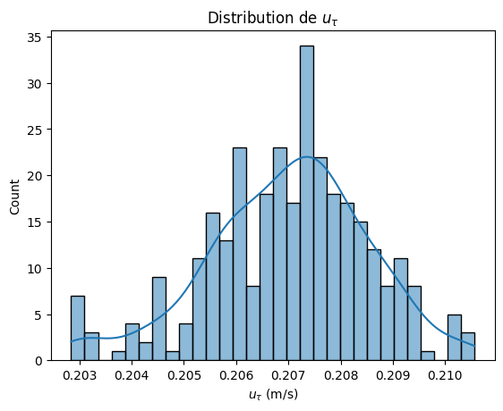
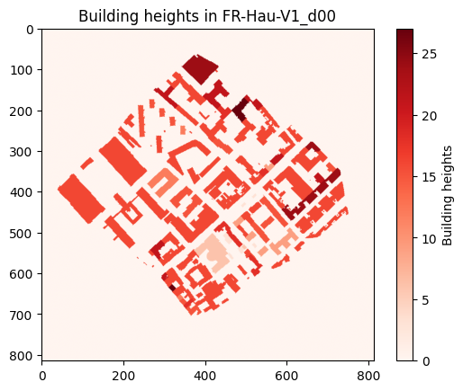
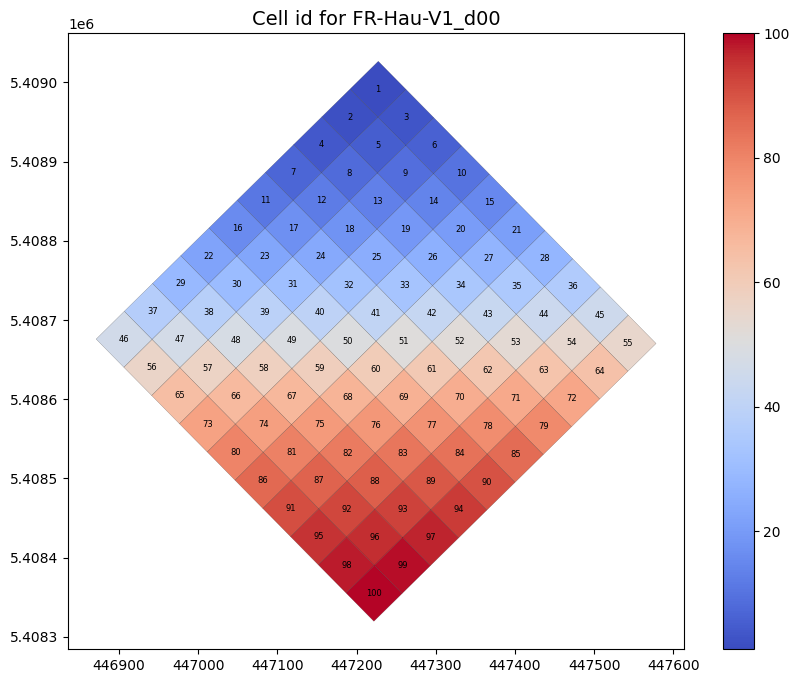
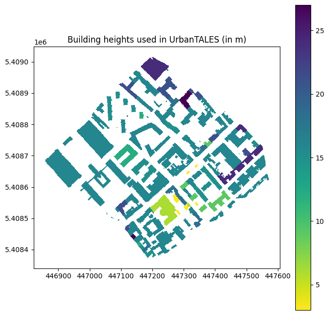
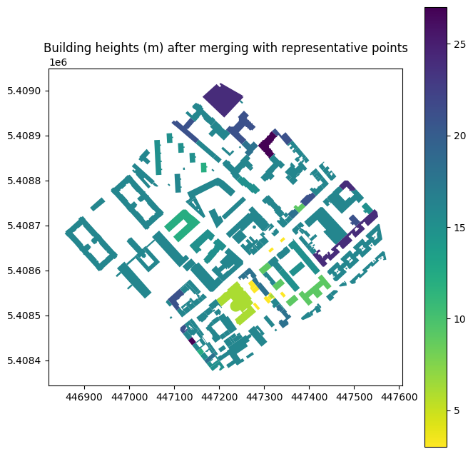
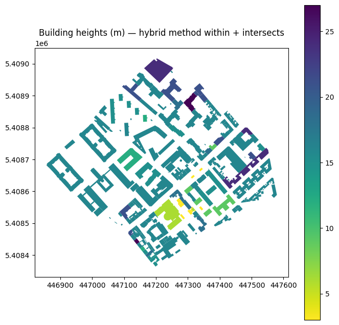
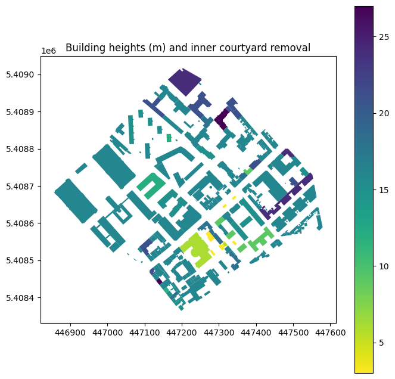
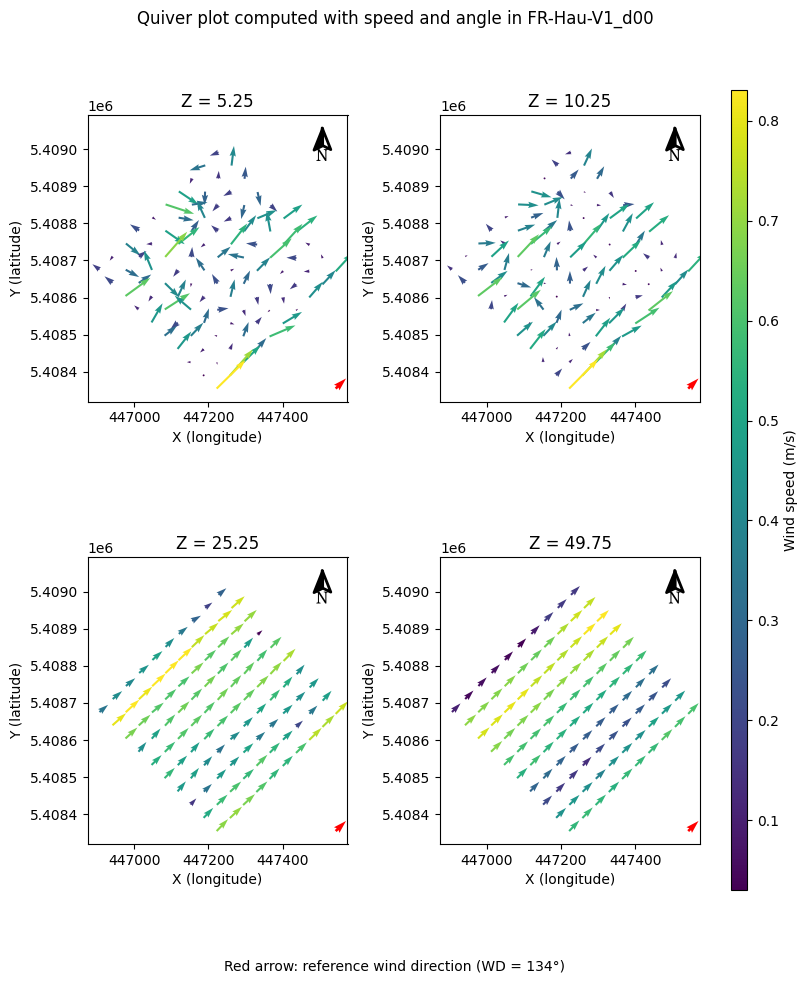
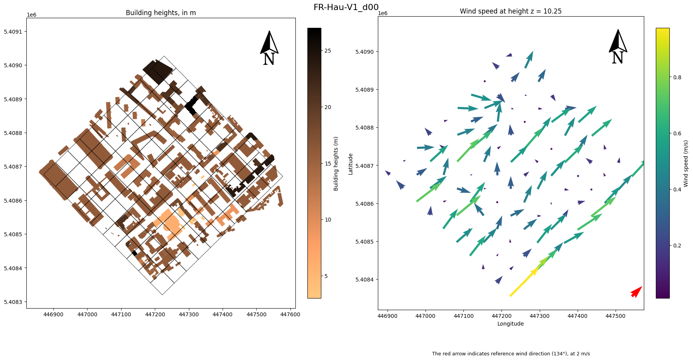

import sys
from pathlib import Path
# Repository root
def find_project_root(marker="LICENCE.LESSER"):
path = Path.cwd().resolve()
for parent in [path, *path.parents]:
if (parent / marker).exists():
return parent
raise FileNotFoundError(f"Root not found (marker : {marker})")
PROJECT_ROOT = find_project_root()
if str(PROJECT_ROOT) not in sys.path:
sys.path.insert(0, str(PROJECT_ROOT))
from scripts.config import (
DATA_DIR, OUTPUT_DIR, PATH_3D, GEOREF_INPUT, GEOREF_OUTPUT, check_paths,
)
check_paths()Pipeline to process the data from UrbanTALES
Copyright (C) 2026 Lenaig Le Grognec
Licensed under the GNU Lesser General Public License v3.0 or later.
See LICENCE.LESSER for details.
Goal
This notebook runs the workflow for one scenario at a time, providing visual overviews to help understand each step of the processing pipeline
Settings
Make sure to adopt the following folder architecture:
- Data
- GeoReference
- Georef_input
- Georef_output
- UrbanTALES
- 3Dwind : contains all
.ncwind data files - png : contains all
.pngfiles downloaded from UrbanTALES website - topo : contains all topo files downloaded from UrbanTALES website
- metadata.csv
- z_values.csv
- 3Dwind : contains all
- Extracting_buildings
- GeoReference
- georef-UrbanTALES (git repository)
import pandas as pd
from importlib import reload
import os
import scripts.grid as grid
import scripts.wind_grid as wgrid
import scripts.geo_grid as ggrid
import scripts.final_grid as fg
import scripts.metadata as mt
import scripts.netcdf as nc
import scripts.topo_raster as tr
import scripts.topo_raster_georef as trg
import scripts.raster as r
reload(grid)
reload(wgrid)
reload(ggrid)
reload(fg)
reload(mt)
reload(nc)
reload(tr)
reload(trg)
reload(r)
from scripts.metadata import Metadata
from scripts.netcdf import NetCdf
from scripts.topo_raster import TopoRaster
from scripts.topo_raster_georef import TopoRasterGeoref
from scripts.grid import Grid
from scripts.wind_grid import WindGrid
from scripts.geo_grid import GeoGrid
from scripts.final_grid import FinalGrid
import scripts.functions as fct
reload(fct)<module 'scripts.functions' from '/home/llegrogn/Documents/These_Lenaig_perso/Lenaig_Le_Grognec/4.Coding/Georef_UrbanTALES/georef-UrbanTALES/scripts/functions.py'>Open metadata file
m = Metadata(path_metadata=os.path.join(
DATA_DIR,
"UrbanTALES",
"metadata.csv"))
m.metadata_df| NameI | NameE | Config | WD | dxdy | City | State | Country | Longitude | Latitude | ... | gammaH | gamma | hmean | hstd | hmax | hmin | H/h | SAR | angle_domain | name_topo | |
|---|---|---|---|---|---|---|---|---|---|---|---|---|---|---|---|---|---|---|---|---|---|
| 0 | m1 | AU-Syd-U1_d00 | realistic-uniform | 0 | 1.0 | Sydney | New South Wales | Australia | 151.251081 | -33.931136 | ... | 8.5901 | 0.4103 | 16.000000 | 0.000000 | 16.0 | 16.0 | 8.000000 | R | NaN | NaN |
| 1 | m2 | AU-Syd-U2_d00 | realistic-uniform | 0 | 1.0 | Sydney | New South Wales | Australia | 151.096522 | -33.855500 | ... | 10.4146 | 0.3866 | 16.000000 | 0.000000 | 16.0 | 16.0 | 8.000000 | R | NaN | NaN |
| 2 | m3 | AU-Syd-U3_d00 | realistic-uniform | 0 | 1.0 | Sydney | New South Wales | Australia | 151.276797 | -33.882158 | ... | 3.1888 | 0.3055 | 16.000000 | 0.000000 | 16.0 | 16.0 | 8.000000 | R | NaN | NaN |
| 3 | m4 | AU-Syd-U4_d00 | realistic-uniform | 0 | 1.0 | Sydney | New South Wales | Australia | 151.182139 | -33.788467 | ... | 6.7426 | 0.3759 | 16.000000 | 0.000000 | 16.0 | 16.0 | 8.000000 | R | NaN | NaN |
| 4 | m5 | AU-Syd-U5_d00 | realistic-uniform | 0 | 1.0 | Sydney | New South Wales | Australia | 151.212033 | -33.869675 | ... | 12.4763 | 0.2776 | 16.000000 | 0.000000 | 16.0 | 16.0 | 8.000000 | R | NaN | NaN |
| ... | ... | ... | ... | ... | ... | ... | ... | ... | ... | ... | ... | ... | ... | ... | ... | ... | ... | ... | ... | ... | ... |
| 309 | 120B15 | CN-Bei-V1_d120 | realistic-variable | 120 | 1.0 | 首都功能核心区 | Beijing | China | 116.386431 | 39.911947 | ... | 10.5796 | 0.2922 | 14.291722 | 3.532845 | 16.0 | 1.0 | 8.956234 | R | 92.122 | NaN |
| 310 | 135B15 | CN-Bei-V1_d135 | realistic-variable | 135 | 1.0 | 首都功能核心区 | Beijing | China | 116.386431 | 39.911947 | ... | 9.8973 | 0.2867 | 14.291722 | 3.532845 | 16.0 | 1.0 | 8.956234 | R | 92.122 | NaN |
| 311 | 150B15 | CN-Bei-V1_d150 | realistic-variable | 150 | 1.0 | 首都功能核心区 | Beijing | China | 116.386431 | 39.911947 | ... | 10.5681 | 0.2905 | 14.291722 | 3.532845 | 16.0 | 1.0 | 8.956234 | R | 92.122 | NaN |
| 312 | 165B15 | CN-Bei-V1_d165 | realistic-variable | 165 | 1.0 | 首都功能核心区 | Beijing | China | 116.386431 | 39.911947 | ... | 13.0649 | 0.2925 | 14.291722 | 3.532845 | 16.0 | 1.0 | 8.956234 | R | 92.122 | NaN |
| 313 | 180B15 | CN-Bei-V1_d180 | realistic-variable | 180 | 1.0 | 首都功能核心区 | Beijing | China | 116.386431 | 39.911947 | ... | 19.5897 | 0.2473 | 14.291722 | 3.532845 | 16.0 | 1.0 | 8.956234 | R | 92.122 | NaN |
314 rows × 25 columns
m.metadata_df.describe()| dxdy | Longitude | Latitude | u_tau | x/y | lp | lf | gammaH | gamma | hmean | hstd | hmax | hmin | H/h | angle_domain | |
|---|---|---|---|---|---|---|---|---|---|---|---|---|---|---|---|
| count | 314.000000 | 314.000000 | 314.000000 | 314.000000 | 314.000000 | 314.000000 | 314.000000 | 314.000000 | 314.000000 | 314.000000 | 314.000000 | 314.000000 | 314.000000 | 314.000000 | 135.00000 |
| mean | 0.992038 | 39.789028 | 22.413165 | 0.206988 | 1.129496 | 0.253992 | 0.542101 | 14.726920 | 0.384481 | 18.210344 | 4.521718 | 27.089172 | 10.531847 | 7.898320 | 65.03699 |
| std | 0.062690 | 92.046520 | 34.076416 | 0.001523 | 0.313930 | 0.098807 | 0.253442 | 12.731449 | 0.124063 | 5.937623 | 6.108386 | 14.933666 | 6.260118 | 4.528503 | 99.44907 |
| min | 0.500000 | -123.130161 | -42.865581 | 0.202841 | 0.411765 | 0.055577 | 0.077674 | 2.281200 | 0.094600 | 2.413570 | 0.000000 | 6.000000 | 1.000000 | 3.135097 | -172.82300 |
| 25% | 1.000000 | 2.169479 | 1.321028 | 0.205994 | 0.923077 | 0.183099 | 0.378000 | 8.420000 | 0.301975 | 16.000000 | 0.000000 | 16.000000 | 3.000000 | 7.257166 | 46.42550 |
| 50% | 1.000000 | 30.629319 | 38.836962 | 0.207094 | 1.120467 | 0.232594 | 0.512625 | 11.496800 | 0.377300 | 16.000000 | 0.000000 | 16.000000 | 16.000000 | 8.000000 | 94.02800 |
| 75% | 1.000000 | 127.013736 | 47.562188 | 0.208003 | 1.304299 | 0.324399 | 0.655615 | 16.116175 | 0.439925 | 17.637740 | 7.377760 | 48.000000 | 16.000000 | 8.000000 | 120.56350 |
| max | 1.000000 | 153.008211 | 60.167800 | 0.210566 | 2.428571 | 0.541704 | 2.120694 | 128.527500 | 0.808200 | 40.828086 | 20.066561 | 50.000000 | 16.000000 | 53.033480 | 218.76400 |
Example with the scenario FR-Hau-V1_d00:
m.metadata_df[m.metadata_df["NameE"]=="FR-Hau-V1_d00"]| NameI | NameE | Config | WD | dxdy | City | State | Country | Longitude | Latitude | ... | gammaH | gamma | hmean | hstd | hmax | hmin | H/h | SAR | angle_domain | name_topo | |
|---|---|---|---|---|---|---|---|---|---|---|---|---|---|---|---|---|---|---|---|---|---|
| 142 | A8 | FR-Hau-V1_d00 | realistic-variable | 0 | 1.0 | Hauts-de-Seine | Metropolitan France | France | 2.275739 | 48.829097 | ... | 12.4703 | 0.3329 | 16.123446 | 3.708705 | 27.0 | 3.0 | 7.93875 | R | 44.368 | FR-PA-V1_d00 |
1 rows × 25 columns
Insights on the initial wind speed used in UrbanTALES simulations. Focus on wind forcing \(u_{\tau}\).
import matplotlib.pyplot as plt
import seaborn as sns
m.metadata_df = m.metadata_df.rename(columns={"$u_{\\tau}$" : "u_tau"})
m.metadata_df[["u_tau"]]
plt.figure()
sns.histplot(
m.metadata_df['u_tau'],
kde=True,
bins=30
)
plt.xlabel(r"$u_{\tau}$ (m/s)")
plt.ylabel("Count")
plt.title("Distribution de $u_{\\tau}$")
plt.show()
Which geographical domain do we focus on?
All available scenarios:
filenames_list = m.metadata_df["NameE"].unique()
filenames_listarray(['AU-Syd-U1_d00', 'AU-Syd-U2_d00', 'AU-Syd-U3_d00',
'AU-Syd-U4_d00', 'AU-Syd-U5_d00', 'AU-Syd-U6_d00',
'AU-Syd-U7_d00', 'AU-Mel-U1_d00', 'AU-Mel-U2_d00',
'AU-Mel-U3_d00', 'AU-Mel-U4_d00', 'AU-Mel-U5_d00',
'AU-Mel-U6_d00', 'AU-Mel-U7_d00', 'AU-Mel-U8_d00',
'AU-Mel-U9_d00', 'AU-Mel-U10_d00', 'AU-Mel-U11_d00',
'AU-Mel-U12_d00', 'AU-Mel-U13_d00', 'AU-Mel-U14_d00',
'AU-Mel-U15_d00', 'AU-Mel-U16_d00', 'AU-Mel-U17_d00',
'AU-Mel-U18_d00', 'AU-Mel-U19_d00', 'US-Chi-U1_d00',
'US-Det-U1_d00', 'US-Det-U2_d00', 'US-Det-U3_d00',
'US-Det-U4_d00', 'US-Det-U5_d00', 'ES-Bar-U1_d00',
'CH-Zur-U1_d00', 'CH-Zur-U2_d00', 'CH-Bas-U1_d00',
'NL-AMS-U1_d00', 'SG-Boo-U1_d00', 'US-Det-U6_d00',
'US-Det-U7_d00', 'US-Det-U8_d00', 'US-Det-U9_d00',
'US-Det-U10_d00', 'US-Los-U1_d00', 'CA-Van-U1_d00',
'CA-Van-U2_d00', 'US-Mia-U1_d00', 'US-Mia-U2_d00',
'US-Det-U11_d00', 'US-Pho-U1_d00', 'US-Pho-U2_d00',
'US-Pho-U3_d00', 'US-Pho-U4_d00', 'US-Bos-U1_d00',
'US-Pho-U5_d00', 'US-New-U1_d00', 'US-Bos-U2_d00',
'US-Was-U1_d00', 'US-Was-U2_d00', 'Val-AU-Mel-U11_d00',
'Val-AU-Mel-U9_d00', 'Val-AU-Mel-U12_d00',
'Val-AU-Mel-U2_d00', 'Val-US-Chi-U1_d00',
'US-New-V1_d00', 'SG-Boo-V1_d00', 'CH-Zur-V1_d00',
'CH-Zur-V2_d00', 'CA-Van-V1_d00', 'ES-Bar-V1_d00',
'US-New-V2_d00', 'CA-Van-V2_d00', 'CA-Van-V3_d00',
'IT-Rom-V1_d00', 'IT-Rom-V2_d00', 'IT-Rom-V3_d00',
'IT-Rom-V4_d00', 'NL-Del-V1_d00', 'NL-Del-V2_d00',
'RU-Mos-V1_d00', 'US-New-U2_d00', 'SG-Boo-U2_d00',
'US-New-U3_d00', 'CA-Van-U3_d00', 'CA-Van-U4_d00',
'IT-Rom-U1_d00', 'IT-Rom-U2_d00', 'IT-Rom-U3_d00',
'IT-Rom-U4_d00', 'NL-Del-U1_d00', 'NL-Del-U2_d00',
'RU-Mos-U1_d00', 'AU-Hob-V1_d00', 'AU-Can-V1_d00',
'AU-Can-V2_d00', 'AU-Hob-V2_d00', 'AU-Syd-V1_d00',
'AU-Mel-V1_d00', 'AU-Syd-V2_d00', 'AU-Can-V3_d00',
'AU-Mel-V2_d00', 'AU-Bri-V1_d00', 'AU-Ade-V1_d00',
'AU-Per-V1_d00', 'CH-Bas-V1_d00', 'JP-Tok-V1_d00',
'JP-Tok-U2_d00', 'JP-Tok-V3_d00', 'JP-Tok-V4_d00',
'BR-Sao-U1_d00', 'BR-Sao-U2_d00', 'BR-Sao-U3_d00',
'NP-Kat-U1_d00', 'NP-Kat-U2_d00', 'AR-Bue-U1_d00',
'AR-Bue-U2_d00', 'CM-Yao-U1_d00', 'CM-Yao-U2_d00',
'CM-Yao-U3_d00', 'CM-Yao-U4_d00', 'TA-Dod-U1_d00',
'TA-Dod-U2_d00', 'TA-Dod-U3_d00', 'UG-Kat-U1_d00',
'UG-Mak-U2_d00', 'UG-Rub-U3_d00', 'KO-Yeo-U1_d00',
'KO-Hae-U2_d00', 'KO-Ich-U3_d00', 'KO-Seo-U4_d00',
'AR-Bue-V1_d00', 'KO-Yeo-V1_d00', 'KO-Hae-V2_d00',
'KO-Ich-V3_d00', 'KO-Seo-V4_d00', 'KO-Ban-V5_d00',
'KO-Seo-V6_d00', 'KO-Yeo-V7_d00', 'KO-Doh-V8_d00',
'KO-Sih-V9_d00', 'KO-Dok-V10_d00', 'KO-Dae-V11_d00',
'FR-Hau-V1_d00', 'FR-Par-V2_d00', 'FI-Hel-V1_d00',
'UA-Kyi-V1_d00', 'UA-Kyi-V2_d00', 'UA-Kyi-V3_d00',
'UA-Kyi-V4_d00', 'UA-Kyi-V5_d00', 'UA-Kyi-V6_d00',
'UA-Kyi-V7_d00', 'UA-Kyi-V8_d00', 'UA-Kyi-V9_d00',
'UA-Kyi-V10_d00', 'UA-Kyi-V11_d00', 'UA-Kyi-V12_d00',
'UA-Kyi-V13_d00', 'UA-Kyi-V14_d00', 'UA-Kyi-V15_d00',
'CN-Bei-V1_d00', 'CN-Sha-V1_d00', 'CN-Bei-V2_d00',
'CN-Che-V1_d00', 'AU-Preston', 'AU-SurreyHills',
'CA-Sunset', 'FI-Torni', 'JP-Yoyogi', 'NL-Amsterdam',
'PL-Lipowa', 'PL-Narutowicza', 'SG-TelokKurau06',
'US-WestPhoenix', 'SG-Boo-U1_d90', 'US-Det-U6_d90',
'US-Det-U7_d90', 'US-Det-U8_d90', 'US-Det-U9_d90',
'US-Det-U10_d90', 'US-Los-U1_d90', 'CA-Van-U1_d90',
'CA-Van-U2_d90', 'US-Mia-U1_d90', 'US-Mia-U2_d90',
'US-Det-U11_d90', 'US-Pho-U1_d90', 'US-Pho-U2_d90',
'US-Pho-U3_d90', 'US-Pho-U4_d90', 'US-Bos-U1_d90',
'US-Pho-U5_d90', 'US-New-U1_d90', 'US-Bos-U2_d90',
'US-Was-U1_d90', 'US-Was-U2_d90', 'CH-Zur-U1_d90',
'CH-Zur-U2_d90', 'CH-Bas-U1_d90', 'NL-AMS-U1_d90',
'CA-Van-U3_d90', 'CA-Van-U4_d90', 'IT-Rom-U1_d90',
'IT-Rom-U2_d90', 'IT-Rom-U3_d90', 'IT-Rom-U4_d90',
'NL-Del-U1_d90', 'NL-Del-U2_d90', 'RU-Mos-U1_d90',
'SG-Boo-U2_d90', 'US-New-U2_d90', 'US-New-U3_d90',
'CH-Zur-V1_d90', 'CA-Van-V2_d90', 'CA-Van-V3_d90',
'IT-Rom-V1_d90', 'IT-Rom-V2_d90', 'CH-Zur-V2_d90',
'IT-Rom-V3_d90', 'IT-Rom-V4_d90', 'NL-Del-V1_d90',
'NL-Del-V2_d90', 'ES-Bar-V1_d90', 'RU-Mos-V1_d90',
'CA-Van-V1_d90', 'SG-Boo-V1_d90', 'US-New-V1_d90',
'US-New-V2_d90', 'AU-Mel-U10_d90', 'AU-Mel-U11_d90',
'AU-Mel-U12_d90', 'AU-Mel-U13_d90', 'AU-Mel-U14_d90',
'AU-Mel-U15_d90', 'AU-Mel-U2_d90', 'AU-Mel-U4_d90',
'AU-Syd-U3_d90', 'AU-Syd-U4_d90', 'AU-Syd-U6_d90',
'AU-Mel-V2_d90', 'AU-Ade-V1_d90', 'AU-Per-V1_d90',
'KO-Seo-V4_d15', 'KO-Seo-V4_d30', 'KO-Seo-V4_d45',
'KO-Seo-V4_d90', 'KO-Ich-V3_d15', 'KO-Ich-V3_d30',
'KO-Ich-V3_d45', 'KO-Ich-V3_d90', 'AU-Syd-U2_d15',
'AU-Syd-U2_d30', 'AU-Syd-U2_d45', 'AU-Syd-U2_d90',
'AU-Mel-U16_d15', 'AU-Mel-U16_d30', 'AU-Mel-U16_d45',
'AU-Mel-U16_d90', 'UA-Kyi-V14_d15', 'UA-Kyi-V14_d30',
'UA-Kyi-V14_d45', 'UA-Kyi-V14_d90', 'UA-Kyi-V1_d15',
'UA-Kyi-V1_d30', 'UA-Kyi-V1_d45', 'UA-Kyi-V1_d90',
'FR-Par-V2_d15', 'FR-Par-V2_d30', 'FR-Par-V2_d45',
'FR-Par-V2_d90', 'KO-Dae-V11_d15', 'KO-Dae-V11_d30',
'KO-Dae-V11_d45', 'KO-Dae-V11_d90', 'KO-Doh-V8_d15',
'KO-Doh-V8_d30', 'KO-Doh-V8_d45', 'KO-Doh-V8_d90',
'UA-Kyi-V6_d15', 'UA-Kyi-V6_d30', 'UA-Kyi-V6_d45',
'UA-Kyi-V5_d15', 'UA-Kyi-V5_d30', 'UA-Kyi-V5_d45',
'UA-Kyi-V7_d15', 'UA-Kyi-V7_d30', 'UA-Kyi-V7_d45',
'UA-Kyi-V3_d15', 'UA-Kyi-V3_d30', 'UA-Kyi-V3_d45',
'UA-Kyi-V8_d15', 'UA-Kyi-V8_d30', 'UA-Kyi-V8_d45',
'SG-Boo-U1_d15', 'SG-Boo-U1_d30', 'SG-Boo-U1_d45',
'US-Pho-U3_d15', 'US-Pho-U3_d30', 'US-Pho-U3_d45',
'KO-Yeo-V1_d15', 'KO-Yeo-V1_d30', 'KO-Yeo-V1_d45',
'CN-Bei-V1_d15', 'CN-Bei-V1_d30', 'CN-Bei-V1_d45',
'CN-Bei-V1_d60', 'CN-Bei-V1_d75', 'CN-Bei-V1_d90',
'CN-Bei-V1_d105', 'CN-Bei-V1_d120', 'CN-Bei-V1_d135',
'CN-Bei-V1_d150', 'CN-Bei-V1_d165', 'CN-Bei-V1_d180'],
dtype=object)The scenarios used in this workflow:
import scripts.scenario as scenario
reload(scenario)
from scripts.scenario import *
print("List of all scenarios : \n", scenario_list)
print("Number of scenarios : ", len(scenario_list))List of all scenarios :
['AR-Bue-U2_d00', 'BR-Sao-U2_d00', 'BR-Sao-U3_d00', 'CH-Bas-U1_d00', 'CH-Bas-U1_d00', 'CH-Zur-U2_d00', 'CH-Zur-U2_d90', 'CM-Yao-U1_d00', 'CN-Bei-V1_d00', 'CN-Bei-V1_d15', 'CN-Bei-V1_d30', 'CN-Bei-V1_d45', 'CN-Bei-V1_d60', 'CN-Bei-V1_d75', 'CN-Bei-V1_d90', 'CN-Bei-V1_d105', 'CN-Bei-V1_d120', 'CN-Bei-V1_d135', 'CN-Bei-V1_d150', 'CN-Bei-V1_d165', 'CN-Bei-V1_d180', 'ES-Bar-U1_d00', 'ES-Bar-V1_d00', 'ES-Bar-V1_d90', 'FR-Hau-V1_d00', 'FR-Par-V2_d00', 'FR-Par-V2_d15', 'FR-Par-V2_d30', 'FR-Par-V2_d45', 'FR-Par-V2_d90', 'IT-Rom-V1_d00', 'IT-Rom-V1_d90', 'IT-Rom-U1_d00', 'IT-Rom-U1_d90', 'IT-Rom-V2_d00', 'IT-Rom-V2_d90', 'IT-Rom-U2_d00', 'IT-Rom-U2_d90', 'IT-Rom-V3_d00', 'IT-Rom-V3_d90', 'IT-Rom-U3_d00', 'IT-Rom-U3_d90', 'IT-Rom-V4_d00', 'IT-Rom-V4_d90', 'IT-Rom-U4_d00', 'IT-Rom-U4_d90', 'JP-Tok-V3_d00', 'KO-Yeo-V1_d00', 'KO-Yeo-V1_d15', 'KO-Yeo-V1_d30', 'KO-Yeo-V1_d45', 'KO-Hae-U2_d00', 'KO-Ich-V3_d00', 'KO-Ich-V3_d15', 'KO-Ich-V3_d30', 'KO-Ich-V3_d45', 'KO-Doh-V8_d00', 'KO-Doh-V8_d15', 'KO-Doh-V8_d30', 'KO-Doh-V8_d45', 'KO-Doh-V8_d90', 'KO-Dae-V11_d00', 'KO-Dae-V11_d15', 'KO-Dae-V11_d30', 'KO-Dae-V11_d45', 'KO-Dae-V11_d90', 'NL-AMS-U1_d00', 'NL-AMS-U1_d90', 'NL-Del-U1_d00', 'NL-Del-U1_d90', 'NL-Del-V1_d00', 'NL-Del-V1_d90', 'NL-Del-V2_d00', 'NL-Del-V2_d90', 'NL-Del-U2_d00', 'NL-Del-U2_d90', 'RU-Mos-V1_d00', 'RU-Mos-V1_d90', 'RU-Mos-U1_d00', 'RU-Mos-U1_d90', 'SG-Boo-U2_d00', 'SG-Boo-U2_d90', 'SG-Boo-V1_d00', 'SG-Boo-V1_d90', 'TA-Dod-U1_d00', 'TA-Dod-U2_d00', 'TA-Dod-U3_d00', 'UA-Kyi-V1_d00', 'UA-Kyi-V1_d15', 'UA-Kyi-V1_d30', 'UA-Kyi-V1_d45', 'UA-Kyi-V1_d90', 'UA-Kyi-V2_d00', 'UA-Kyi-V3_d00', 'UA-Kyi-V3_d15', 'UA-Kyi-V3_d30', 'UA-Kyi-V3_d45', 'UA-Kyi-V4_d00', 'UA-Kyi-V5_d00', 'UA-Kyi-V5_d15', 'UA-Kyi-V5_d30', 'UA-Kyi-V5_d45', 'UA-Kyi-V6_d00', 'UA-Kyi-V6_d15', 'UA-Kyi-V6_d30', 'UA-Kyi-V6_d45', 'UA-Kyi-V7_d00', 'UA-Kyi-V7_d15', 'UA-Kyi-V7_d30', 'UA-Kyi-V7_d45', 'UA-Kyi-V8_d00', 'UA-Kyi-V8_d15', 'UA-Kyi-V8_d30', 'UA-Kyi-V8_d45', 'UA-Kyi-V10_d00', 'UA-Kyi-V11_d00', 'UA-Kyi-V12_d00', 'UA-Kyi-V14_d00', 'UA-Kyi-V14_d15', 'UA-Kyi-V14_d30', 'UA-Kyi-V14_d45', 'UA-Kyi-V14_d90', 'UA-Kyi-V15_d00']
Number of scenarios : 123The georeference workflow retrieve all information on wind data from the name of the scenario i.e. filename. In the processing chain, the 3D wind data stored in .nc files are removed so as not to overload the storage space.
It is strongly recommended that you keep a backup copy of the NetCDF files on a storage device outside the project environment.
Retrieve nc file code with filename :
# filename = scenario_list[0]
filename = "FR-Hau-V1_d00"
print(filename)
nc_code = m.metadata_df["NameI"][m.metadata_df["NameE"] == filename].iloc[0]
if pd.isna(nc_code) or not str(nc_code).strip():
print(f"NameI (nc file code) is empty: {nc_code}.")
nc_file = f"{nc_code}_data.nc"
nc_path = os.path.join(path_3D, nc_file)
if os.path.exists(nc_path) :
print(f"{nc_file} found at: {nc_path}")
else :
print(f"File not found at: {nc_path}")
print(f"The file may already have been deleted and converted to raster layers.")FR-Hau-V1_d00
File not found at: /home/llegrogn/Documents/These_Lenaig_perso/Lenaig_Le_Grognec/4.Coding/Projet_git/Data/Copie_UrbanTALES/3Dwind/A8_data.nc
The file may already have been deleted and converted to raster layers.… or retrieve filename and nc file code with country :
country = "France"
scenario_list = m.retrieve_filenames(country=country)
# nc_list = fct.list_nc_files(path_3d_folder=path_3D)
print(scenario_list)[('A8', 'FR-Hau-V1_d00'), ('A9', 'FR-Par-V2_d00'), ('15A9', 'FR-Par-V2_d15'), ('30A9', 'FR-Par-V2_d30'), ('45A9', 'FR-Par-V2_d45'), ('90A9', 'FR-Par-V2_d90')]Retrieve all wind information on this scenario :
wind_dict = m.retrieve_wind_info(filename)
epsg = wind_dict["epsg"].to_epsg()
wind_dict{'filename_e': 'FR-Hau-V1_d00',
'filename_i': 'A8',
'wind_dir': '0',
'lon': 2.2757388888888888,
'lat': 48.829097222222224,
'city': 'Hauts-de-Seine',
'localisation': 'Hauts-de-Seine',
'epsg': <Projected CRS: EPSG:32631>
Name: WGS 84 / UTM zone 31N
Axis Info [cartesian]:
- E[east]: Easting (metre)
- N[north]: Northing (metre)
Area of Use:
- name: Between 0°E and 6°E, northern hemisphere between equator and 84°N, onshore and offshore. Algeria. Andorra. Belgium. Benin. Burkina Faso. Denmark - North Sea. France. Germany - North Sea. Ghana. Luxembourg. Mali. Netherlands. Niger. Nigeria. Norway. Spain. Togo. United Kingdom (UK) - North Sea.
- bounds: (0.0, 0.0, 6.0, 84.0)
Coordinate Operation:
- name: UTM zone 31N
- method: Transverse Mercator
Datum: World Geodetic System 1984 ensemble
- Ellipsoid: WGS 84
- Prime Meridian: Greenwich}Copy the following coordinates in OSM Nominatim:
print(wind_dict.get("lat"), ",", wind_dict.get("lon"))48.829097222222224 , 2.2757388888888888The OSM Nominatim service will allow you to visualize this scenario. The UrbanTALES png file can help you to make the visual correspondence between building footprints.
Load nc file
In this step, the NetCDF file is retrieved, transformed into 100 rasters (one per height layer). The .nc file is deleted after this step. It is strongly recommended that you keep a backup copy of the NetCDF files on a storage device outside the project environment.
nc = NetCdf(
filename_e=filename, metadata=m, path_3d_folder=PATH_3D, georef_input=GEOREF_INPUT
)
nc.nc_xr
nc.process_nc(overwrite=False)⚠️ NetCDF file not found: %s /home/llegrogn/Documents/These_Lenaig_perso/Lenaig_Le_Grognec/4.Coding/Georef_UrbanTALES/Data/UrbanTALES/3Dwind/A8_data.nc
All rasters (.tif files) exist, no need to process NetCDF file.
Files are stored at : /home/llegrogn/Documents/These_Lenaig_perso/Lenaig_Le_Grognec/4.Coding/Georef_UrbanTALES/Data/GeoReference/Georef_input/FR-Hau-V1_d00
⚠️ NetCDF file not found: %s /home/llegrogn/Documents/These_Lenaig_perso/Lenaig_Le_Grognec/4.Coding/Georef_UrbanTALES/Data/UrbanTALES/3Dwind/None_data.nc
Nc file already deleted or not found,
If any doubt, please check the data stored in SSD support.Topo file to raster
Open and process to rasterize the topo file used in UrbanTALES associated with the filename_e.
To begin: add name_topo in metada. This could be filename_e or another name, please check the associated folder to confirm.
# Add name_topo of the domain
df = m.metadata_df
# Finding line which NameE begins with filename
match_df = df[df["NameE"].astype(str) == str(filename)]
# match_df["angle_domain"] = pd.NA
if not match_df.empty:
# We retrieve first correspondence
row = match_df.iloc[0]
if pd.notna(row.get("name_topo")):
name_topo = str(row["name_topo"])
print(f"Topo file name retrieved from metadata : {name_topo}")
else:
print("Enter the topo name manually (name_topo empty in metadata)")
# Determine the name of topo file from associated folder
name_topo = "new_name_topo" # <--- change this entry
m.metadata_df = m.add_name_topo_to_metadata(name_topo=name_topo, filename_e=filename)
else:
print("Enter the name of topo file manually (no correspondance in NameE)")Topo file name retrieved from metadata : FR-PA-V1_d00If need to change name_topo :
# df = m.metadata_df
# # please check the Data/UrbanTALES/topo folder to find the correct topo name
# name_topo_modified = "new_name_topo" # <--- change this entry
# match_df = df[df["NameE"].astype(str) == str(filename)]
# if not match_df.empty:
# row = match_df.iloc[0]
# m.metadata_df = m.add_name_topo_to_metadata(
# name_topo=name_topo_modified, filename_e=filename)topo_test = TopoRaster(
filename_e=filename,
georef_input=GEOREF_INPUT,
georef_output=GEOREF_OUTPUT,
path_data=DATA_DIR,
m=m,
)
# topo_test.dataset
# topo_test.close[INFO] Topo file found in location: /home/llegrogn/Documents/These_Lenaig_perso/Lenaig_Le_Grognec/4.Coding/Georef_UrbanTALES/Data/UrbanTALES/topo/FR-PA-V1_d00/FR-PA-V1_d00_topo
✅ Topo raster already exists at /home/llegrogn/Documents/These_Lenaig_perso/Lenaig_Le_Grognec/4.Coding/Georef_UrbanTALES/Data/Extracting_buildings/FR-Hau-V1_d00/layer_topo.tif.
✅ TopoRaster successfully initialized for FR-Hau-V1_d00.Georeference operation
For georeference operations, we did not compute any classes and choose to use functions instead.
Steps to prepare for georeferencing:
- Open a QGIS project
- Set the project’s EPSG code to the EPSG code found in the metadata (
epsgobject) - Load an OSM layer into the QGIS project
- Using the domain’s location and the scenario visualization in Nominatim, locate the scenario visually on the OSM layer in the QGIS project
- Open
Layer > Georeferenceand load the first wind raster (wind_layer_0.25.tif) - Place at least 4 points on this raster by matching them with the domain identified in QGIS
- Apply a polynomial transformation (more details given in corresponding paper)
- After this transformation, generate a GDAL script by selecting in the Georeferencer window
File > Generate a GDAL script - Save this script in
Georef_input > filename > gdal_command.txt.
Run the following cell to know if you have to process manually or if the gdal command already exists:
import scripts.functions as fct
fct.find_gcp(filename=filename, georef_input=georef_input)File 'gdal_command.txt' already exists.Then launch the georeferencement:
import scripts.functions as fct
reload(fct)
groovy_georef_path = os.path.join(
PROJECT_ROOT,
"groovy",
"WindDataGDALCommands.groovy",
)
fct.georeferencement(
filename_e=filename,
topo=topo_test,
georef_input=GEOREF_INPUT,
georef_output=GEOREF_OUTPUT,
path_data=DATA_DIR,
groovy_path=groovy_georef_path,
)Prepare tmp folder like presented in 0_expl_tmp.
[INFO] Topo file found in location: /home/llegrogn/Documents/These_Lenaig_perso/Lenaig_Le_Grognec/4.Coding/Georef_UrbanTALES/Data/UrbanTALES/topo/FR-PA-V1_d00/FR-PA-V1_d00_topo
Copying topo file...
Copying wind files...
Copying groovy script...
✅ All files have been copied to /tmp/lenaig.
Standard output : echo A set of GDAL commands to transform the wind images in the good projection
echo Step 1 : Extract the polygon as a geometry
echo replace NaN values to -9999
gdal_calc.py -A /tmp/lenaig/wind_layer_0.25.tif --outfile=/tmp/lenaig/results/wind_layer_0.25_nan.tif --calc='numpy.nan_to_num(A, nan=-9999)'
echo start translating... /tmp/lenaig/results/wind_layer_0.25_georef.tif
gdal_translate -of GTiff -gcp 30.206 551.241 446857.222 5408683.655 -gcp 504.774 552.818 447193.487 5409014.451 -gcp 542.874 79.07 447553.772 5408703.921 -gcp 156.992 229.265 447172.658 5408540.881 -gcp 296.105 407.131 447146.522 5408765.576 /tmp/lenaig/results/wind_layer_0.25_nan.tif /tmp/lenaig/results/wind_layer_0.25_translate.tif
echo end translating... /tmp/lenaig/results/wind_layer_0.25_translate.tif
echo edit the projection of the raster
gdalwarp -r near -order 1 -co COMPRESS=None -t_srs EPSG:32631 /tmp/lenaig/results/wind_layer_0.25_translate.tif /tmp/lenaig/results/wind_layer_0.25_georef.tif
echo reclass ... /tmp/lenaig/results/wind_layer_0.25_georef.tif
gdal_calc.py -A /tmp/lenaig/results/wind_layer_0.25_georef.tif --outfile=/tmp/lenaig/results/wind_layer_0.25_rec.tif --calc='A>=-9999'
echo polygozine ... /tmp/lenaig/results/wind_layer_0.25_rec.tif
gdal_polygonize.py /tmp/lenaig/results/wind_layer_0.25_rec.tif -b 1 /tmp/lenaig/results/wind_layer_0.25_polygon.shp
rm /tmp/lenaig/results/wind_layer_0.25_rec.tif /tmp/lenaig/results/wind_layer_0.25_translate.tif /tmp/lenaig/results/wind_layer_0.25_nan.tif /tmp/lenaig/results/wind_layer_0.25_georef.tif
echo Step 2 : Georeferencing all images by level 25, 30, 35...
echo Start image : /tmp/lenaig/wind_layer_0.25.tif
echo start translating... /tmp/lenaig/results/wind_layer_0.25_georef.tif
gdal_translate -of GTiff -gcp 30.206 551.241 446857.222 5408683.655 -gcp 504.774 552.818 447193.487 5409014.451 -gcp 542.874 79.07 447553.772 5408703.921 -gcp 156.992 229.265 447172.658 5408540.881 -gcp 296.105 407.131 447146.522 5408765.576 /tmp/lenaig/wind_layer_0.25.tif /tmp/lenaig/results/wind_layer_0.25_translate.tif
echo end translating... /tmp/lenaig/results/wind_layer_0.25_translate.tif
echo edit the projection of the raster
gdalwarp -r near -order 1 -co COMPRESS=None -t_srs EPSG:32631 /tmp/lenaig/results/wind_layer_0.25_translate.tif /tmp/lenaig/results/wind_layer_0.25_georef.tif
rm /tmp/lenaig/results/wind_layer_0.25_translate.tif
echo End image : /tmp/lenaig/wind_layer_0.25.tif
echo Start image : /tmp/lenaig/wind_layer_0.75.tif
echo start translating... /tmp/lenaig/results/wind_layer_0.75_georef.tif
gdal_translate -of GTiff -gcp 30.206 551.241 446857.222 5408683.655 -gcp 504.774 552.818 447193.487 5409014.451 -gcp 542.874 79.07 447553.772 5408703.921 -gcp 156.992 229.265 447172.658 5408540.881 -gcp 296.105 407.131 447146.522 5408765.576 /tmp/lenaig/wind_layer_0.75.tif /tmp/lenaig/results/wind_layer_0.75_translate.tif
echo end translating... /tmp/lenaig/results/wind_layer_0.75_translate.tif
echo edit the projection of the raster
gdalwarp -r near -order 1 -co COMPRESS=None -t_srs EPSG:32631 /tmp/lenaig/results/wind_layer_0.75_translate.tif /tmp/lenaig/results/wind_layer_0.75_georef.tif
rm /tmp/lenaig/results/wind_layer_0.75_translate.tif
echo End image : /tmp/lenaig/wind_layer_0.75.tif
echo Start image : /tmp/lenaig/wind_layer_1.25.tif
echo start translating... /tmp/lenaig/results/wind_layer_1.25_georef.tif
gdal_translate -of GTiff -gcp 30.206 551.241 446857.222 5408683.655 -gcp 504.774 552.818 447193.487 5409014.451 -gcp 542.874 79.07 447553.772 5408703.921 -gcp 156.992 229.265 447172.658 5408540.881 -gcp 296.105 407.131 447146.522 5408765.576 /tmp/lenaig/wind_layer_1.25.tif /tmp/lenaig/results/wind_layer_1.25_translate.tif
echo end translating... /tmp/lenaig/results/wind_layer_1.25_translate.tif
echo edit the projection of the raster
gdalwarp -r near -order 1 -co COMPRESS=None -t_srs EPSG:32631 /tmp/lenaig/results/wind_layer_1.25_translate.tif /tmp/lenaig/results/wind_layer_1.25_georef.tif
rm /tmp/lenaig/results/wind_layer_1.25_translate.tif
echo End image : /tmp/lenaig/wind_layer_1.25.tif
echo Start image : /tmp/lenaig/wind_layer_1.75.tif
echo start translating... /tmp/lenaig/results/wind_layer_1.75_georef.tif
gdal_translate -of GTiff -gcp 30.206 551.241 446857.222 5408683.655 -gcp 504.774 552.818 447193.487 5409014.451 -gcp 542.874 79.07 447553.772 5408703.921 -gcp 156.992 229.265 447172.658 5408540.881 -gcp 296.105 407.131 447146.522 5408765.576 /tmp/lenaig/wind_layer_1.75.tif /tmp/lenaig/results/wind_layer_1.75_translate.tif
echo end translating... /tmp/lenaig/results/wind_layer_1.75_translate.tif
echo edit the projection of the raster
gdalwarp -r near -order 1 -co COMPRESS=None -t_srs EPSG:32631 /tmp/lenaig/results/wind_layer_1.75_translate.tif /tmp/lenaig/results/wind_layer_1.75_georef.tif
rm /tmp/lenaig/results/wind_layer_1.75_translate.tif
echo End image : /tmp/lenaig/wind_layer_1.75.tif
echo Start image : /tmp/lenaig/wind_layer_2.25.tif
echo start translating... /tmp/lenaig/results/wind_layer_2.25_georef.tif
gdal_translate -of GTiff -gcp 30.206 551.241 446857.222 5408683.655 -gcp 504.774 552.818 447193.487 5409014.451 -gcp 542.874 79.07 447553.772 5408703.921 -gcp 156.992 229.265 447172.658 5408540.881 -gcp 296.105 407.131 447146.522 5408765.576 /tmp/lenaig/wind_layer_2.25.tif /tmp/lenaig/results/wind_layer_2.25_translate.tif
echo end translating... /tmp/lenaig/results/wind_layer_2.25_translate.tif
echo edit the projection of the raster
gdalwarp -r near -order 1 -co COMPRESS=None -t_srs EPSG:32631 /tmp/lenaig/results/wind_layer_2.25_translate.tif /tmp/lenaig/results/wind_layer_2.25_georef.tif
rm /tmp/lenaig/results/wind_layer_2.25_translate.tif
echo End image : /tmp/lenaig/wind_layer_2.25.tif
echo Start image : /tmp/lenaig/wind_layer_2.75.tif
echo start translating... /tmp/lenaig/results/wind_layer_2.75_georef.tif
gdal_translate -of GTiff -gcp 30.206 551.241 446857.222 5408683.655 -gcp 504.774 552.818 447193.487 5409014.451 -gcp 542.874 79.07 447553.772 5408703.921 -gcp 156.992 229.265 447172.658 5408540.881 -gcp 296.105 407.131 447146.522 5408765.576 /tmp/lenaig/wind_layer_2.75.tif /tmp/lenaig/results/wind_layer_2.75_translate.tif
echo end translating... /tmp/lenaig/results/wind_layer_2.75_translate.tif
echo edit the projection of the raster
gdalwarp -r near -order 1 -co COMPRESS=None -t_srs EPSG:32631 /tmp/lenaig/results/wind_layer_2.75_translate.tif /tmp/lenaig/results/wind_layer_2.75_georef.tif
rm /tmp/lenaig/results/wind_layer_2.75_translate.tif
echo End image : /tmp/lenaig/wind_layer_2.75.tif
echo Start image : /tmp/lenaig/wind_layer_3.25.tif
echo start translating... /tmp/lenaig/results/wind_layer_3.25_georef.tif
gdal_translate -of GTiff -gcp 30.206 551.241 446857.222 5408683.655 -gcp 504.774 552.818 447193.487 5409014.451 -gcp 542.874 79.07 447553.772 5408703.921 -gcp 156.992 229.265 447172.658 5408540.881 -gcp 296.105 407.131 447146.522 5408765.576 /tmp/lenaig/wind_layer_3.25.tif /tmp/lenaig/results/wind_layer_3.25_translate.tif
echo end translating... /tmp/lenaig/results/wind_layer_3.25_translate.tif
echo edit the projection of the raster
gdalwarp -r near -order 1 -co COMPRESS=None -t_srs EPSG:32631 /tmp/lenaig/results/wind_layer_3.25_translate.tif /tmp/lenaig/results/wind_layer_3.25_georef.tif
rm /tmp/lenaig/results/wind_layer_3.25_translate.tif
echo End image : /tmp/lenaig/wind_layer_3.25.tif
echo Start image : /tmp/lenaig/wind_layer_3.75.tif
echo start translating... /tmp/lenaig/results/wind_layer_3.75_georef.tif
gdal_translate -of GTiff -gcp 30.206 551.241 446857.222 5408683.655 -gcp 504.774 552.818 447193.487 5409014.451 -gcp 542.874 79.07 447553.772 5408703.921 -gcp 156.992 229.265 447172.658 5408540.881 -gcp 296.105 407.131 447146.522 5408765.576 /tmp/lenaig/wind_layer_3.75.tif /tmp/lenaig/results/wind_layer_3.75_translate.tif
echo end translating... /tmp/lenaig/results/wind_layer_3.75_translate.tif
echo edit the projection of the raster
gdalwarp -r near -order 1 -co COMPRESS=None -t_srs EPSG:32631 /tmp/lenaig/results/wind_layer_3.75_translate.tif /tmp/lenaig/results/wind_layer_3.75_georef.tif
rm /tmp/lenaig/results/wind_layer_3.75_translate.tif
echo End image : /tmp/lenaig/wind_layer_3.75.tif
echo Start image : /tmp/lenaig/wind_layer_4.25.tif
echo start translating... /tmp/lenaig/results/wind_layer_4.25_georef.tif
gdal_translate -of GTiff -gcp 30.206 551.241 446857.222 5408683.655 -gcp 504.774 552.818 447193.487 5409014.451 -gcp 542.874 79.07 447553.772 5408703.921 -gcp 156.992 229.265 447172.658 5408540.881 -gcp 296.105 407.131 447146.522 5408765.576 /tmp/lenaig/wind_layer_4.25.tif /tmp/lenaig/results/wind_layer_4.25_translate.tif
echo end translating... /tmp/lenaig/results/wind_layer_4.25_translate.tif
echo edit the projection of the raster
gdalwarp -r near -order 1 -co COMPRESS=None -t_srs EPSG:32631 /tmp/lenaig/results/wind_layer_4.25_translate.tif /tmp/lenaig/results/wind_layer_4.25_georef.tif
rm /tmp/lenaig/results/wind_layer_4.25_translate.tif
echo End image : /tmp/lenaig/wind_layer_4.25.tif
echo Start image : /tmp/lenaig/wind_layer_4.75.tif
echo start translating... /tmp/lenaig/results/wind_layer_4.75_georef.tif
gdal_translate -of GTiff -gcp 30.206 551.241 446857.222 5408683.655 -gcp 504.774 552.818 447193.487 5409014.451 -gcp 542.874 79.07 447553.772 5408703.921 -gcp 156.992 229.265 447172.658 5408540.881 -gcp 296.105 407.131 447146.522 5408765.576 /tmp/lenaig/wind_layer_4.75.tif /tmp/lenaig/results/wind_layer_4.75_translate.tif
echo end translating... /tmp/lenaig/results/wind_layer_4.75_translate.tif
echo edit the projection of the raster
gdalwarp -r near -order 1 -co COMPRESS=None -t_srs EPSG:32631 /tmp/lenaig/results/wind_layer_4.75_translate.tif /tmp/lenaig/results/wind_layer_4.75_georef.tif
rm /tmp/lenaig/results/wind_layer_4.75_translate.tif
echo End image : /tmp/lenaig/wind_layer_4.75.tif
echo Start image : /tmp/lenaig/wind_layer_5.25.tif
echo start translating... /tmp/lenaig/results/wind_layer_5.25_georef.tif
gdal_translate -of GTiff -gcp 30.206 551.241 446857.222 5408683.655 -gcp 504.774 552.818 447193.487 5409014.451 -gcp 542.874 79.07 447553.772 5408703.921 -gcp 156.992 229.265 447172.658 5408540.881 -gcp 296.105 407.131 447146.522 5408765.576 /tmp/lenaig/wind_layer_5.25.tif /tmp/lenaig/results/wind_layer_5.25_translate.tif
echo end translating... /tmp/lenaig/results/wind_layer_5.25_translate.tif
echo edit the projection of the raster
gdalwarp -r near -order 1 -co COMPRESS=None -t_srs EPSG:32631 /tmp/lenaig/results/wind_layer_5.25_translate.tif /tmp/lenaig/results/wind_layer_5.25_georef.tif
rm /tmp/lenaig/results/wind_layer_5.25_translate.tif
echo End image : /tmp/lenaig/wind_layer_5.25.tif
echo Start image : /tmp/lenaig/wind_layer_5.75.tif
echo start translating... /tmp/lenaig/results/wind_layer_5.75_georef.tif
gdal_translate -of GTiff -gcp 30.206 551.241 446857.222 5408683.655 -gcp 504.774 552.818 447193.487 5409014.451 -gcp 542.874 79.07 447553.772 5408703.921 -gcp 156.992 229.265 447172.658 5408540.881 -gcp 296.105 407.131 447146.522 5408765.576 /tmp/lenaig/wind_layer_5.75.tif /tmp/lenaig/results/wind_layer_5.75_translate.tif
echo end translating... /tmp/lenaig/results/wind_layer_5.75_translate.tif
echo edit the projection of the raster
gdalwarp -r near -order 1 -co COMPRESS=None -t_srs EPSG:32631 /tmp/lenaig/results/wind_layer_5.75_translate.tif /tmp/lenaig/results/wind_layer_5.75_georef.tif
rm /tmp/lenaig/results/wind_layer_5.75_translate.tif
echo End image : /tmp/lenaig/wind_layer_5.75.tif
echo Start image : /tmp/lenaig/wind_layer_6.25.tif
echo start translating... /tmp/lenaig/results/wind_layer_6.25_georef.tif
gdal_translate -of GTiff -gcp 30.206 551.241 446857.222 5408683.655 -gcp 504.774 552.818 447193.487 5409014.451 -gcp 542.874 79.07 447553.772 5408703.921 -gcp 156.992 229.265 447172.658 5408540.881 -gcp 296.105 407.131 447146.522 5408765.576 /tmp/lenaig/wind_layer_6.25.tif /tmp/lenaig/results/wind_layer_6.25_translate.tif
echo end translating... /tmp/lenaig/results/wind_layer_6.25_translate.tif
echo edit the projection of the raster
gdalwarp -r near -order 1 -co COMPRESS=None -t_srs EPSG:32631 /tmp/lenaig/results/wind_layer_6.25_translate.tif /tmp/lenaig/results/wind_layer_6.25_georef.tif
rm /tmp/lenaig/results/wind_layer_6.25_translate.tif
echo End image : /tmp/lenaig/wind_layer_6.25.tif
echo Start image : /tmp/lenaig/wind_layer_6.75.tif
echo start translating... /tmp/lenaig/results/wind_layer_6.75_georef.tif
gdal_translate -of GTiff -gcp 30.206 551.241 446857.222 5408683.655 -gcp 504.774 552.818 447193.487 5409014.451 -gcp 542.874 79.07 447553.772 5408703.921 -gcp 156.992 229.265 447172.658 5408540.881 -gcp 296.105 407.131 447146.522 5408765.576 /tmp/lenaig/wind_layer_6.75.tif /tmp/lenaig/results/wind_layer_6.75_translate.tif
echo end translating... /tmp/lenaig/results/wind_layer_6.75_translate.tif
echo edit the projection of the raster
gdalwarp -r near -order 1 -co COMPRESS=None -t_srs EPSG:32631 /tmp/lenaig/results/wind_layer_6.75_translate.tif /tmp/lenaig/results/wind_layer_6.75_georef.tif
rm /tmp/lenaig/results/wind_layer_6.75_translate.tif
echo End image : /tmp/lenaig/wind_layer_6.75.tif
echo Start image : /tmp/lenaig/wind_layer_7.25.tif
echo start translating... /tmp/lenaig/results/wind_layer_7.25_georef.tif
gdal_translate -of GTiff -gcp 30.206 551.241 446857.222 5408683.655 -gcp 504.774 552.818 447193.487 5409014.451 -gcp 542.874 79.07 447553.772 5408703.921 -gcp 156.992 229.265 447172.658 5408540.881 -gcp 296.105 407.131 447146.522 5408765.576 /tmp/lenaig/wind_layer_7.25.tif /tmp/lenaig/results/wind_layer_7.25_translate.tif
echo end translating... /tmp/lenaig/results/wind_layer_7.25_translate.tif
echo edit the projection of the raster
gdalwarp -r near -order 1 -co COMPRESS=None -t_srs EPSG:32631 /tmp/lenaig/results/wind_layer_7.25_translate.tif /tmp/lenaig/results/wind_layer_7.25_georef.tif
rm /tmp/lenaig/results/wind_layer_7.25_translate.tif
echo End image : /tmp/lenaig/wind_layer_7.25.tif
echo Start image : /tmp/lenaig/wind_layer_7.75.tif
echo start translating... /tmp/lenaig/results/wind_layer_7.75_georef.tif
gdal_translate -of GTiff -gcp 30.206 551.241 446857.222 5408683.655 -gcp 504.774 552.818 447193.487 5409014.451 -gcp 542.874 79.07 447553.772 5408703.921 -gcp 156.992 229.265 447172.658 5408540.881 -gcp 296.105 407.131 447146.522 5408765.576 /tmp/lenaig/wind_layer_7.75.tif /tmp/lenaig/results/wind_layer_7.75_translate.tif
echo end translating... /tmp/lenaig/results/wind_layer_7.75_translate.tif
echo edit the projection of the raster
gdalwarp -r near -order 1 -co COMPRESS=None -t_srs EPSG:32631 /tmp/lenaig/results/wind_layer_7.75_translate.tif /tmp/lenaig/results/wind_layer_7.75_georef.tif
rm /tmp/lenaig/results/wind_layer_7.75_translate.tif
echo End image : /tmp/lenaig/wind_layer_7.75.tif
echo Start image : /tmp/lenaig/wind_layer_8.25.tif
echo start translating... /tmp/lenaig/results/wind_layer_8.25_georef.tif
gdal_translate -of GTiff -gcp 30.206 551.241 446857.222 5408683.655 -gcp 504.774 552.818 447193.487 5409014.451 -gcp 542.874 79.07 447553.772 5408703.921 -gcp 156.992 229.265 447172.658 5408540.881 -gcp 296.105 407.131 447146.522 5408765.576 /tmp/lenaig/wind_layer_8.25.tif /tmp/lenaig/results/wind_layer_8.25_translate.tif
echo end translating... /tmp/lenaig/results/wind_layer_8.25_translate.tif
echo edit the projection of the raster
gdalwarp -r near -order 1 -co COMPRESS=None -t_srs EPSG:32631 /tmp/lenaig/results/wind_layer_8.25_translate.tif /tmp/lenaig/results/wind_layer_8.25_georef.tif
rm /tmp/lenaig/results/wind_layer_8.25_translate.tif
echo End image : /tmp/lenaig/wind_layer_8.25.tif
echo Start image : /tmp/lenaig/wind_layer_8.75.tif
echo start translating... /tmp/lenaig/results/wind_layer_8.75_georef.tif
gdal_translate -of GTiff -gcp 30.206 551.241 446857.222 5408683.655 -gcp 504.774 552.818 447193.487 5409014.451 -gcp 542.874 79.07 447553.772 5408703.921 -gcp 156.992 229.265 447172.658 5408540.881 -gcp 296.105 407.131 447146.522 5408765.576 /tmp/lenaig/wind_layer_8.75.tif /tmp/lenaig/results/wind_layer_8.75_translate.tif
echo end translating... /tmp/lenaig/results/wind_layer_8.75_translate.tif
echo edit the projection of the raster
gdalwarp -r near -order 1 -co COMPRESS=None -t_srs EPSG:32631 /tmp/lenaig/results/wind_layer_8.75_translate.tif /tmp/lenaig/results/wind_layer_8.75_georef.tif
rm /tmp/lenaig/results/wind_layer_8.75_translate.tif
echo End image : /tmp/lenaig/wind_layer_8.75.tif
echo Start image : /tmp/lenaig/wind_layer_9.25.tif
echo start translating... /tmp/lenaig/results/wind_layer_9.25_georef.tif
gdal_translate -of GTiff -gcp 30.206 551.241 446857.222 5408683.655 -gcp 504.774 552.818 447193.487 5409014.451 -gcp 542.874 79.07 447553.772 5408703.921 -gcp 156.992 229.265 447172.658 5408540.881 -gcp 296.105 407.131 447146.522 5408765.576 /tmp/lenaig/wind_layer_9.25.tif /tmp/lenaig/results/wind_layer_9.25_translate.tif
echo end translating... /tmp/lenaig/results/wind_layer_9.25_translate.tif
echo edit the projection of the raster
gdalwarp -r near -order 1 -co COMPRESS=None -t_srs EPSG:32631 /tmp/lenaig/results/wind_layer_9.25_translate.tif /tmp/lenaig/results/wind_layer_9.25_georef.tif
rm /tmp/lenaig/results/wind_layer_9.25_translate.tif
echo End image : /tmp/lenaig/wind_layer_9.25.tif
echo Start image : /tmp/lenaig/wind_layer_9.75.tif
echo start translating... /tmp/lenaig/results/wind_layer_9.75_georef.tif
gdal_translate -of GTiff -gcp 30.206 551.241 446857.222 5408683.655 -gcp 504.774 552.818 447193.487 5409014.451 -gcp 542.874 79.07 447553.772 5408703.921 -gcp 156.992 229.265 447172.658 5408540.881 -gcp 296.105 407.131 447146.522 5408765.576 /tmp/lenaig/wind_layer_9.75.tif /tmp/lenaig/results/wind_layer_9.75_translate.tif
echo end translating... /tmp/lenaig/results/wind_layer_9.75_translate.tif
echo edit the projection of the raster
gdalwarp -r near -order 1 -co COMPRESS=None -t_srs EPSG:32631 /tmp/lenaig/results/wind_layer_9.75_translate.tif /tmp/lenaig/results/wind_layer_9.75_georef.tif
rm /tmp/lenaig/results/wind_layer_9.75_translate.tif
echo End image : /tmp/lenaig/wind_layer_9.75.tif
echo Start image : /tmp/lenaig/wind_layer_10.25.tif
echo start translating... /tmp/lenaig/results/wind_layer_10.25_georef.tif
gdal_translate -of GTiff -gcp 30.206 551.241 446857.222 5408683.655 -gcp 504.774 552.818 447193.487 5409014.451 -gcp 542.874 79.07 447553.772 5408703.921 -gcp 156.992 229.265 447172.658 5408540.881 -gcp 296.105 407.131 447146.522 5408765.576 /tmp/lenaig/wind_layer_10.25.tif /tmp/lenaig/results/wind_layer_10.25_translate.tif
echo end translating... /tmp/lenaig/results/wind_layer_10.25_translate.tif
echo edit the projection of the raster
gdalwarp -r near -order 1 -co COMPRESS=None -t_srs EPSG:32631 /tmp/lenaig/results/wind_layer_10.25_translate.tif /tmp/lenaig/results/wind_layer_10.25_georef.tif
rm /tmp/lenaig/results/wind_layer_10.25_translate.tif
echo End image : /tmp/lenaig/wind_layer_10.25.tif
echo Start image : /tmp/lenaig/wind_layer_10.75.tif
echo start translating... /tmp/lenaig/results/wind_layer_10.75_georef.tif
gdal_translate -of GTiff -gcp 30.206 551.241 446857.222 5408683.655 -gcp 504.774 552.818 447193.487 5409014.451 -gcp 542.874 79.07 447553.772 5408703.921 -gcp 156.992 229.265 447172.658 5408540.881 -gcp 296.105 407.131 447146.522 5408765.576 /tmp/lenaig/wind_layer_10.75.tif /tmp/lenaig/results/wind_layer_10.75_translate.tif
echo end translating... /tmp/lenaig/results/wind_layer_10.75_translate.tif
echo edit the projection of the raster
gdalwarp -r near -order 1 -co COMPRESS=None -t_srs EPSG:32631 /tmp/lenaig/results/wind_layer_10.75_translate.tif /tmp/lenaig/results/wind_layer_10.75_georef.tif
rm /tmp/lenaig/results/wind_layer_10.75_translate.tif
echo End image : /tmp/lenaig/wind_layer_10.75.tif
echo Start image : /tmp/lenaig/wind_layer_11.25.tif
echo start translating... /tmp/lenaig/results/wind_layer_11.25_georef.tif
gdal_translate -of GTiff -gcp 30.206 551.241 446857.222 5408683.655 -gcp 504.774 552.818 447193.487 5409014.451 -gcp 542.874 79.07 447553.772 5408703.921 -gcp 156.992 229.265 447172.658 5408540.881 -gcp 296.105 407.131 447146.522 5408765.576 /tmp/lenaig/wind_layer_11.25.tif /tmp/lenaig/results/wind_layer_11.25_translate.tif
echo end translating... /tmp/lenaig/results/wind_layer_11.25_translate.tif
echo edit the projection of the raster
gdalwarp -r near -order 1 -co COMPRESS=None -t_srs EPSG:32631 /tmp/lenaig/results/wind_layer_11.25_translate.tif /tmp/lenaig/results/wind_layer_11.25_georef.tif
rm /tmp/lenaig/results/wind_layer_11.25_translate.tif
echo End image : /tmp/lenaig/wind_layer_11.25.tif
echo Start image : /tmp/lenaig/wind_layer_11.75.tif
echo start translating... /tmp/lenaig/results/wind_layer_11.75_georef.tif
gdal_translate -of GTiff -gcp 30.206 551.241 446857.222 5408683.655 -gcp 504.774 552.818 447193.487 5409014.451 -gcp 542.874 79.07 447553.772 5408703.921 -gcp 156.992 229.265 447172.658 5408540.881 -gcp 296.105 407.131 447146.522 5408765.576 /tmp/lenaig/wind_layer_11.75.tif /tmp/lenaig/results/wind_layer_11.75_translate.tif
echo end translating... /tmp/lenaig/results/wind_layer_11.75_translate.tif
echo edit the projection of the raster
gdalwarp -r near -order 1 -co COMPRESS=None -t_srs EPSG:32631 /tmp/lenaig/results/wind_layer_11.75_translate.tif /tmp/lenaig/results/wind_layer_11.75_georef.tif
rm /tmp/lenaig/results/wind_layer_11.75_translate.tif
echo End image : /tmp/lenaig/wind_layer_11.75.tif
echo Start image : /tmp/lenaig/wind_layer_12.25.tif
echo start translating... /tmp/lenaig/results/wind_layer_12.25_georef.tif
gdal_translate -of GTiff -gcp 30.206 551.241 446857.222 5408683.655 -gcp 504.774 552.818 447193.487 5409014.451 -gcp 542.874 79.07 447553.772 5408703.921 -gcp 156.992 229.265 447172.658 5408540.881 -gcp 296.105 407.131 447146.522 5408765.576 /tmp/lenaig/wind_layer_12.25.tif /tmp/lenaig/results/wind_layer_12.25_translate.tif
echo end translating... /tmp/lenaig/results/wind_layer_12.25_translate.tif
echo edit the projection of the raster
gdalwarp -r near -order 1 -co COMPRESS=None -t_srs EPSG:32631 /tmp/lenaig/results/wind_layer_12.25_translate.tif /tmp/lenaig/results/wind_layer_12.25_georef.tif
rm /tmp/lenaig/results/wind_layer_12.25_translate.tif
echo End image : /tmp/lenaig/wind_layer_12.25.tif
echo Start image : /tmp/lenaig/wind_layer_12.75.tif
echo start translating... /tmp/lenaig/results/wind_layer_12.75_georef.tif
gdal_translate -of GTiff -gcp 30.206 551.241 446857.222 5408683.655 -gcp 504.774 552.818 447193.487 5409014.451 -gcp 542.874 79.07 447553.772 5408703.921 -gcp 156.992 229.265 447172.658 5408540.881 -gcp 296.105 407.131 447146.522 5408765.576 /tmp/lenaig/wind_layer_12.75.tif /tmp/lenaig/results/wind_layer_12.75_translate.tif
echo end translating... /tmp/lenaig/results/wind_layer_12.75_translate.tif
echo edit the projection of the raster
gdalwarp -r near -order 1 -co COMPRESS=None -t_srs EPSG:32631 /tmp/lenaig/results/wind_layer_12.75_translate.tif /tmp/lenaig/results/wind_layer_12.75_georef.tif
rm /tmp/lenaig/results/wind_layer_12.75_translate.tif
echo End image : /tmp/lenaig/wind_layer_12.75.tif
echo Start image : /tmp/lenaig/wind_layer_13.25.tif
echo start translating... /tmp/lenaig/results/wind_layer_13.25_georef.tif
gdal_translate -of GTiff -gcp 30.206 551.241 446857.222 5408683.655 -gcp 504.774 552.818 447193.487 5409014.451 -gcp 542.874 79.07 447553.772 5408703.921 -gcp 156.992 229.265 447172.658 5408540.881 -gcp 296.105 407.131 447146.522 5408765.576 /tmp/lenaig/wind_layer_13.25.tif /tmp/lenaig/results/wind_layer_13.25_translate.tif
echo end translating... /tmp/lenaig/results/wind_layer_13.25_translate.tif
echo edit the projection of the raster
gdalwarp -r near -order 1 -co COMPRESS=None -t_srs EPSG:32631 /tmp/lenaig/results/wind_layer_13.25_translate.tif /tmp/lenaig/results/wind_layer_13.25_georef.tif
rm /tmp/lenaig/results/wind_layer_13.25_translate.tif
echo End image : /tmp/lenaig/wind_layer_13.25.tif
echo Start image : /tmp/lenaig/wind_layer_13.75.tif
echo start translating... /tmp/lenaig/results/wind_layer_13.75_georef.tif
gdal_translate -of GTiff -gcp 30.206 551.241 446857.222 5408683.655 -gcp 504.774 552.818 447193.487 5409014.451 -gcp 542.874 79.07 447553.772 5408703.921 -gcp 156.992 229.265 447172.658 5408540.881 -gcp 296.105 407.131 447146.522 5408765.576 /tmp/lenaig/wind_layer_13.75.tif /tmp/lenaig/results/wind_layer_13.75_translate.tif
echo end translating... /tmp/lenaig/results/wind_layer_13.75_translate.tif
echo edit the projection of the raster
gdalwarp -r near -order 1 -co COMPRESS=None -t_srs EPSG:32631 /tmp/lenaig/results/wind_layer_13.75_translate.tif /tmp/lenaig/results/wind_layer_13.75_georef.tif
rm /tmp/lenaig/results/wind_layer_13.75_translate.tif
echo End image : /tmp/lenaig/wind_layer_13.75.tif
echo Start image : /tmp/lenaig/wind_layer_14.25.tif
echo start translating... /tmp/lenaig/results/wind_layer_14.25_georef.tif
gdal_translate -of GTiff -gcp 30.206 551.241 446857.222 5408683.655 -gcp 504.774 552.818 447193.487 5409014.451 -gcp 542.874 79.07 447553.772 5408703.921 -gcp 156.992 229.265 447172.658 5408540.881 -gcp 296.105 407.131 447146.522 5408765.576 /tmp/lenaig/wind_layer_14.25.tif /tmp/lenaig/results/wind_layer_14.25_translate.tif
echo end translating... /tmp/lenaig/results/wind_layer_14.25_translate.tif
echo edit the projection of the raster
gdalwarp -r near -order 1 -co COMPRESS=None -t_srs EPSG:32631 /tmp/lenaig/results/wind_layer_14.25_translate.tif /tmp/lenaig/results/wind_layer_14.25_georef.tif
rm /tmp/lenaig/results/wind_layer_14.25_translate.tif
echo End image : /tmp/lenaig/wind_layer_14.25.tif
echo Start image : /tmp/lenaig/wind_layer_14.75.tif
echo start translating... /tmp/lenaig/results/wind_layer_14.75_georef.tif
gdal_translate -of GTiff -gcp 30.206 551.241 446857.222 5408683.655 -gcp 504.774 552.818 447193.487 5409014.451 -gcp 542.874 79.07 447553.772 5408703.921 -gcp 156.992 229.265 447172.658 5408540.881 -gcp 296.105 407.131 447146.522 5408765.576 /tmp/lenaig/wind_layer_14.75.tif /tmp/lenaig/results/wind_layer_14.75_translate.tif
echo end translating... /tmp/lenaig/results/wind_layer_14.75_translate.tif
echo edit the projection of the raster
gdalwarp -r near -order 1 -co COMPRESS=None -t_srs EPSG:32631 /tmp/lenaig/results/wind_layer_14.75_translate.tif /tmp/lenaig/results/wind_layer_14.75_georef.tif
rm /tmp/lenaig/results/wind_layer_14.75_translate.tif
echo End image : /tmp/lenaig/wind_layer_14.75.tif
echo Start image : /tmp/lenaig/wind_layer_15.25.tif
echo start translating... /tmp/lenaig/results/wind_layer_15.25_georef.tif
gdal_translate -of GTiff -gcp 30.206 551.241 446857.222 5408683.655 -gcp 504.774 552.818 447193.487 5409014.451 -gcp 542.874 79.07 447553.772 5408703.921 -gcp 156.992 229.265 447172.658 5408540.881 -gcp 296.105 407.131 447146.522 5408765.576 /tmp/lenaig/wind_layer_15.25.tif /tmp/lenaig/results/wind_layer_15.25_translate.tif
echo end translating... /tmp/lenaig/results/wind_layer_15.25_translate.tif
echo edit the projection of the raster
gdalwarp -r near -order 1 -co COMPRESS=None -t_srs EPSG:32631 /tmp/lenaig/results/wind_layer_15.25_translate.tif /tmp/lenaig/results/wind_layer_15.25_georef.tif
rm /tmp/lenaig/results/wind_layer_15.25_translate.tif
echo End image : /tmp/lenaig/wind_layer_15.25.tif
echo Start image : /tmp/lenaig/wind_layer_15.75.tif
echo start translating... /tmp/lenaig/results/wind_layer_15.75_georef.tif
gdal_translate -of GTiff -gcp 30.206 551.241 446857.222 5408683.655 -gcp 504.774 552.818 447193.487 5409014.451 -gcp 542.874 79.07 447553.772 5408703.921 -gcp 156.992 229.265 447172.658 5408540.881 -gcp 296.105 407.131 447146.522 5408765.576 /tmp/lenaig/wind_layer_15.75.tif /tmp/lenaig/results/wind_layer_15.75_translate.tif
echo end translating... /tmp/lenaig/results/wind_layer_15.75_translate.tif
echo edit the projection of the raster
gdalwarp -r near -order 1 -co COMPRESS=None -t_srs EPSG:32631 /tmp/lenaig/results/wind_layer_15.75_translate.tif /tmp/lenaig/results/wind_layer_15.75_georef.tif
rm /tmp/lenaig/results/wind_layer_15.75_translate.tif
echo End image : /tmp/lenaig/wind_layer_15.75.tif
echo Start image : /tmp/lenaig/wind_layer_16.25.tif
echo start translating... /tmp/lenaig/results/wind_layer_16.25_georef.tif
gdal_translate -of GTiff -gcp 30.206 551.241 446857.222 5408683.655 -gcp 504.774 552.818 447193.487 5409014.451 -gcp 542.874 79.07 447553.772 5408703.921 -gcp 156.992 229.265 447172.658 5408540.881 -gcp 296.105 407.131 447146.522 5408765.576 /tmp/lenaig/wind_layer_16.25.tif /tmp/lenaig/results/wind_layer_16.25_translate.tif
echo end translating... /tmp/lenaig/results/wind_layer_16.25_translate.tif
echo edit the projection of the raster
gdalwarp -r near -order 1 -co COMPRESS=None -t_srs EPSG:32631 /tmp/lenaig/results/wind_layer_16.25_translate.tif /tmp/lenaig/results/wind_layer_16.25_georef.tif
rm /tmp/lenaig/results/wind_layer_16.25_translate.tif
echo End image : /tmp/lenaig/wind_layer_16.25.tif
echo Start image : /tmp/lenaig/wind_layer_16.75.tif
echo start translating... /tmp/lenaig/results/wind_layer_16.75_georef.tif
gdal_translate -of GTiff -gcp 30.206 551.241 446857.222 5408683.655 -gcp 504.774 552.818 447193.487 5409014.451 -gcp 542.874 79.07 447553.772 5408703.921 -gcp 156.992 229.265 447172.658 5408540.881 -gcp 296.105 407.131 447146.522 5408765.576 /tmp/lenaig/wind_layer_16.75.tif /tmp/lenaig/results/wind_layer_16.75_translate.tif
echo end translating... /tmp/lenaig/results/wind_layer_16.75_translate.tif
echo edit the projection of the raster
gdalwarp -r near -order 1 -co COMPRESS=None -t_srs EPSG:32631 /tmp/lenaig/results/wind_layer_16.75_translate.tif /tmp/lenaig/results/wind_layer_16.75_georef.tif
rm /tmp/lenaig/results/wind_layer_16.75_translate.tif
echo End image : /tmp/lenaig/wind_layer_16.75.tif
echo Start image : /tmp/lenaig/wind_layer_17.25.tif
echo start translating... /tmp/lenaig/results/wind_layer_17.25_georef.tif
gdal_translate -of GTiff -gcp 30.206 551.241 446857.222 5408683.655 -gcp 504.774 552.818 447193.487 5409014.451 -gcp 542.874 79.07 447553.772 5408703.921 -gcp 156.992 229.265 447172.658 5408540.881 -gcp 296.105 407.131 447146.522 5408765.576 /tmp/lenaig/wind_layer_17.25.tif /tmp/lenaig/results/wind_layer_17.25_translate.tif
echo end translating... /tmp/lenaig/results/wind_layer_17.25_translate.tif
echo edit the projection of the raster
gdalwarp -r near -order 1 -co COMPRESS=None -t_srs EPSG:32631 /tmp/lenaig/results/wind_layer_17.25_translate.tif /tmp/lenaig/results/wind_layer_17.25_georef.tif
rm /tmp/lenaig/results/wind_layer_17.25_translate.tif
echo End image : /tmp/lenaig/wind_layer_17.25.tif
echo Start image : /tmp/lenaig/wind_layer_17.75.tif
echo start translating... /tmp/lenaig/results/wind_layer_17.75_georef.tif
gdal_translate -of GTiff -gcp 30.206 551.241 446857.222 5408683.655 -gcp 504.774 552.818 447193.487 5409014.451 -gcp 542.874 79.07 447553.772 5408703.921 -gcp 156.992 229.265 447172.658 5408540.881 -gcp 296.105 407.131 447146.522 5408765.576 /tmp/lenaig/wind_layer_17.75.tif /tmp/lenaig/results/wind_layer_17.75_translate.tif
echo end translating... /tmp/lenaig/results/wind_layer_17.75_translate.tif
echo edit the projection of the raster
gdalwarp -r near -order 1 -co COMPRESS=None -t_srs EPSG:32631 /tmp/lenaig/results/wind_layer_17.75_translate.tif /tmp/lenaig/results/wind_layer_17.75_georef.tif
rm /tmp/lenaig/results/wind_layer_17.75_translate.tif
echo End image : /tmp/lenaig/wind_layer_17.75.tif
echo Start image : /tmp/lenaig/wind_layer_18.25.tif
echo start translating... /tmp/lenaig/results/wind_layer_18.25_georef.tif
gdal_translate -of GTiff -gcp 30.206 551.241 446857.222 5408683.655 -gcp 504.774 552.818 447193.487 5409014.451 -gcp 542.874 79.07 447553.772 5408703.921 -gcp 156.992 229.265 447172.658 5408540.881 -gcp 296.105 407.131 447146.522 5408765.576 /tmp/lenaig/wind_layer_18.25.tif /tmp/lenaig/results/wind_layer_18.25_translate.tif
echo end translating... /tmp/lenaig/results/wind_layer_18.25_translate.tif
echo edit the projection of the raster
gdalwarp -r near -order 1 -co COMPRESS=None -t_srs EPSG:32631 /tmp/lenaig/results/wind_layer_18.25_translate.tif /tmp/lenaig/results/wind_layer_18.25_georef.tif
rm /tmp/lenaig/results/wind_layer_18.25_translate.tif
echo End image : /tmp/lenaig/wind_layer_18.25.tif
echo Start image : /tmp/lenaig/wind_layer_18.75.tif
echo start translating... /tmp/lenaig/results/wind_layer_18.75_georef.tif
gdal_translate -of GTiff -gcp 30.206 551.241 446857.222 5408683.655 -gcp 504.774 552.818 447193.487 5409014.451 -gcp 542.874 79.07 447553.772 5408703.921 -gcp 156.992 229.265 447172.658 5408540.881 -gcp 296.105 407.131 447146.522 5408765.576 /tmp/lenaig/wind_layer_18.75.tif /tmp/lenaig/results/wind_layer_18.75_translate.tif
echo end translating... /tmp/lenaig/results/wind_layer_18.75_translate.tif
echo edit the projection of the raster
gdalwarp -r near -order 1 -co COMPRESS=None -t_srs EPSG:32631 /tmp/lenaig/results/wind_layer_18.75_translate.tif /tmp/lenaig/results/wind_layer_18.75_georef.tif
rm /tmp/lenaig/results/wind_layer_18.75_translate.tif
echo End image : /tmp/lenaig/wind_layer_18.75.tif
echo Start image : /tmp/lenaig/wind_layer_19.25.tif
echo start translating... /tmp/lenaig/results/wind_layer_19.25_georef.tif
gdal_translate -of GTiff -gcp 30.206 551.241 446857.222 5408683.655 -gcp 504.774 552.818 447193.487 5409014.451 -gcp 542.874 79.07 447553.772 5408703.921 -gcp 156.992 229.265 447172.658 5408540.881 -gcp 296.105 407.131 447146.522 5408765.576 /tmp/lenaig/wind_layer_19.25.tif /tmp/lenaig/results/wind_layer_19.25_translate.tif
echo end translating... /tmp/lenaig/results/wind_layer_19.25_translate.tif
echo edit the projection of the raster
gdalwarp -r near -order 1 -co COMPRESS=None -t_srs EPSG:32631 /tmp/lenaig/results/wind_layer_19.25_translate.tif /tmp/lenaig/results/wind_layer_19.25_georef.tif
rm /tmp/lenaig/results/wind_layer_19.25_translate.tif
echo End image : /tmp/lenaig/wind_layer_19.25.tif
echo Start image : /tmp/lenaig/wind_layer_19.75.tif
echo start translating... /tmp/lenaig/results/wind_layer_19.75_georef.tif
gdal_translate -of GTiff -gcp 30.206 551.241 446857.222 5408683.655 -gcp 504.774 552.818 447193.487 5409014.451 -gcp 542.874 79.07 447553.772 5408703.921 -gcp 156.992 229.265 447172.658 5408540.881 -gcp 296.105 407.131 447146.522 5408765.576 /tmp/lenaig/wind_layer_19.75.tif /tmp/lenaig/results/wind_layer_19.75_translate.tif
echo end translating... /tmp/lenaig/results/wind_layer_19.75_translate.tif
echo edit the projection of the raster
gdalwarp -r near -order 1 -co COMPRESS=None -t_srs EPSG:32631 /tmp/lenaig/results/wind_layer_19.75_translate.tif /tmp/lenaig/results/wind_layer_19.75_georef.tif
rm /tmp/lenaig/results/wind_layer_19.75_translate.tif
echo End image : /tmp/lenaig/wind_layer_19.75.tif
echo Start image : /tmp/lenaig/wind_layer_20.25.tif
echo start translating... /tmp/lenaig/results/wind_layer_20.25_georef.tif
gdal_translate -of GTiff -gcp 30.206 551.241 446857.222 5408683.655 -gcp 504.774 552.818 447193.487 5409014.451 -gcp 542.874 79.07 447553.772 5408703.921 -gcp 156.992 229.265 447172.658 5408540.881 -gcp 296.105 407.131 447146.522 5408765.576 /tmp/lenaig/wind_layer_20.25.tif /tmp/lenaig/results/wind_layer_20.25_translate.tif
echo end translating... /tmp/lenaig/results/wind_layer_20.25_translate.tif
echo edit the projection of the raster
gdalwarp -r near -order 1 -co COMPRESS=None -t_srs EPSG:32631 /tmp/lenaig/results/wind_layer_20.25_translate.tif /tmp/lenaig/results/wind_layer_20.25_georef.tif
rm /tmp/lenaig/results/wind_layer_20.25_translate.tif
echo End image : /tmp/lenaig/wind_layer_20.25.tif
echo Start image : /tmp/lenaig/wind_layer_20.75.tif
echo start translating... /tmp/lenaig/results/wind_layer_20.75_georef.tif
gdal_translate -of GTiff -gcp 30.206 551.241 446857.222 5408683.655 -gcp 504.774 552.818 447193.487 5409014.451 -gcp 542.874 79.07 447553.772 5408703.921 -gcp 156.992 229.265 447172.658 5408540.881 -gcp 296.105 407.131 447146.522 5408765.576 /tmp/lenaig/wind_layer_20.75.tif /tmp/lenaig/results/wind_layer_20.75_translate.tif
echo end translating... /tmp/lenaig/results/wind_layer_20.75_translate.tif
echo edit the projection of the raster
gdalwarp -r near -order 1 -co COMPRESS=None -t_srs EPSG:32631 /tmp/lenaig/results/wind_layer_20.75_translate.tif /tmp/lenaig/results/wind_layer_20.75_georef.tif
rm /tmp/lenaig/results/wind_layer_20.75_translate.tif
echo End image : /tmp/lenaig/wind_layer_20.75.tif
echo Start image : /tmp/lenaig/wind_layer_21.25.tif
echo start translating... /tmp/lenaig/results/wind_layer_21.25_georef.tif
gdal_translate -of GTiff -gcp 30.206 551.241 446857.222 5408683.655 -gcp 504.774 552.818 447193.487 5409014.451 -gcp 542.874 79.07 447553.772 5408703.921 -gcp 156.992 229.265 447172.658 5408540.881 -gcp 296.105 407.131 447146.522 5408765.576 /tmp/lenaig/wind_layer_21.25.tif /tmp/lenaig/results/wind_layer_21.25_translate.tif
echo end translating... /tmp/lenaig/results/wind_layer_21.25_translate.tif
echo edit the projection of the raster
gdalwarp -r near -order 1 -co COMPRESS=None -t_srs EPSG:32631 /tmp/lenaig/results/wind_layer_21.25_translate.tif /tmp/lenaig/results/wind_layer_21.25_georef.tif
rm /tmp/lenaig/results/wind_layer_21.25_translate.tif
echo End image : /tmp/lenaig/wind_layer_21.25.tif
echo Start image : /tmp/lenaig/wind_layer_21.75.tif
echo start translating... /tmp/lenaig/results/wind_layer_21.75_georef.tif
gdal_translate -of GTiff -gcp 30.206 551.241 446857.222 5408683.655 -gcp 504.774 552.818 447193.487 5409014.451 -gcp 542.874 79.07 447553.772 5408703.921 -gcp 156.992 229.265 447172.658 5408540.881 -gcp 296.105 407.131 447146.522 5408765.576 /tmp/lenaig/wind_layer_21.75.tif /tmp/lenaig/results/wind_layer_21.75_translate.tif
echo end translating... /tmp/lenaig/results/wind_layer_21.75_translate.tif
echo edit the projection of the raster
gdalwarp -r near -order 1 -co COMPRESS=None -t_srs EPSG:32631 /tmp/lenaig/results/wind_layer_21.75_translate.tif /tmp/lenaig/results/wind_layer_21.75_georef.tif
rm /tmp/lenaig/results/wind_layer_21.75_translate.tif
echo End image : /tmp/lenaig/wind_layer_21.75.tif
echo Start image : /tmp/lenaig/wind_layer_22.25.tif
echo start translating... /tmp/lenaig/results/wind_layer_22.25_georef.tif
gdal_translate -of GTiff -gcp 30.206 551.241 446857.222 5408683.655 -gcp 504.774 552.818 447193.487 5409014.451 -gcp 542.874 79.07 447553.772 5408703.921 -gcp 156.992 229.265 447172.658 5408540.881 -gcp 296.105 407.131 447146.522 5408765.576 /tmp/lenaig/wind_layer_22.25.tif /tmp/lenaig/results/wind_layer_22.25_translate.tif
echo end translating... /tmp/lenaig/results/wind_layer_22.25_translate.tif
echo edit the projection of the raster
gdalwarp -r near -order 1 -co COMPRESS=None -t_srs EPSG:32631 /tmp/lenaig/results/wind_layer_22.25_translate.tif /tmp/lenaig/results/wind_layer_22.25_georef.tif
rm /tmp/lenaig/results/wind_layer_22.25_translate.tif
echo End image : /tmp/lenaig/wind_layer_22.25.tif
echo Start image : /tmp/lenaig/wind_layer_22.75.tif
echo start translating... /tmp/lenaig/results/wind_layer_22.75_georef.tif
gdal_translate -of GTiff -gcp 30.206 551.241 446857.222 5408683.655 -gcp 504.774 552.818 447193.487 5409014.451 -gcp 542.874 79.07 447553.772 5408703.921 -gcp 156.992 229.265 447172.658 5408540.881 -gcp 296.105 407.131 447146.522 5408765.576 /tmp/lenaig/wind_layer_22.75.tif /tmp/lenaig/results/wind_layer_22.75_translate.tif
echo end translating... /tmp/lenaig/results/wind_layer_22.75_translate.tif
echo edit the projection of the raster
gdalwarp -r near -order 1 -co COMPRESS=None -t_srs EPSG:32631 /tmp/lenaig/results/wind_layer_22.75_translate.tif /tmp/lenaig/results/wind_layer_22.75_georef.tif
rm /tmp/lenaig/results/wind_layer_22.75_translate.tif
echo End image : /tmp/lenaig/wind_layer_22.75.tif
echo Start image : /tmp/lenaig/wind_layer_23.25.tif
echo start translating... /tmp/lenaig/results/wind_layer_23.25_georef.tif
gdal_translate -of GTiff -gcp 30.206 551.241 446857.222 5408683.655 -gcp 504.774 552.818 447193.487 5409014.451 -gcp 542.874 79.07 447553.772 5408703.921 -gcp 156.992 229.265 447172.658 5408540.881 -gcp 296.105 407.131 447146.522 5408765.576 /tmp/lenaig/wind_layer_23.25.tif /tmp/lenaig/results/wind_layer_23.25_translate.tif
echo end translating... /tmp/lenaig/results/wind_layer_23.25_translate.tif
echo edit the projection of the raster
gdalwarp -r near -order 1 -co COMPRESS=None -t_srs EPSG:32631 /tmp/lenaig/results/wind_layer_23.25_translate.tif /tmp/lenaig/results/wind_layer_23.25_georef.tif
rm /tmp/lenaig/results/wind_layer_23.25_translate.tif
echo End image : /tmp/lenaig/wind_layer_23.25.tif
echo Start image : /tmp/lenaig/wind_layer_23.75.tif
echo start translating... /tmp/lenaig/results/wind_layer_23.75_georef.tif
gdal_translate -of GTiff -gcp 30.206 551.241 446857.222 5408683.655 -gcp 504.774 552.818 447193.487 5409014.451 -gcp 542.874 79.07 447553.772 5408703.921 -gcp 156.992 229.265 447172.658 5408540.881 -gcp 296.105 407.131 447146.522 5408765.576 /tmp/lenaig/wind_layer_23.75.tif /tmp/lenaig/results/wind_layer_23.75_translate.tif
echo end translating... /tmp/lenaig/results/wind_layer_23.75_translate.tif
echo edit the projection of the raster
gdalwarp -r near -order 1 -co COMPRESS=None -t_srs EPSG:32631 /tmp/lenaig/results/wind_layer_23.75_translate.tif /tmp/lenaig/results/wind_layer_23.75_georef.tif
rm /tmp/lenaig/results/wind_layer_23.75_translate.tif
echo End image : /tmp/lenaig/wind_layer_23.75.tif
echo Start image : /tmp/lenaig/wind_layer_24.25.tif
echo start translating... /tmp/lenaig/results/wind_layer_24.25_georef.tif
gdal_translate -of GTiff -gcp 30.206 551.241 446857.222 5408683.655 -gcp 504.774 552.818 447193.487 5409014.451 -gcp 542.874 79.07 447553.772 5408703.921 -gcp 156.992 229.265 447172.658 5408540.881 -gcp 296.105 407.131 447146.522 5408765.576 /tmp/lenaig/wind_layer_24.25.tif /tmp/lenaig/results/wind_layer_24.25_translate.tif
echo end translating... /tmp/lenaig/results/wind_layer_24.25_translate.tif
echo edit the projection of the raster
gdalwarp -r near -order 1 -co COMPRESS=None -t_srs EPSG:32631 /tmp/lenaig/results/wind_layer_24.25_translate.tif /tmp/lenaig/results/wind_layer_24.25_georef.tif
rm /tmp/lenaig/results/wind_layer_24.25_translate.tif
echo End image : /tmp/lenaig/wind_layer_24.25.tif
echo Start image : /tmp/lenaig/wind_layer_24.75.tif
echo start translating... /tmp/lenaig/results/wind_layer_24.75_georef.tif
gdal_translate -of GTiff -gcp 30.206 551.241 446857.222 5408683.655 -gcp 504.774 552.818 447193.487 5409014.451 -gcp 542.874 79.07 447553.772 5408703.921 -gcp 156.992 229.265 447172.658 5408540.881 -gcp 296.105 407.131 447146.522 5408765.576 /tmp/lenaig/wind_layer_24.75.tif /tmp/lenaig/results/wind_layer_24.75_translate.tif
echo end translating... /tmp/lenaig/results/wind_layer_24.75_translate.tif
echo edit the projection of the raster
gdalwarp -r near -order 1 -co COMPRESS=None -t_srs EPSG:32631 /tmp/lenaig/results/wind_layer_24.75_translate.tif /tmp/lenaig/results/wind_layer_24.75_georef.tif
rm /tmp/lenaig/results/wind_layer_24.75_translate.tif
echo End image : /tmp/lenaig/wind_layer_24.75.tif
echo Start image : /tmp/lenaig/wind_layer_25.25.tif
echo start translating... /tmp/lenaig/results/wind_layer_25.25_georef.tif
gdal_translate -of GTiff -gcp 30.206 551.241 446857.222 5408683.655 -gcp 504.774 552.818 447193.487 5409014.451 -gcp 542.874 79.07 447553.772 5408703.921 -gcp 156.992 229.265 447172.658 5408540.881 -gcp 296.105 407.131 447146.522 5408765.576 /tmp/lenaig/wind_layer_25.25.tif /tmp/lenaig/results/wind_layer_25.25_translate.tif
echo end translating... /tmp/lenaig/results/wind_layer_25.25_translate.tif
echo edit the projection of the raster
gdalwarp -r near -order 1 -co COMPRESS=None -t_srs EPSG:32631 /tmp/lenaig/results/wind_layer_25.25_translate.tif /tmp/lenaig/results/wind_layer_25.25_georef.tif
rm /tmp/lenaig/results/wind_layer_25.25_translate.tif
echo End image : /tmp/lenaig/wind_layer_25.25.tif
echo Start image : /tmp/lenaig/wind_layer_25.75.tif
echo start translating... /tmp/lenaig/results/wind_layer_25.75_georef.tif
gdal_translate -of GTiff -gcp 30.206 551.241 446857.222 5408683.655 -gcp 504.774 552.818 447193.487 5409014.451 -gcp 542.874 79.07 447553.772 5408703.921 -gcp 156.992 229.265 447172.658 5408540.881 -gcp 296.105 407.131 447146.522 5408765.576 /tmp/lenaig/wind_layer_25.75.tif /tmp/lenaig/results/wind_layer_25.75_translate.tif
echo end translating... /tmp/lenaig/results/wind_layer_25.75_translate.tif
echo edit the projection of the raster
gdalwarp -r near -order 1 -co COMPRESS=None -t_srs EPSG:32631 /tmp/lenaig/results/wind_layer_25.75_translate.tif /tmp/lenaig/results/wind_layer_25.75_georef.tif
rm /tmp/lenaig/results/wind_layer_25.75_translate.tif
echo End image : /tmp/lenaig/wind_layer_25.75.tif
echo Start image : /tmp/lenaig/wind_layer_26.25.tif
echo start translating... /tmp/lenaig/results/wind_layer_26.25_georef.tif
gdal_translate -of GTiff -gcp 30.206 551.241 446857.222 5408683.655 -gcp 504.774 552.818 447193.487 5409014.451 -gcp 542.874 79.07 447553.772 5408703.921 -gcp 156.992 229.265 447172.658 5408540.881 -gcp 296.105 407.131 447146.522 5408765.576 /tmp/lenaig/wind_layer_26.25.tif /tmp/lenaig/results/wind_layer_26.25_translate.tif
echo end translating... /tmp/lenaig/results/wind_layer_26.25_translate.tif
echo edit the projection of the raster
gdalwarp -r near -order 1 -co COMPRESS=None -t_srs EPSG:32631 /tmp/lenaig/results/wind_layer_26.25_translate.tif /tmp/lenaig/results/wind_layer_26.25_georef.tif
rm /tmp/lenaig/results/wind_layer_26.25_translate.tif
echo End image : /tmp/lenaig/wind_layer_26.25.tif
echo Start image : /tmp/lenaig/wind_layer_26.75.tif
echo start translating... /tmp/lenaig/results/wind_layer_26.75_georef.tif
gdal_translate -of GTiff -gcp 30.206 551.241 446857.222 5408683.655 -gcp 504.774 552.818 447193.487 5409014.451 -gcp 542.874 79.07 447553.772 5408703.921 -gcp 156.992 229.265 447172.658 5408540.881 -gcp 296.105 407.131 447146.522 5408765.576 /tmp/lenaig/wind_layer_26.75.tif /tmp/lenaig/results/wind_layer_26.75_translate.tif
echo end translating... /tmp/lenaig/results/wind_layer_26.75_translate.tif
echo edit the projection of the raster
gdalwarp -r near -order 1 -co COMPRESS=None -t_srs EPSG:32631 /tmp/lenaig/results/wind_layer_26.75_translate.tif /tmp/lenaig/results/wind_layer_26.75_georef.tif
rm /tmp/lenaig/results/wind_layer_26.75_translate.tif
echo End image : /tmp/lenaig/wind_layer_26.75.tif
echo Start image : /tmp/lenaig/wind_layer_27.25.tif
echo start translating... /tmp/lenaig/results/wind_layer_27.25_georef.tif
gdal_translate -of GTiff -gcp 30.206 551.241 446857.222 5408683.655 -gcp 504.774 552.818 447193.487 5409014.451 -gcp 542.874 79.07 447553.772 5408703.921 -gcp 156.992 229.265 447172.658 5408540.881 -gcp 296.105 407.131 447146.522 5408765.576 /tmp/lenaig/wind_layer_27.25.tif /tmp/lenaig/results/wind_layer_27.25_translate.tif
echo end translating... /tmp/lenaig/results/wind_layer_27.25_translate.tif
echo edit the projection of the raster
gdalwarp -r near -order 1 -co COMPRESS=None -t_srs EPSG:32631 /tmp/lenaig/results/wind_layer_27.25_translate.tif /tmp/lenaig/results/wind_layer_27.25_georef.tif
rm /tmp/lenaig/results/wind_layer_27.25_translate.tif
echo End image : /tmp/lenaig/wind_layer_27.25.tif
echo Start image : /tmp/lenaig/wind_layer_27.75.tif
echo start translating... /tmp/lenaig/results/wind_layer_27.75_georef.tif
gdal_translate -of GTiff -gcp 30.206 551.241 446857.222 5408683.655 -gcp 504.774 552.818 447193.487 5409014.451 -gcp 542.874 79.07 447553.772 5408703.921 -gcp 156.992 229.265 447172.658 5408540.881 -gcp 296.105 407.131 447146.522 5408765.576 /tmp/lenaig/wind_layer_27.75.tif /tmp/lenaig/results/wind_layer_27.75_translate.tif
echo end translating... /tmp/lenaig/results/wind_layer_27.75_translate.tif
echo edit the projection of the raster
gdalwarp -r near -order 1 -co COMPRESS=None -t_srs EPSG:32631 /tmp/lenaig/results/wind_layer_27.75_translate.tif /tmp/lenaig/results/wind_layer_27.75_georef.tif
rm /tmp/lenaig/results/wind_layer_27.75_translate.tif
echo End image : /tmp/lenaig/wind_layer_27.75.tif
echo Start image : /tmp/lenaig/wind_layer_28.25.tif
echo start translating... /tmp/lenaig/results/wind_layer_28.25_georef.tif
gdal_translate -of GTiff -gcp 30.206 551.241 446857.222 5408683.655 -gcp 504.774 552.818 447193.487 5409014.451 -gcp 542.874 79.07 447553.772 5408703.921 -gcp 156.992 229.265 447172.658 5408540.881 -gcp 296.105 407.131 447146.522 5408765.576 /tmp/lenaig/wind_layer_28.25.tif /tmp/lenaig/results/wind_layer_28.25_translate.tif
echo end translating... /tmp/lenaig/results/wind_layer_28.25_translate.tif
echo edit the projection of the raster
gdalwarp -r near -order 1 -co COMPRESS=None -t_srs EPSG:32631 /tmp/lenaig/results/wind_layer_28.25_translate.tif /tmp/lenaig/results/wind_layer_28.25_georef.tif
rm /tmp/lenaig/results/wind_layer_28.25_translate.tif
echo End image : /tmp/lenaig/wind_layer_28.25.tif
echo Start image : /tmp/lenaig/wind_layer_28.75.tif
echo start translating... /tmp/lenaig/results/wind_layer_28.75_georef.tif
gdal_translate -of GTiff -gcp 30.206 551.241 446857.222 5408683.655 -gcp 504.774 552.818 447193.487 5409014.451 -gcp 542.874 79.07 447553.772 5408703.921 -gcp 156.992 229.265 447172.658 5408540.881 -gcp 296.105 407.131 447146.522 5408765.576 /tmp/lenaig/wind_layer_28.75.tif /tmp/lenaig/results/wind_layer_28.75_translate.tif
echo end translating... /tmp/lenaig/results/wind_layer_28.75_translate.tif
echo edit the projection of the raster
gdalwarp -r near -order 1 -co COMPRESS=None -t_srs EPSG:32631 /tmp/lenaig/results/wind_layer_28.75_translate.tif /tmp/lenaig/results/wind_layer_28.75_georef.tif
rm /tmp/lenaig/results/wind_layer_28.75_translate.tif
echo End image : /tmp/lenaig/wind_layer_28.75.tif
echo Start image : /tmp/lenaig/wind_layer_29.25.tif
echo start translating... /tmp/lenaig/results/wind_layer_29.25_georef.tif
gdal_translate -of GTiff -gcp 30.206 551.241 446857.222 5408683.655 -gcp 504.774 552.818 447193.487 5409014.451 -gcp 542.874 79.07 447553.772 5408703.921 -gcp 156.992 229.265 447172.658 5408540.881 -gcp 296.105 407.131 447146.522 5408765.576 /tmp/lenaig/wind_layer_29.25.tif /tmp/lenaig/results/wind_layer_29.25_translate.tif
echo end translating... /tmp/lenaig/results/wind_layer_29.25_translate.tif
echo edit the projection of the raster
gdalwarp -r near -order 1 -co COMPRESS=None -t_srs EPSG:32631 /tmp/lenaig/results/wind_layer_29.25_translate.tif /tmp/lenaig/results/wind_layer_29.25_georef.tif
rm /tmp/lenaig/results/wind_layer_29.25_translate.tif
echo End image : /tmp/lenaig/wind_layer_29.25.tif
echo Start image : /tmp/lenaig/wind_layer_29.75.tif
echo start translating... /tmp/lenaig/results/wind_layer_29.75_georef.tif
gdal_translate -of GTiff -gcp 30.206 551.241 446857.222 5408683.655 -gcp 504.774 552.818 447193.487 5409014.451 -gcp 542.874 79.07 447553.772 5408703.921 -gcp 156.992 229.265 447172.658 5408540.881 -gcp 296.105 407.131 447146.522 5408765.576 /tmp/lenaig/wind_layer_29.75.tif /tmp/lenaig/results/wind_layer_29.75_translate.tif
echo end translating... /tmp/lenaig/results/wind_layer_29.75_translate.tif
echo edit the projection of the raster
gdalwarp -r near -order 1 -co COMPRESS=None -t_srs EPSG:32631 /tmp/lenaig/results/wind_layer_29.75_translate.tif /tmp/lenaig/results/wind_layer_29.75_georef.tif
rm /tmp/lenaig/results/wind_layer_29.75_translate.tif
echo End image : /tmp/lenaig/wind_layer_29.75.tif
echo Start image : /tmp/lenaig/wind_layer_30.25.tif
echo start translating... /tmp/lenaig/results/wind_layer_30.25_georef.tif
gdal_translate -of GTiff -gcp 30.206 551.241 446857.222 5408683.655 -gcp 504.774 552.818 447193.487 5409014.451 -gcp 542.874 79.07 447553.772 5408703.921 -gcp 156.992 229.265 447172.658 5408540.881 -gcp 296.105 407.131 447146.522 5408765.576 /tmp/lenaig/wind_layer_30.25.tif /tmp/lenaig/results/wind_layer_30.25_translate.tif
echo end translating... /tmp/lenaig/results/wind_layer_30.25_translate.tif
echo edit the projection of the raster
gdalwarp -r near -order 1 -co COMPRESS=None -t_srs EPSG:32631 /tmp/lenaig/results/wind_layer_30.25_translate.tif /tmp/lenaig/results/wind_layer_30.25_georef.tif
rm /tmp/lenaig/results/wind_layer_30.25_translate.tif
echo End image : /tmp/lenaig/wind_layer_30.25.tif
echo Start image : /tmp/lenaig/wind_layer_30.75.tif
echo start translating... /tmp/lenaig/results/wind_layer_30.75_georef.tif
gdal_translate -of GTiff -gcp 30.206 551.241 446857.222 5408683.655 -gcp 504.774 552.818 447193.487 5409014.451 -gcp 542.874 79.07 447553.772 5408703.921 -gcp 156.992 229.265 447172.658 5408540.881 -gcp 296.105 407.131 447146.522 5408765.576 /tmp/lenaig/wind_layer_30.75.tif /tmp/lenaig/results/wind_layer_30.75_translate.tif
echo end translating... /tmp/lenaig/results/wind_layer_30.75_translate.tif
echo edit the projection of the raster
gdalwarp -r near -order 1 -co COMPRESS=None -t_srs EPSG:32631 /tmp/lenaig/results/wind_layer_30.75_translate.tif /tmp/lenaig/results/wind_layer_30.75_georef.tif
rm /tmp/lenaig/results/wind_layer_30.75_translate.tif
echo End image : /tmp/lenaig/wind_layer_30.75.tif
echo Start image : /tmp/lenaig/wind_layer_31.25.tif
echo start translating... /tmp/lenaig/results/wind_layer_31.25_georef.tif
gdal_translate -of GTiff -gcp 30.206 551.241 446857.222 5408683.655 -gcp 504.774 552.818 447193.487 5409014.451 -gcp 542.874 79.07 447553.772 5408703.921 -gcp 156.992 229.265 447172.658 5408540.881 -gcp 296.105 407.131 447146.522 5408765.576 /tmp/lenaig/wind_layer_31.25.tif /tmp/lenaig/results/wind_layer_31.25_translate.tif
echo end translating... /tmp/lenaig/results/wind_layer_31.25_translate.tif
echo edit the projection of the raster
gdalwarp -r near -order 1 -co COMPRESS=None -t_srs EPSG:32631 /tmp/lenaig/results/wind_layer_31.25_translate.tif /tmp/lenaig/results/wind_layer_31.25_georef.tif
rm /tmp/lenaig/results/wind_layer_31.25_translate.tif
echo End image : /tmp/lenaig/wind_layer_31.25.tif
echo Start image : /tmp/lenaig/wind_layer_31.75.tif
echo start translating... /tmp/lenaig/results/wind_layer_31.75_georef.tif
gdal_translate -of GTiff -gcp 30.206 551.241 446857.222 5408683.655 -gcp 504.774 552.818 447193.487 5409014.451 -gcp 542.874 79.07 447553.772 5408703.921 -gcp 156.992 229.265 447172.658 5408540.881 -gcp 296.105 407.131 447146.522 5408765.576 /tmp/lenaig/wind_layer_31.75.tif /tmp/lenaig/results/wind_layer_31.75_translate.tif
echo end translating... /tmp/lenaig/results/wind_layer_31.75_translate.tif
echo edit the projection of the raster
gdalwarp -r near -order 1 -co COMPRESS=None -t_srs EPSG:32631 /tmp/lenaig/results/wind_layer_31.75_translate.tif /tmp/lenaig/results/wind_layer_31.75_georef.tif
rm /tmp/lenaig/results/wind_layer_31.75_translate.tif
echo End image : /tmp/lenaig/wind_layer_31.75.tif
echo Start image : /tmp/lenaig/wind_layer_32.25.tif
echo start translating... /tmp/lenaig/results/wind_layer_32.25_georef.tif
gdal_translate -of GTiff -gcp 30.206 551.241 446857.222 5408683.655 -gcp 504.774 552.818 447193.487 5409014.451 -gcp 542.874 79.07 447553.772 5408703.921 -gcp 156.992 229.265 447172.658 5408540.881 -gcp 296.105 407.131 447146.522 5408765.576 /tmp/lenaig/wind_layer_32.25.tif /tmp/lenaig/results/wind_layer_32.25_translate.tif
echo end translating... /tmp/lenaig/results/wind_layer_32.25_translate.tif
echo edit the projection of the raster
gdalwarp -r near -order 1 -co COMPRESS=None -t_srs EPSG:32631 /tmp/lenaig/results/wind_layer_32.25_translate.tif /tmp/lenaig/results/wind_layer_32.25_georef.tif
rm /tmp/lenaig/results/wind_layer_32.25_translate.tif
echo End image : /tmp/lenaig/wind_layer_32.25.tif
echo Start image : /tmp/lenaig/wind_layer_32.75.tif
echo start translating... /tmp/lenaig/results/wind_layer_32.75_georef.tif
gdal_translate -of GTiff -gcp 30.206 551.241 446857.222 5408683.655 -gcp 504.774 552.818 447193.487 5409014.451 -gcp 542.874 79.07 447553.772 5408703.921 -gcp 156.992 229.265 447172.658 5408540.881 -gcp 296.105 407.131 447146.522 5408765.576 /tmp/lenaig/wind_layer_32.75.tif /tmp/lenaig/results/wind_layer_32.75_translate.tif
echo end translating... /tmp/lenaig/results/wind_layer_32.75_translate.tif
echo edit the projection of the raster
gdalwarp -r near -order 1 -co COMPRESS=None -t_srs EPSG:32631 /tmp/lenaig/results/wind_layer_32.75_translate.tif /tmp/lenaig/results/wind_layer_32.75_georef.tif
rm /tmp/lenaig/results/wind_layer_32.75_translate.tif
echo End image : /tmp/lenaig/wind_layer_32.75.tif
echo Start image : /tmp/lenaig/wind_layer_33.25.tif
echo start translating... /tmp/lenaig/results/wind_layer_33.25_georef.tif
gdal_translate -of GTiff -gcp 30.206 551.241 446857.222 5408683.655 -gcp 504.774 552.818 447193.487 5409014.451 -gcp 542.874 79.07 447553.772 5408703.921 -gcp 156.992 229.265 447172.658 5408540.881 -gcp 296.105 407.131 447146.522 5408765.576 /tmp/lenaig/wind_layer_33.25.tif /tmp/lenaig/results/wind_layer_33.25_translate.tif
echo end translating... /tmp/lenaig/results/wind_layer_33.25_translate.tif
echo edit the projection of the raster
gdalwarp -r near -order 1 -co COMPRESS=None -t_srs EPSG:32631 /tmp/lenaig/results/wind_layer_33.25_translate.tif /tmp/lenaig/results/wind_layer_33.25_georef.tif
rm /tmp/lenaig/results/wind_layer_33.25_translate.tif
echo End image : /tmp/lenaig/wind_layer_33.25.tif
echo Start image : /tmp/lenaig/wind_layer_33.75.tif
echo start translating... /tmp/lenaig/results/wind_layer_33.75_georef.tif
gdal_translate -of GTiff -gcp 30.206 551.241 446857.222 5408683.655 -gcp 504.774 552.818 447193.487 5409014.451 -gcp 542.874 79.07 447553.772 5408703.921 -gcp 156.992 229.265 447172.658 5408540.881 -gcp 296.105 407.131 447146.522 5408765.576 /tmp/lenaig/wind_layer_33.75.tif /tmp/lenaig/results/wind_layer_33.75_translate.tif
echo end translating... /tmp/lenaig/results/wind_layer_33.75_translate.tif
echo edit the projection of the raster
gdalwarp -r near -order 1 -co COMPRESS=None -t_srs EPSG:32631 /tmp/lenaig/results/wind_layer_33.75_translate.tif /tmp/lenaig/results/wind_layer_33.75_georef.tif
rm /tmp/lenaig/results/wind_layer_33.75_translate.tif
echo End image : /tmp/lenaig/wind_layer_33.75.tif
echo Start image : /tmp/lenaig/wind_layer_34.25.tif
echo start translating... /tmp/lenaig/results/wind_layer_34.25_georef.tif
gdal_translate -of GTiff -gcp 30.206 551.241 446857.222 5408683.655 -gcp 504.774 552.818 447193.487 5409014.451 -gcp 542.874 79.07 447553.772 5408703.921 -gcp 156.992 229.265 447172.658 5408540.881 -gcp 296.105 407.131 447146.522 5408765.576 /tmp/lenaig/wind_layer_34.25.tif /tmp/lenaig/results/wind_layer_34.25_translate.tif
echo end translating... /tmp/lenaig/results/wind_layer_34.25_translate.tif
echo edit the projection of the raster
gdalwarp -r near -order 1 -co COMPRESS=None -t_srs EPSG:32631 /tmp/lenaig/results/wind_layer_34.25_translate.tif /tmp/lenaig/results/wind_layer_34.25_georef.tif
rm /tmp/lenaig/results/wind_layer_34.25_translate.tif
echo End image : /tmp/lenaig/wind_layer_34.25.tif
echo Start image : /tmp/lenaig/wind_layer_34.75.tif
echo start translating... /tmp/lenaig/results/wind_layer_34.75_georef.tif
gdal_translate -of GTiff -gcp 30.206 551.241 446857.222 5408683.655 -gcp 504.774 552.818 447193.487 5409014.451 -gcp 542.874 79.07 447553.772 5408703.921 -gcp 156.992 229.265 447172.658 5408540.881 -gcp 296.105 407.131 447146.522 5408765.576 /tmp/lenaig/wind_layer_34.75.tif /tmp/lenaig/results/wind_layer_34.75_translate.tif
echo end translating... /tmp/lenaig/results/wind_layer_34.75_translate.tif
echo edit the projection of the raster
gdalwarp -r near -order 1 -co COMPRESS=None -t_srs EPSG:32631 /tmp/lenaig/results/wind_layer_34.75_translate.tif /tmp/lenaig/results/wind_layer_34.75_georef.tif
rm /tmp/lenaig/results/wind_layer_34.75_translate.tif
echo End image : /tmp/lenaig/wind_layer_34.75.tif
echo Start image : /tmp/lenaig/wind_layer_35.25.tif
echo start translating... /tmp/lenaig/results/wind_layer_35.25_georef.tif
gdal_translate -of GTiff -gcp 30.206 551.241 446857.222 5408683.655 -gcp 504.774 552.818 447193.487 5409014.451 -gcp 542.874 79.07 447553.772 5408703.921 -gcp 156.992 229.265 447172.658 5408540.881 -gcp 296.105 407.131 447146.522 5408765.576 /tmp/lenaig/wind_layer_35.25.tif /tmp/lenaig/results/wind_layer_35.25_translate.tif
echo end translating... /tmp/lenaig/results/wind_layer_35.25_translate.tif
echo edit the projection of the raster
gdalwarp -r near -order 1 -co COMPRESS=None -t_srs EPSG:32631 /tmp/lenaig/results/wind_layer_35.25_translate.tif /tmp/lenaig/results/wind_layer_35.25_georef.tif
rm /tmp/lenaig/results/wind_layer_35.25_translate.tif
echo End image : /tmp/lenaig/wind_layer_35.25.tif
echo Start image : /tmp/lenaig/wind_layer_35.75.tif
echo start translating... /tmp/lenaig/results/wind_layer_35.75_georef.tif
gdal_translate -of GTiff -gcp 30.206 551.241 446857.222 5408683.655 -gcp 504.774 552.818 447193.487 5409014.451 -gcp 542.874 79.07 447553.772 5408703.921 -gcp 156.992 229.265 447172.658 5408540.881 -gcp 296.105 407.131 447146.522 5408765.576 /tmp/lenaig/wind_layer_35.75.tif /tmp/lenaig/results/wind_layer_35.75_translate.tif
echo end translating... /tmp/lenaig/results/wind_layer_35.75_translate.tif
echo edit the projection of the raster
gdalwarp -r near -order 1 -co COMPRESS=None -t_srs EPSG:32631 /tmp/lenaig/results/wind_layer_35.75_translate.tif /tmp/lenaig/results/wind_layer_35.75_georef.tif
rm /tmp/lenaig/results/wind_layer_35.75_translate.tif
echo End image : /tmp/lenaig/wind_layer_35.75.tif
echo Start image : /tmp/lenaig/wind_layer_36.25.tif
echo start translating... /tmp/lenaig/results/wind_layer_36.25_georef.tif
gdal_translate -of GTiff -gcp 30.206 551.241 446857.222 5408683.655 -gcp 504.774 552.818 447193.487 5409014.451 -gcp 542.874 79.07 447553.772 5408703.921 -gcp 156.992 229.265 447172.658 5408540.881 -gcp 296.105 407.131 447146.522 5408765.576 /tmp/lenaig/wind_layer_36.25.tif /tmp/lenaig/results/wind_layer_36.25_translate.tif
echo end translating... /tmp/lenaig/results/wind_layer_36.25_translate.tif
echo edit the projection of the raster
gdalwarp -r near -order 1 -co COMPRESS=None -t_srs EPSG:32631 /tmp/lenaig/results/wind_layer_36.25_translate.tif /tmp/lenaig/results/wind_layer_36.25_georef.tif
rm /tmp/lenaig/results/wind_layer_36.25_translate.tif
echo End image : /tmp/lenaig/wind_layer_36.25.tif
echo Start image : /tmp/lenaig/wind_layer_36.75.tif
echo start translating... /tmp/lenaig/results/wind_layer_36.75_georef.tif
gdal_translate -of GTiff -gcp 30.206 551.241 446857.222 5408683.655 -gcp 504.774 552.818 447193.487 5409014.451 -gcp 542.874 79.07 447553.772 5408703.921 -gcp 156.992 229.265 447172.658 5408540.881 -gcp 296.105 407.131 447146.522 5408765.576 /tmp/lenaig/wind_layer_36.75.tif /tmp/lenaig/results/wind_layer_36.75_translate.tif
echo end translating... /tmp/lenaig/results/wind_layer_36.75_translate.tif
echo edit the projection of the raster
gdalwarp -r near -order 1 -co COMPRESS=None -t_srs EPSG:32631 /tmp/lenaig/results/wind_layer_36.75_translate.tif /tmp/lenaig/results/wind_layer_36.75_georef.tif
rm /tmp/lenaig/results/wind_layer_36.75_translate.tif
echo End image : /tmp/lenaig/wind_layer_36.75.tif
echo Start image : /tmp/lenaig/wind_layer_37.25.tif
echo start translating... /tmp/lenaig/results/wind_layer_37.25_georef.tif
gdal_translate -of GTiff -gcp 30.206 551.241 446857.222 5408683.655 -gcp 504.774 552.818 447193.487 5409014.451 -gcp 542.874 79.07 447553.772 5408703.921 -gcp 156.992 229.265 447172.658 5408540.881 -gcp 296.105 407.131 447146.522 5408765.576 /tmp/lenaig/wind_layer_37.25.tif /tmp/lenaig/results/wind_layer_37.25_translate.tif
echo end translating... /tmp/lenaig/results/wind_layer_37.25_translate.tif
echo edit the projection of the raster
gdalwarp -r near -order 1 -co COMPRESS=None -t_srs EPSG:32631 /tmp/lenaig/results/wind_layer_37.25_translate.tif /tmp/lenaig/results/wind_layer_37.25_georef.tif
rm /tmp/lenaig/results/wind_layer_37.25_translate.tif
echo End image : /tmp/lenaig/wind_layer_37.25.tif
echo Start image : /tmp/lenaig/wind_layer_37.75.tif
echo start translating... /tmp/lenaig/results/wind_layer_37.75_georef.tif
gdal_translate -of GTiff -gcp 30.206 551.241 446857.222 5408683.655 -gcp 504.774 552.818 447193.487 5409014.451 -gcp 542.874 79.07 447553.772 5408703.921 -gcp 156.992 229.265 447172.658 5408540.881 -gcp 296.105 407.131 447146.522 5408765.576 /tmp/lenaig/wind_layer_37.75.tif /tmp/lenaig/results/wind_layer_37.75_translate.tif
echo end translating... /tmp/lenaig/results/wind_layer_37.75_translate.tif
echo edit the projection of the raster
gdalwarp -r near -order 1 -co COMPRESS=None -t_srs EPSG:32631 /tmp/lenaig/results/wind_layer_37.75_translate.tif /tmp/lenaig/results/wind_layer_37.75_georef.tif
rm /tmp/lenaig/results/wind_layer_37.75_translate.tif
echo End image : /tmp/lenaig/wind_layer_37.75.tif
echo Start image : /tmp/lenaig/wind_layer_38.25.tif
echo start translating... /tmp/lenaig/results/wind_layer_38.25_georef.tif
gdal_translate -of GTiff -gcp 30.206 551.241 446857.222 5408683.655 -gcp 504.774 552.818 447193.487 5409014.451 -gcp 542.874 79.07 447553.772 5408703.921 -gcp 156.992 229.265 447172.658 5408540.881 -gcp 296.105 407.131 447146.522 5408765.576 /tmp/lenaig/wind_layer_38.25.tif /tmp/lenaig/results/wind_layer_38.25_translate.tif
echo end translating... /tmp/lenaig/results/wind_layer_38.25_translate.tif
echo edit the projection of the raster
gdalwarp -r near -order 1 -co COMPRESS=None -t_srs EPSG:32631 /tmp/lenaig/results/wind_layer_38.25_translate.tif /tmp/lenaig/results/wind_layer_38.25_georef.tif
rm /tmp/lenaig/results/wind_layer_38.25_translate.tif
echo End image : /tmp/lenaig/wind_layer_38.25.tif
echo Start image : /tmp/lenaig/wind_layer_38.75.tif
echo start translating... /tmp/lenaig/results/wind_layer_38.75_georef.tif
gdal_translate -of GTiff -gcp 30.206 551.241 446857.222 5408683.655 -gcp 504.774 552.818 447193.487 5409014.451 -gcp 542.874 79.07 447553.772 5408703.921 -gcp 156.992 229.265 447172.658 5408540.881 -gcp 296.105 407.131 447146.522 5408765.576 /tmp/lenaig/wind_layer_38.75.tif /tmp/lenaig/results/wind_layer_38.75_translate.tif
echo end translating... /tmp/lenaig/results/wind_layer_38.75_translate.tif
echo edit the projection of the raster
gdalwarp -r near -order 1 -co COMPRESS=None -t_srs EPSG:32631 /tmp/lenaig/results/wind_layer_38.75_translate.tif /tmp/lenaig/results/wind_layer_38.75_georef.tif
rm /tmp/lenaig/results/wind_layer_38.75_translate.tif
echo End image : /tmp/lenaig/wind_layer_38.75.tif
echo Start image : /tmp/lenaig/wind_layer_39.25.tif
echo start translating... /tmp/lenaig/results/wind_layer_39.25_georef.tif
gdal_translate -of GTiff -gcp 30.206 551.241 446857.222 5408683.655 -gcp 504.774 552.818 447193.487 5409014.451 -gcp 542.874 79.07 447553.772 5408703.921 -gcp 156.992 229.265 447172.658 5408540.881 -gcp 296.105 407.131 447146.522 5408765.576 /tmp/lenaig/wind_layer_39.25.tif /tmp/lenaig/results/wind_layer_39.25_translate.tif
echo end translating... /tmp/lenaig/results/wind_layer_39.25_translate.tif
echo edit the projection of the raster
gdalwarp -r near -order 1 -co COMPRESS=None -t_srs EPSG:32631 /tmp/lenaig/results/wind_layer_39.25_translate.tif /tmp/lenaig/results/wind_layer_39.25_georef.tif
rm /tmp/lenaig/results/wind_layer_39.25_translate.tif
echo End image : /tmp/lenaig/wind_layer_39.25.tif
echo Start image : /tmp/lenaig/wind_layer_39.75.tif
echo start translating... /tmp/lenaig/results/wind_layer_39.75_georef.tif
gdal_translate -of GTiff -gcp 30.206 551.241 446857.222 5408683.655 -gcp 504.774 552.818 447193.487 5409014.451 -gcp 542.874 79.07 447553.772 5408703.921 -gcp 156.992 229.265 447172.658 5408540.881 -gcp 296.105 407.131 447146.522 5408765.576 /tmp/lenaig/wind_layer_39.75.tif /tmp/lenaig/results/wind_layer_39.75_translate.tif
echo end translating... /tmp/lenaig/results/wind_layer_39.75_translate.tif
echo edit the projection of the raster
gdalwarp -r near -order 1 -co COMPRESS=None -t_srs EPSG:32631 /tmp/lenaig/results/wind_layer_39.75_translate.tif /tmp/lenaig/results/wind_layer_39.75_georef.tif
rm /tmp/lenaig/results/wind_layer_39.75_translate.tif
echo End image : /tmp/lenaig/wind_layer_39.75.tif
echo Start image : /tmp/lenaig/wind_layer_40.25.tif
echo start translating... /tmp/lenaig/results/wind_layer_40.25_georef.tif
gdal_translate -of GTiff -gcp 30.206 551.241 446857.222 5408683.655 -gcp 504.774 552.818 447193.487 5409014.451 -gcp 542.874 79.07 447553.772 5408703.921 -gcp 156.992 229.265 447172.658 5408540.881 -gcp 296.105 407.131 447146.522 5408765.576 /tmp/lenaig/wind_layer_40.25.tif /tmp/lenaig/results/wind_layer_40.25_translate.tif
echo end translating... /tmp/lenaig/results/wind_layer_40.25_translate.tif
echo edit the projection of the raster
gdalwarp -r near -order 1 -co COMPRESS=None -t_srs EPSG:32631 /tmp/lenaig/results/wind_layer_40.25_translate.tif /tmp/lenaig/results/wind_layer_40.25_georef.tif
rm /tmp/lenaig/results/wind_layer_40.25_translate.tif
echo End image : /tmp/lenaig/wind_layer_40.25.tif
echo Start image : /tmp/lenaig/wind_layer_40.75.tif
echo start translating... /tmp/lenaig/results/wind_layer_40.75_georef.tif
gdal_translate -of GTiff -gcp 30.206 551.241 446857.222 5408683.655 -gcp 504.774 552.818 447193.487 5409014.451 -gcp 542.874 79.07 447553.772 5408703.921 -gcp 156.992 229.265 447172.658 5408540.881 -gcp 296.105 407.131 447146.522 5408765.576 /tmp/lenaig/wind_layer_40.75.tif /tmp/lenaig/results/wind_layer_40.75_translate.tif
echo end translating... /tmp/lenaig/results/wind_layer_40.75_translate.tif
echo edit the projection of the raster
gdalwarp -r near -order 1 -co COMPRESS=None -t_srs EPSG:32631 /tmp/lenaig/results/wind_layer_40.75_translate.tif /tmp/lenaig/results/wind_layer_40.75_georef.tif
rm /tmp/lenaig/results/wind_layer_40.75_translate.tif
echo End image : /tmp/lenaig/wind_layer_40.75.tif
echo Start image : /tmp/lenaig/wind_layer_41.25.tif
echo start translating... /tmp/lenaig/results/wind_layer_41.25_georef.tif
gdal_translate -of GTiff -gcp 30.206 551.241 446857.222 5408683.655 -gcp 504.774 552.818 447193.487 5409014.451 -gcp 542.874 79.07 447553.772 5408703.921 -gcp 156.992 229.265 447172.658 5408540.881 -gcp 296.105 407.131 447146.522 5408765.576 /tmp/lenaig/wind_layer_41.25.tif /tmp/lenaig/results/wind_layer_41.25_translate.tif
echo end translating... /tmp/lenaig/results/wind_layer_41.25_translate.tif
echo edit the projection of the raster
gdalwarp -r near -order 1 -co COMPRESS=None -t_srs EPSG:32631 /tmp/lenaig/results/wind_layer_41.25_translate.tif /tmp/lenaig/results/wind_layer_41.25_georef.tif
rm /tmp/lenaig/results/wind_layer_41.25_translate.tif
echo End image : /tmp/lenaig/wind_layer_41.25.tif
echo Start image : /tmp/lenaig/wind_layer_41.75.tif
echo start translating... /tmp/lenaig/results/wind_layer_41.75_georef.tif
gdal_translate -of GTiff -gcp 30.206 551.241 446857.222 5408683.655 -gcp 504.774 552.818 447193.487 5409014.451 -gcp 542.874 79.07 447553.772 5408703.921 -gcp 156.992 229.265 447172.658 5408540.881 -gcp 296.105 407.131 447146.522 5408765.576 /tmp/lenaig/wind_layer_41.75.tif /tmp/lenaig/results/wind_layer_41.75_translate.tif
echo end translating... /tmp/lenaig/results/wind_layer_41.75_translate.tif
echo edit the projection of the raster
gdalwarp -r near -order 1 -co COMPRESS=None -t_srs EPSG:32631 /tmp/lenaig/results/wind_layer_41.75_translate.tif /tmp/lenaig/results/wind_layer_41.75_georef.tif
rm /tmp/lenaig/results/wind_layer_41.75_translate.tif
echo End image : /tmp/lenaig/wind_layer_41.75.tif
echo Start image : /tmp/lenaig/wind_layer_42.25.tif
echo start translating... /tmp/lenaig/results/wind_layer_42.25_georef.tif
gdal_translate -of GTiff -gcp 30.206 551.241 446857.222 5408683.655 -gcp 504.774 552.818 447193.487 5409014.451 -gcp 542.874 79.07 447553.772 5408703.921 -gcp 156.992 229.265 447172.658 5408540.881 -gcp 296.105 407.131 447146.522 5408765.576 /tmp/lenaig/wind_layer_42.25.tif /tmp/lenaig/results/wind_layer_42.25_translate.tif
echo end translating... /tmp/lenaig/results/wind_layer_42.25_translate.tif
echo edit the projection of the raster
gdalwarp -r near -order 1 -co COMPRESS=None -t_srs EPSG:32631 /tmp/lenaig/results/wind_layer_42.25_translate.tif /tmp/lenaig/results/wind_layer_42.25_georef.tif
rm /tmp/lenaig/results/wind_layer_42.25_translate.tif
echo End image : /tmp/lenaig/wind_layer_42.25.tif
echo Start image : /tmp/lenaig/wind_layer_42.75.tif
echo start translating... /tmp/lenaig/results/wind_layer_42.75_georef.tif
gdal_translate -of GTiff -gcp 30.206 551.241 446857.222 5408683.655 -gcp 504.774 552.818 447193.487 5409014.451 -gcp 542.874 79.07 447553.772 5408703.921 -gcp 156.992 229.265 447172.658 5408540.881 -gcp 296.105 407.131 447146.522 5408765.576 /tmp/lenaig/wind_layer_42.75.tif /tmp/lenaig/results/wind_layer_42.75_translate.tif
echo end translating... /tmp/lenaig/results/wind_layer_42.75_translate.tif
echo edit the projection of the raster
gdalwarp -r near -order 1 -co COMPRESS=None -t_srs EPSG:32631 /tmp/lenaig/results/wind_layer_42.75_translate.tif /tmp/lenaig/results/wind_layer_42.75_georef.tif
rm /tmp/lenaig/results/wind_layer_42.75_translate.tif
echo End image : /tmp/lenaig/wind_layer_42.75.tif
echo Start image : /tmp/lenaig/wind_layer_43.25.tif
echo start translating... /tmp/lenaig/results/wind_layer_43.25_georef.tif
gdal_translate -of GTiff -gcp 30.206 551.241 446857.222 5408683.655 -gcp 504.774 552.818 447193.487 5409014.451 -gcp 542.874 79.07 447553.772 5408703.921 -gcp 156.992 229.265 447172.658 5408540.881 -gcp 296.105 407.131 447146.522 5408765.576 /tmp/lenaig/wind_layer_43.25.tif /tmp/lenaig/results/wind_layer_43.25_translate.tif
echo end translating... /tmp/lenaig/results/wind_layer_43.25_translate.tif
echo edit the projection of the raster
gdalwarp -r near -order 1 -co COMPRESS=None -t_srs EPSG:32631 /tmp/lenaig/results/wind_layer_43.25_translate.tif /tmp/lenaig/results/wind_layer_43.25_georef.tif
rm /tmp/lenaig/results/wind_layer_43.25_translate.tif
echo End image : /tmp/lenaig/wind_layer_43.25.tif
echo Start image : /tmp/lenaig/wind_layer_43.75.tif
echo start translating... /tmp/lenaig/results/wind_layer_43.75_georef.tif
gdal_translate -of GTiff -gcp 30.206 551.241 446857.222 5408683.655 -gcp 504.774 552.818 447193.487 5409014.451 -gcp 542.874 79.07 447553.772 5408703.921 -gcp 156.992 229.265 447172.658 5408540.881 -gcp 296.105 407.131 447146.522 5408765.576 /tmp/lenaig/wind_layer_43.75.tif /tmp/lenaig/results/wind_layer_43.75_translate.tif
echo end translating... /tmp/lenaig/results/wind_layer_43.75_translate.tif
echo edit the projection of the raster
gdalwarp -r near -order 1 -co COMPRESS=None -t_srs EPSG:32631 /tmp/lenaig/results/wind_layer_43.75_translate.tif /tmp/lenaig/results/wind_layer_43.75_georef.tif
rm /tmp/lenaig/results/wind_layer_43.75_translate.tif
echo End image : /tmp/lenaig/wind_layer_43.75.tif
echo Start image : /tmp/lenaig/wind_layer_44.25.tif
echo start translating... /tmp/lenaig/results/wind_layer_44.25_georef.tif
gdal_translate -of GTiff -gcp 30.206 551.241 446857.222 5408683.655 -gcp 504.774 552.818 447193.487 5409014.451 -gcp 542.874 79.07 447553.772 5408703.921 -gcp 156.992 229.265 447172.658 5408540.881 -gcp 296.105 407.131 447146.522 5408765.576 /tmp/lenaig/wind_layer_44.25.tif /tmp/lenaig/results/wind_layer_44.25_translate.tif
echo end translating... /tmp/lenaig/results/wind_layer_44.25_translate.tif
echo edit the projection of the raster
gdalwarp -r near -order 1 -co COMPRESS=None -t_srs EPSG:32631 /tmp/lenaig/results/wind_layer_44.25_translate.tif /tmp/lenaig/results/wind_layer_44.25_georef.tif
rm /tmp/lenaig/results/wind_layer_44.25_translate.tif
echo End image : /tmp/lenaig/wind_layer_44.25.tif
echo Start image : /tmp/lenaig/wind_layer_44.75.tif
echo start translating... /tmp/lenaig/results/wind_layer_44.75_georef.tif
gdal_translate -of GTiff -gcp 30.206 551.241 446857.222 5408683.655 -gcp 504.774 552.818 447193.487 5409014.451 -gcp 542.874 79.07 447553.772 5408703.921 -gcp 156.992 229.265 447172.658 5408540.881 -gcp 296.105 407.131 447146.522 5408765.576 /tmp/lenaig/wind_layer_44.75.tif /tmp/lenaig/results/wind_layer_44.75_translate.tif
echo end translating... /tmp/lenaig/results/wind_layer_44.75_translate.tif
echo edit the projection of the raster
gdalwarp -r near -order 1 -co COMPRESS=None -t_srs EPSG:32631 /tmp/lenaig/results/wind_layer_44.75_translate.tif /tmp/lenaig/results/wind_layer_44.75_georef.tif
rm /tmp/lenaig/results/wind_layer_44.75_translate.tif
echo End image : /tmp/lenaig/wind_layer_44.75.tif
echo Start image : /tmp/lenaig/wind_layer_45.25.tif
echo start translating... /tmp/lenaig/results/wind_layer_45.25_georef.tif
gdal_translate -of GTiff -gcp 30.206 551.241 446857.222 5408683.655 -gcp 504.774 552.818 447193.487 5409014.451 -gcp 542.874 79.07 447553.772 5408703.921 -gcp 156.992 229.265 447172.658 5408540.881 -gcp 296.105 407.131 447146.522 5408765.576 /tmp/lenaig/wind_layer_45.25.tif /tmp/lenaig/results/wind_layer_45.25_translate.tif
echo end translating... /tmp/lenaig/results/wind_layer_45.25_translate.tif
echo edit the projection of the raster
gdalwarp -r near -order 1 -co COMPRESS=None -t_srs EPSG:32631 /tmp/lenaig/results/wind_layer_45.25_translate.tif /tmp/lenaig/results/wind_layer_45.25_georef.tif
rm /tmp/lenaig/results/wind_layer_45.25_translate.tif
echo End image : /tmp/lenaig/wind_layer_45.25.tif
echo Start image : /tmp/lenaig/wind_layer_45.75.tif
echo start translating... /tmp/lenaig/results/wind_layer_45.75_georef.tif
gdal_translate -of GTiff -gcp 30.206 551.241 446857.222 5408683.655 -gcp 504.774 552.818 447193.487 5409014.451 -gcp 542.874 79.07 447553.772 5408703.921 -gcp 156.992 229.265 447172.658 5408540.881 -gcp 296.105 407.131 447146.522 5408765.576 /tmp/lenaig/wind_layer_45.75.tif /tmp/lenaig/results/wind_layer_45.75_translate.tif
echo end translating... /tmp/lenaig/results/wind_layer_45.75_translate.tif
echo edit the projection of the raster
gdalwarp -r near -order 1 -co COMPRESS=None -t_srs EPSG:32631 /tmp/lenaig/results/wind_layer_45.75_translate.tif /tmp/lenaig/results/wind_layer_45.75_georef.tif
rm /tmp/lenaig/results/wind_layer_45.75_translate.tif
echo End image : /tmp/lenaig/wind_layer_45.75.tif
echo Start image : /tmp/lenaig/wind_layer_46.25.tif
echo start translating... /tmp/lenaig/results/wind_layer_46.25_georef.tif
gdal_translate -of GTiff -gcp 30.206 551.241 446857.222 5408683.655 -gcp 504.774 552.818 447193.487 5409014.451 -gcp 542.874 79.07 447553.772 5408703.921 -gcp 156.992 229.265 447172.658 5408540.881 -gcp 296.105 407.131 447146.522 5408765.576 /tmp/lenaig/wind_layer_46.25.tif /tmp/lenaig/results/wind_layer_46.25_translate.tif
echo end translating... /tmp/lenaig/results/wind_layer_46.25_translate.tif
echo edit the projection of the raster
gdalwarp -r near -order 1 -co COMPRESS=None -t_srs EPSG:32631 /tmp/lenaig/results/wind_layer_46.25_translate.tif /tmp/lenaig/results/wind_layer_46.25_georef.tif
rm /tmp/lenaig/results/wind_layer_46.25_translate.tif
echo End image : /tmp/lenaig/wind_layer_46.25.tif
echo Start image : /tmp/lenaig/wind_layer_46.75.tif
echo start translating... /tmp/lenaig/results/wind_layer_46.75_georef.tif
gdal_translate -of GTiff -gcp 30.206 551.241 446857.222 5408683.655 -gcp 504.774 552.818 447193.487 5409014.451 -gcp 542.874 79.07 447553.772 5408703.921 -gcp 156.992 229.265 447172.658 5408540.881 -gcp 296.105 407.131 447146.522 5408765.576 /tmp/lenaig/wind_layer_46.75.tif /tmp/lenaig/results/wind_layer_46.75_translate.tif
echo end translating... /tmp/lenaig/results/wind_layer_46.75_translate.tif
echo edit the projection of the raster
gdalwarp -r near -order 1 -co COMPRESS=None -t_srs EPSG:32631 /tmp/lenaig/results/wind_layer_46.75_translate.tif /tmp/lenaig/results/wind_layer_46.75_georef.tif
rm /tmp/lenaig/results/wind_layer_46.75_translate.tif
echo End image : /tmp/lenaig/wind_layer_46.75.tif
echo Start image : /tmp/lenaig/wind_layer_47.25.tif
echo start translating... /tmp/lenaig/results/wind_layer_47.25_georef.tif
gdal_translate -of GTiff -gcp 30.206 551.241 446857.222 5408683.655 -gcp 504.774 552.818 447193.487 5409014.451 -gcp 542.874 79.07 447553.772 5408703.921 -gcp 156.992 229.265 447172.658 5408540.881 -gcp 296.105 407.131 447146.522 5408765.576 /tmp/lenaig/wind_layer_47.25.tif /tmp/lenaig/results/wind_layer_47.25_translate.tif
echo end translating... /tmp/lenaig/results/wind_layer_47.25_translate.tif
echo edit the projection of the raster
gdalwarp -r near -order 1 -co COMPRESS=None -t_srs EPSG:32631 /tmp/lenaig/results/wind_layer_47.25_translate.tif /tmp/lenaig/results/wind_layer_47.25_georef.tif
rm /tmp/lenaig/results/wind_layer_47.25_translate.tif
echo End image : /tmp/lenaig/wind_layer_47.25.tif
echo Start image : /tmp/lenaig/wind_layer_47.75.tif
echo start translating... /tmp/lenaig/results/wind_layer_47.75_georef.tif
gdal_translate -of GTiff -gcp 30.206 551.241 446857.222 5408683.655 -gcp 504.774 552.818 447193.487 5409014.451 -gcp 542.874 79.07 447553.772 5408703.921 -gcp 156.992 229.265 447172.658 5408540.881 -gcp 296.105 407.131 447146.522 5408765.576 /tmp/lenaig/wind_layer_47.75.tif /tmp/lenaig/results/wind_layer_47.75_translate.tif
echo end translating... /tmp/lenaig/results/wind_layer_47.75_translate.tif
echo edit the projection of the raster
gdalwarp -r near -order 1 -co COMPRESS=None -t_srs EPSG:32631 /tmp/lenaig/results/wind_layer_47.75_translate.tif /tmp/lenaig/results/wind_layer_47.75_georef.tif
rm /tmp/lenaig/results/wind_layer_47.75_translate.tif
echo End image : /tmp/lenaig/wind_layer_47.75.tif
echo Start image : /tmp/lenaig/wind_layer_48.25.tif
echo start translating... /tmp/lenaig/results/wind_layer_48.25_georef.tif
gdal_translate -of GTiff -gcp 30.206 551.241 446857.222 5408683.655 -gcp 504.774 552.818 447193.487 5409014.451 -gcp 542.874 79.07 447553.772 5408703.921 -gcp 156.992 229.265 447172.658 5408540.881 -gcp 296.105 407.131 447146.522 5408765.576 /tmp/lenaig/wind_layer_48.25.tif /tmp/lenaig/results/wind_layer_48.25_translate.tif
echo end translating... /tmp/lenaig/results/wind_layer_48.25_translate.tif
echo edit the projection of the raster
gdalwarp -r near -order 1 -co COMPRESS=None -t_srs EPSG:32631 /tmp/lenaig/results/wind_layer_48.25_translate.tif /tmp/lenaig/results/wind_layer_48.25_georef.tif
rm /tmp/lenaig/results/wind_layer_48.25_translate.tif
echo End image : /tmp/lenaig/wind_layer_48.25.tif
echo Start image : /tmp/lenaig/wind_layer_48.75.tif
echo start translating... /tmp/lenaig/results/wind_layer_48.75_georef.tif
gdal_translate -of GTiff -gcp 30.206 551.241 446857.222 5408683.655 -gcp 504.774 552.818 447193.487 5409014.451 -gcp 542.874 79.07 447553.772 5408703.921 -gcp 156.992 229.265 447172.658 5408540.881 -gcp 296.105 407.131 447146.522 5408765.576 /tmp/lenaig/wind_layer_48.75.tif /tmp/lenaig/results/wind_layer_48.75_translate.tif
echo end translating... /tmp/lenaig/results/wind_layer_48.75_translate.tif
echo edit the projection of the raster
gdalwarp -r near -order 1 -co COMPRESS=None -t_srs EPSG:32631 /tmp/lenaig/results/wind_layer_48.75_translate.tif /tmp/lenaig/results/wind_layer_48.75_georef.tif
rm /tmp/lenaig/results/wind_layer_48.75_translate.tif
echo End image : /tmp/lenaig/wind_layer_48.75.tif
echo Start image : /tmp/lenaig/wind_layer_49.25.tif
echo start translating... /tmp/lenaig/results/wind_layer_49.25_georef.tif
gdal_translate -of GTiff -gcp 30.206 551.241 446857.222 5408683.655 -gcp 504.774 552.818 447193.487 5409014.451 -gcp 542.874 79.07 447553.772 5408703.921 -gcp 156.992 229.265 447172.658 5408540.881 -gcp 296.105 407.131 447146.522 5408765.576 /tmp/lenaig/wind_layer_49.25.tif /tmp/lenaig/results/wind_layer_49.25_translate.tif
echo end translating... /tmp/lenaig/results/wind_layer_49.25_translate.tif
echo edit the projection of the raster
gdalwarp -r near -order 1 -co COMPRESS=None -t_srs EPSG:32631 /tmp/lenaig/results/wind_layer_49.25_translate.tif /tmp/lenaig/results/wind_layer_49.25_georef.tif
rm /tmp/lenaig/results/wind_layer_49.25_translate.tif
echo End image : /tmp/lenaig/wind_layer_49.25.tif
echo Start image : /tmp/lenaig/wind_layer_49.75.tif
echo start translating... /tmp/lenaig/results/wind_layer_49.75_georef.tif
gdal_translate -of GTiff -gcp 30.206 551.241 446857.222 5408683.655 -gcp 504.774 552.818 447193.487 5409014.451 -gcp 542.874 79.07 447553.772 5408703.921 -gcp 156.992 229.265 447172.658 5408540.881 -gcp 296.105 407.131 447146.522 5408765.576 /tmp/lenaig/wind_layer_49.75.tif /tmp/lenaig/results/wind_layer_49.75_translate.tif
echo end translating... /tmp/lenaig/results/wind_layer_49.75_translate.tif
echo edit the projection of the raster
gdalwarp -r near -order 1 -co COMPRESS=None -t_srs EPSG:32631 /tmp/lenaig/results/wind_layer_49.75_translate.tif /tmp/lenaig/results/wind_layer_49.75_georef.tif
rm /tmp/lenaig/results/wind_layer_49.75_translate.tif
echo End image : /tmp/lenaig/wind_layer_49.75.tif
echo start translating... /tmp/lenaig/layer_topo.tif
gdal_translate -of GTiff -gcp 30.206 551.241 446857.222 5408683.655 -gcp 504.774 552.818 447193.487 5409014.451 -gcp 542.874 79.07 447553.772 5408703.921 -gcp 156.992 229.265 447172.658 5408540.881 -gcp 296.105 407.131 447146.522 5408765.576 /tmp/lenaig/layer_topo.tif /tmp/lenaig/layer_translate_topo.tif
echo end translating... /tmp/lenaig/layer_translate_topo.tif
echo edit the projection of the raster
gdalwarp -r near -order 1 -co COMPRESS=None -t_srs EPSG:32631 /tmp/lenaig/layer_translate_topo.tif /tmp/lenaig/results/layer_topo_georef.tif
rm /tmp/lenaig/layer_translate_topo.tif
echo End image : /tmp/lenaig/results/layer_topo_georef.tif
echo end all
Potential errors :
Output code : 0
A set of GDAL commands to transform the wind images in the good projection
Step 1 : Extract the polygon as a geometry
replace NaN values to -9999
0...10...20...30...40...50...60...70...80...90...100 - done.
start translating... /tmp/lenaig/results/wind_layer_0.25_georef.tif
Input file size is 576, 576
0...10...20...30...40...50...60...70...80...90...100 - done.
end translating... /tmp/lenaig/results/wind_layer_0.25_translate.tif
edit the projection of the raster
Creating output file that is 813P x 815L.
Using internal nodata values (e.g. 3.40282e+38) for image /tmp/lenaig/results/wind_layer_0.25_translate.tif.
Copying nodata values from source /tmp/lenaig/results/wind_layer_0.25_translate.tif to destination /tmp/lenaig/results/wind_layer_0.25_georef.tif.
Processing wind_layer_0.25_translate.tif [1/1] : 0...10...20...30...40...50...60...70...80...90...100 - done.
reclass ... /tmp/lenaig/results/wind_layer_0.25_georef.tif
0...10...20...30...40...50...60...70...80...90...100 - done.
polygozine ... /tmp/lenaig/results/wind_layer_0.25_rec.tif
0...10...20...30...40...50...60...70...80...90...Creating output /tmp/lenaig/results/wind_layer_0.25_polygon.shp of format ESRI Shapefile.
100 - done.
Step 2 : Georeferencing all images by level 25, 30, 35...
Start image : /tmp/lenaig/wind_layer_0.25.tif
start translating... /tmp/lenaig/results/wind_layer_0.25_georef.tif
Input file size is 576, 576
0...10...20...30...40...50...60...70...80...90...100 - done.
end translating... /tmp/lenaig/results/wind_layer_0.25_translate.tif
edit the projection of the raster
Creating output file that is 813P x 815L.
Processing wind_layer_0.25_translate.tif [1/1] : 0...10...20...30...40...50...60...70...80...90...100 - done.
End image : /tmp/lenaig/wind_layer_0.25.tif
Start image : /tmp/lenaig/wind_layer_0.75.tif
start translating... /tmp/lenaig/results/wind_layer_0.75_georef.tif
Input file size is 576, 576
0...10...20...30...40...50...60...70...80...90...100 - done.
end translating... /tmp/lenaig/results/wind_layer_0.75_translate.tif
edit the projection of the raster
Creating output file that is 813P x 815L.
Processing wind_layer_0.75_translate.tif [1/1] : 0...10...20...30...40...50...60...70...80...90...100 - done.
End image : /tmp/lenaig/wind_layer_0.75.tif
Start image : /tmp/lenaig/wind_layer_1.25.tif
start translating... /tmp/lenaig/results/wind_layer_1.25_georef.tif
Input file size is 576, 576
0...10...20...30...40...50...60...70...80...90...100 - done.
end translating... /tmp/lenaig/results/wind_layer_1.25_translate.tif
edit the projection of the raster
Creating output file that is 813P x 815L.
Processing wind_layer_1.25_translate.tif [1/1] : 0...10...20...30...40...50...60...70...80...90...100 - done.
End image : /tmp/lenaig/wind_layer_1.25.tif
Start image : /tmp/lenaig/wind_layer_1.75.tif
start translating... /tmp/lenaig/results/wind_layer_1.75_georef.tif
Input file size is 576, 576
0...10...20...30...40...50...60...70...80...90...100 - done.
end translating... /tmp/lenaig/results/wind_layer_1.75_translate.tif
edit the projection of the raster
Creating output file that is 813P x 815L.
Processing wind_layer_1.75_translate.tif [1/1] : 0...10...20...30...40...50...60...70...80...90...100 - done.
End image : /tmp/lenaig/wind_layer_1.75.tif
Start image : /tmp/lenaig/wind_layer_2.25.tif
start translating... /tmp/lenaig/results/wind_layer_2.25_georef.tif
Input file size is 576, 576
0...10...20...30...40...50...60...70...80...90...100 - done.
end translating... /tmp/lenaig/results/wind_layer_2.25_translate.tif
edit the projection of the raster
Creating output file that is 813P x 815L.
Processing wind_layer_2.25_translate.tif [1/1] : 0...10...20...30...40...50...60...70...80...90...100 - done.
End image : /tmp/lenaig/wind_layer_2.25.tif
Start image : /tmp/lenaig/wind_layer_2.75.tif
start translating... /tmp/lenaig/results/wind_layer_2.75_georef.tif
Input file size is 576, 576
0...10...20...30...40...50...60...70...80...90...100 - done.
end translating... /tmp/lenaig/results/wind_layer_2.75_translate.tif
edit the projection of the raster
Creating output file that is 813P x 815L.
Processing wind_layer_2.75_translate.tif [1/1] : 0...10...20...30...40...50...60...70...80...90...100 - done.
End image : /tmp/lenaig/wind_layer_2.75.tif
Start image : /tmp/lenaig/wind_layer_3.25.tif
start translating... /tmp/lenaig/results/wind_layer_3.25_georef.tif
Input file size is 576, 576
0...10...20...30...40...50...60...70...80...90...100 - done.
end translating... /tmp/lenaig/results/wind_layer_3.25_translate.tif
edit the projection of the raster
Creating output file that is 813P x 815L.
Processing wind_layer_3.25_translate.tif [1/1] : 0...10...20...30...40...50...60...70...80...90...100 - done.
End image : /tmp/lenaig/wind_layer_3.25.tif
Start image : /tmp/lenaig/wind_layer_3.75.tif
start translating... /tmp/lenaig/results/wind_layer_3.75_georef.tif
Input file size is 576, 576
0...10...20...30...40...50...60...70...80...90...100 - done.
end translating... /tmp/lenaig/results/wind_layer_3.75_translate.tif
edit the projection of the raster
Creating output file that is 813P x 815L.
Processing wind_layer_3.75_translate.tif [1/1] : 0...10...20...30...40...50...60...70...80...90...100 - done.
End image : /tmp/lenaig/wind_layer_3.75.tif
Start image : /tmp/lenaig/wind_layer_4.25.tif
start translating... /tmp/lenaig/results/wind_layer_4.25_georef.tif
Input file size is 576, 576
0...10...20...30...40...50...60...70...80...90...100 - done.
end translating... /tmp/lenaig/results/wind_layer_4.25_translate.tif
edit the projection of the raster
Creating output file that is 813P x 815L.
Processing wind_layer_4.25_translate.tif [1/1] : 0...10...20...30...40...50...60...70...80...90...100 - done.
End image : /tmp/lenaig/wind_layer_4.25.tif
Start image : /tmp/lenaig/wind_layer_4.75.tif
start translating... /tmp/lenaig/results/wind_layer_4.75_georef.tif
Input file size is 576, 576
0...10...20...30...40...50...60...70...80...90...100 - done.
end translating... /tmp/lenaig/results/wind_layer_4.75_translate.tif
edit the projection of the raster
Creating output file that is 813P x 815L.
Processing wind_layer_4.75_translate.tif [1/1] : 0...10...20...30...40...50...60...70...80...90...100 - done.
End image : /tmp/lenaig/wind_layer_4.75.tif
Start image : /tmp/lenaig/wind_layer_5.25.tif
start translating... /tmp/lenaig/results/wind_layer_5.25_georef.tif
Input file size is 576, 576
0...10...20...30...40...50...60...70...80...90...100 - done.
end translating... /tmp/lenaig/results/wind_layer_5.25_translate.tif
edit the projection of the raster
Creating output file that is 813P x 815L.
Processing wind_layer_5.25_translate.tif [1/1] : 0...10...20...30...40...50...60...70...80...90...100 - done.
End image : /tmp/lenaig/wind_layer_5.25.tif
Start image : /tmp/lenaig/wind_layer_5.75.tif
start translating... /tmp/lenaig/results/wind_layer_5.75_georef.tif
Input file size is 576, 576
0...10...20...30...40...50...60...70...80...90...100 - done.
end translating... /tmp/lenaig/results/wind_layer_5.75_translate.tif
edit the projection of the raster
Creating output file that is 813P x 815L.
Processing wind_layer_5.75_translate.tif [1/1] : 0...10...20...30...40...50...60...70...80...90...100 - done.
End image : /tmp/lenaig/wind_layer_5.75.tif
Start image : /tmp/lenaig/wind_layer_6.25.tif
start translating... /tmp/lenaig/results/wind_layer_6.25_georef.tif
Input file size is 576, 576
0...10...20...30...40...50...60...70...80...90...100 - done.
end translating... /tmp/lenaig/results/wind_layer_6.25_translate.tif
edit the projection of the raster
Creating output file that is 813P x 815L.
Processing wind_layer_6.25_translate.tif [1/1] : 0...10...20...30...40...50...60...70...80...90...100 - done.
End image : /tmp/lenaig/wind_layer_6.25.tif
Start image : /tmp/lenaig/wind_layer_6.75.tif
start translating... /tmp/lenaig/results/wind_layer_6.75_georef.tif
Input file size is 576, 576
0...10...20...30...40...50...60...70...80...90...100 - done.
end translating... /tmp/lenaig/results/wind_layer_6.75_translate.tif
edit the projection of the raster
Creating output file that is 813P x 815L.
Processing wind_layer_6.75_translate.tif [1/1] : 0...10...20...30...40...50...60...70...80...90...100 - done.
End image : /tmp/lenaig/wind_layer_6.75.tif
Start image : /tmp/lenaig/wind_layer_7.25.tif
start translating... /tmp/lenaig/results/wind_layer_7.25_georef.tif
Input file size is 576, 576
0...10...20...30...40...50...60...70...80...90...100 - done.
end translating... /tmp/lenaig/results/wind_layer_7.25_translate.tif
edit the projection of the raster
Creating output file that is 813P x 815L.
Processing wind_layer_7.25_translate.tif [1/1] : 0...10...20...30...40...50...60...70...80...90...100 - done.
End image : /tmp/lenaig/wind_layer_7.25.tif
Start image : /tmp/lenaig/wind_layer_7.75.tif
start translating... /tmp/lenaig/results/wind_layer_7.75_georef.tif
Input file size is 576, 576
0...10...20...30...40...50...60...70...80...90...100 - done.
end translating... /tmp/lenaig/results/wind_layer_7.75_translate.tif
edit the projection of the raster
Creating output file that is 813P x 815L.
Processing wind_layer_7.75_translate.tif [1/1] : 0...10...20...30...40...50...60...70...80...90...100 - done.
End image : /tmp/lenaig/wind_layer_7.75.tif
Start image : /tmp/lenaig/wind_layer_8.25.tif
start translating... /tmp/lenaig/results/wind_layer_8.25_georef.tif
Input file size is 576, 576
0...10...20...30...40...50...60...70...80...90...100 - done.
end translating... /tmp/lenaig/results/wind_layer_8.25_translate.tif
edit the projection of the raster
Creating output file that is 813P x 815L.
Processing wind_layer_8.25_translate.tif [1/1] : 0...10...20...30...40...50...60...70...80...90...100 - done.
End image : /tmp/lenaig/wind_layer_8.25.tif
Start image : /tmp/lenaig/wind_layer_8.75.tif
start translating... /tmp/lenaig/results/wind_layer_8.75_georef.tif
Input file size is 576, 576
0...10...20...30...40...50...60...70...80...90...100 - done.
end translating... /tmp/lenaig/results/wind_layer_8.75_translate.tif
edit the projection of the raster
Creating output file that is 813P x 815L.
Processing wind_layer_8.75_translate.tif [1/1] : 0...10...20...30...40...50...60...70...80...90...100 - done.
End image : /tmp/lenaig/wind_layer_8.75.tif
Start image : /tmp/lenaig/wind_layer_9.25.tif
start translating... /tmp/lenaig/results/wind_layer_9.25_georef.tif
Input file size is 576, 576
0...10...20...30...40...50...60...70...80...90...100 - done.
end translating... /tmp/lenaig/results/wind_layer_9.25_translate.tif
edit the projection of the raster
Creating output file that is 813P x 815L.
Processing wind_layer_9.25_translate.tif [1/1] : 0...10...20...30...40...50...60...70...80...90...100 - done.
End image : /tmp/lenaig/wind_layer_9.25.tif
Start image : /tmp/lenaig/wind_layer_9.75.tif
start translating... /tmp/lenaig/results/wind_layer_9.75_georef.tif
Input file size is 576, 576
0...10...20...30...40...50...60...70...80...90...100 - done.
end translating... /tmp/lenaig/results/wind_layer_9.75_translate.tif
edit the projection of the raster
Creating output file that is 813P x 815L.
Processing wind_layer_9.75_translate.tif [1/1] : 0...10...20...30...40...50...60...70...80...90...100 - done.
End image : /tmp/lenaig/wind_layer_9.75.tif
Start image : /tmp/lenaig/wind_layer_10.25.tif
start translating... /tmp/lenaig/results/wind_layer_10.25_georef.tif
Input file size is 576, 576
0...10...20...30...40...50...60...70...80...90...100 - done.
end translating... /tmp/lenaig/results/wind_layer_10.25_translate.tif
edit the projection of the raster
Creating output file that is 813P x 815L.
Processing wind_layer_10.25_translate.tif [1/1] : 0...10...20...30...40...50...60...70...80...90...100 - done.
End image : /tmp/lenaig/wind_layer_10.25.tif
Start image : /tmp/lenaig/wind_layer_10.75.tif
start translating... /tmp/lenaig/results/wind_layer_10.75_georef.tif
Input file size is 576, 576
0...10...20...30...40...50...60...70...80...90...100 - done.
end translating... /tmp/lenaig/results/wind_layer_10.75_translate.tif
edit the projection of the raster
Creating output file that is 813P x 815L.
Processing wind_layer_10.75_translate.tif [1/1] : 0...10...20...30...40...50...60...70...80...90...100 - done.
End image : /tmp/lenaig/wind_layer_10.75.tif
Start image : /tmp/lenaig/wind_layer_11.25.tif
start translating... /tmp/lenaig/results/wind_layer_11.25_georef.tif
Input file size is 576, 576
0...10...20...30...40...50...60...70...80...90...100 - done.
end translating... /tmp/lenaig/results/wind_layer_11.25_translate.tif
edit the projection of the raster
Creating output file that is 813P x 815L.
Processing wind_layer_11.25_translate.tif [1/1] : 0...10...20...30...40...50...60...70...80...90...100 - done.
End image : /tmp/lenaig/wind_layer_11.25.tif
Start image : /tmp/lenaig/wind_layer_11.75.tif
start translating... /tmp/lenaig/results/wind_layer_11.75_georef.tif
Input file size is 576, 576
0...10...20...30...40...50...60...70...80...90...100 - done.
end translating... /tmp/lenaig/results/wind_layer_11.75_translate.tif
edit the projection of the raster
Creating output file that is 813P x 815L.
Processing wind_layer_11.75_translate.tif [1/1] : 0...10...20...30...40...50...60...70...80...90...100 - done.
End image : /tmp/lenaig/wind_layer_11.75.tif
Start image : /tmp/lenaig/wind_layer_12.25.tif
start translating... /tmp/lenaig/results/wind_layer_12.25_georef.tif
Input file size is 576, 576
0...10...20...30...40...50...60...70...80...90...100 - done.
end translating... /tmp/lenaig/results/wind_layer_12.25_translate.tif
edit the projection of the raster
Creating output file that is 813P x 815L.
Processing wind_layer_12.25_translate.tif [1/1] : 0...10...20...30...40...50...60...70...80...90...100 - done.
End image : /tmp/lenaig/wind_layer_12.25.tif
Start image : /tmp/lenaig/wind_layer_12.75.tif
start translating... /tmp/lenaig/results/wind_layer_12.75_georef.tif
Input file size is 576, 576
0...10...20...30...40...50...60...70...80...90...100 - done.
end translating... /tmp/lenaig/results/wind_layer_12.75_translate.tif
edit the projection of the raster
Creating output file that is 813P x 815L.
Processing wind_layer_12.75_translate.tif [1/1] : 0...10...20...30...40...50...60...70...80...90...100 - done.
End image : /tmp/lenaig/wind_layer_12.75.tif
Start image : /tmp/lenaig/wind_layer_13.25.tif
start translating... /tmp/lenaig/results/wind_layer_13.25_georef.tif
Input file size is 576, 576
0...10...20...30...40...50...60...70...80...90...100 - done.
end translating... /tmp/lenaig/results/wind_layer_13.25_translate.tif
edit the projection of the raster
Creating output file that is 813P x 815L.
Processing wind_layer_13.25_translate.tif [1/1] : 0...10...20...30...40...50...60...70...80...90...100 - done.
End image : /tmp/lenaig/wind_layer_13.25.tif
Start image : /tmp/lenaig/wind_layer_13.75.tif
start translating... /tmp/lenaig/results/wind_layer_13.75_georef.tif
Input file size is 576, 576
0...10...20...30...40...50...60...70...80...90...100 - done.
end translating... /tmp/lenaig/results/wind_layer_13.75_translate.tif
edit the projection of the raster
Creating output file that is 813P x 815L.
Processing wind_layer_13.75_translate.tif [1/1] : 0...10...20...30...40...50...60...70...80...90...100 - done.
End image : /tmp/lenaig/wind_layer_13.75.tif
Start image : /tmp/lenaig/wind_layer_14.25.tif
start translating... /tmp/lenaig/results/wind_layer_14.25_georef.tif
Input file size is 576, 576
0...10...20...30...40...50...60...70...80...90...100 - done.
end translating... /tmp/lenaig/results/wind_layer_14.25_translate.tif
edit the projection of the raster
Creating output file that is 813P x 815L.
Processing wind_layer_14.25_translate.tif [1/1] : 0...10...20...30...40...50...60...70...80...90...100 - done.
End image : /tmp/lenaig/wind_layer_14.25.tif
Start image : /tmp/lenaig/wind_layer_14.75.tif
start translating... /tmp/lenaig/results/wind_layer_14.75_georef.tif
Input file size is 576, 576
0...10...20...30...40...50...60...70...80...90...100 - done.
end translating... /tmp/lenaig/results/wind_layer_14.75_translate.tif
edit the projection of the raster
Creating output file that is 813P x 815L.
Processing wind_layer_14.75_translate.tif [1/1] : 0...10...20...30...40...50...60...70...80...90...100 - done.
End image : /tmp/lenaig/wind_layer_14.75.tif
Start image : /tmp/lenaig/wind_layer_15.25.tif
start translating... /tmp/lenaig/results/wind_layer_15.25_georef.tif
Input file size is 576, 576
0...10...20...30...40...50...60...70...80...90...100 - done.
end translating... /tmp/lenaig/results/wind_layer_15.25_translate.tif
edit the projection of the raster
Creating output file that is 813P x 815L.
Processing wind_layer_15.25_translate.tif [1/1] : 0...10...20...30...40...50...60...70...80...90...100 - done.
End image : /tmp/lenaig/wind_layer_15.25.tif
Start image : /tmp/lenaig/wind_layer_15.75.tif
start translating... /tmp/lenaig/results/wind_layer_15.75_georef.tif
Input file size is 576, 576
0...10...20...30...40...50...60...70...80...90...100 - done.
end translating... /tmp/lenaig/results/wind_layer_15.75_translate.tif
edit the projection of the raster
Creating output file that is 813P x 815L.
Processing wind_layer_15.75_translate.tif [1/1] : 0...10...20...30...40...50...60...70...80...90...100 - done.
End image : /tmp/lenaig/wind_layer_15.75.tif
Start image : /tmp/lenaig/wind_layer_16.25.tif
start translating... /tmp/lenaig/results/wind_layer_16.25_georef.tif
Input file size is 576, 576
0...10...20...30...40...50...60...70...80...90...100 - done.
end translating... /tmp/lenaig/results/wind_layer_16.25_translate.tif
edit the projection of the raster
Creating output file that is 813P x 815L.
Processing wind_layer_16.25_translate.tif [1/1] : 0...10...20...30...40...50...60...70...80...90...100 - done.
End image : /tmp/lenaig/wind_layer_16.25.tif
Start image : /tmp/lenaig/wind_layer_16.75.tif
start translating... /tmp/lenaig/results/wind_layer_16.75_georef.tif
Input file size is 576, 576
0...10...20...30...40...50...60...70...80...90...100 - done.
end translating... /tmp/lenaig/results/wind_layer_16.75_translate.tif
edit the projection of the raster
Creating output file that is 813P x 815L.
Processing wind_layer_16.75_translate.tif [1/1] : 0...10...20...30...40...50...60...70...80...90...100 - done.
End image : /tmp/lenaig/wind_layer_16.75.tif
Start image : /tmp/lenaig/wind_layer_17.25.tif
start translating... /tmp/lenaig/results/wind_layer_17.25_georef.tif
Input file size is 576, 576
0...10...20...30...40...50...60...70...80...90...100 - done.
end translating... /tmp/lenaig/results/wind_layer_17.25_translate.tif
edit the projection of the raster
Creating output file that is 813P x 815L.
Processing wind_layer_17.25_translate.tif [1/1] : 0...10...20...30...40...50...60...70...80...90...100 - done.
End image : /tmp/lenaig/wind_layer_17.25.tif
Start image : /tmp/lenaig/wind_layer_17.75.tif
start translating... /tmp/lenaig/results/wind_layer_17.75_georef.tif
Input file size is 576, 576
0...10...20...30...40...50...60...70...80...90...100 - done.
end translating... /tmp/lenaig/results/wind_layer_17.75_translate.tif
edit the projection of the raster
Creating output file that is 813P x 815L.
Processing wind_layer_17.75_translate.tif [1/1] : 0...10...20...30...40...50...60...70...80...90...100 - done.
End image : /tmp/lenaig/wind_layer_17.75.tif
Start image : /tmp/lenaig/wind_layer_18.25.tif
start translating... /tmp/lenaig/results/wind_layer_18.25_georef.tif
Input file size is 576, 576
0...10...20...30...40...50...60...70...80...90...100 - done.
end translating... /tmp/lenaig/results/wind_layer_18.25_translate.tif
edit the projection of the raster
Creating output file that is 813P x 815L.
Processing wind_layer_18.25_translate.tif [1/1] : 0...10...20...30...40...50...60...70...80...90...100 - done.
End image : /tmp/lenaig/wind_layer_18.25.tif
Start image : /tmp/lenaig/wind_layer_18.75.tif
start translating... /tmp/lenaig/results/wind_layer_18.75_georef.tif
Input file size is 576, 576
0...10...20...30...40...50...60...70...80...90...100 - done.
end translating... /tmp/lenaig/results/wind_layer_18.75_translate.tif
edit the projection of the raster
Creating output file that is 813P x 815L.
Processing wind_layer_18.75_translate.tif [1/1] : 0...10...20...30...40...50...60...70...80...90...100 - done.
End image : /tmp/lenaig/wind_layer_18.75.tif
Start image : /tmp/lenaig/wind_layer_19.25.tif
start translating... /tmp/lenaig/results/wind_layer_19.25_georef.tif
Input file size is 576, 576
0...10...20...30...40...50...60...70...80...90...100 - done.
end translating... /tmp/lenaig/results/wind_layer_19.25_translate.tif
edit the projection of the raster
Creating output file that is 813P x 815L.
Processing wind_layer_19.25_translate.tif [1/1] : 0...10...20...30...40...50...60...70...80...90...100 - done.
End image : /tmp/lenaig/wind_layer_19.25.tif
Start image : /tmp/lenaig/wind_layer_19.75.tif
start translating... /tmp/lenaig/results/wind_layer_19.75_georef.tif
Input file size is 576, 576
0...10...20...30...40...50...60...70...80...90...100 - done.
end translating... /tmp/lenaig/results/wind_layer_19.75_translate.tif
edit the projection of the raster
Creating output file that is 813P x 815L.
Processing wind_layer_19.75_translate.tif [1/1] : 0...10...20...30...40...50...60...70...80...90...100 - done.
End image : /tmp/lenaig/wind_layer_19.75.tif
Start image : /tmp/lenaig/wind_layer_20.25.tif
start translating... /tmp/lenaig/results/wind_layer_20.25_georef.tif
Input file size is 576, 576
0...10...20...30...40...50...60...70...80...90...100 - done.
end translating... /tmp/lenaig/results/wind_layer_20.25_translate.tif
edit the projection of the raster
Creating output file that is 813P x 815L.
Processing wind_layer_20.25_translate.tif [1/1] : 0...10...20...30...40...50...60...70...80...90...100 - done.
End image : /tmp/lenaig/wind_layer_20.25.tif
Start image : /tmp/lenaig/wind_layer_20.75.tif
start translating... /tmp/lenaig/results/wind_layer_20.75_georef.tif
Input file size is 576, 576
0...10...20...30...40...50...60...70...80...90...100 - done.
end translating... /tmp/lenaig/results/wind_layer_20.75_translate.tif
edit the projection of the raster
Creating output file that is 813P x 815L.
Processing wind_layer_20.75_translate.tif [1/1] : 0...10...20...30...40...50...60...70...80...90...100 - done.
End image : /tmp/lenaig/wind_layer_20.75.tif
Start image : /tmp/lenaig/wind_layer_21.25.tif
start translating... /tmp/lenaig/results/wind_layer_21.25_georef.tif
Input file size is 576, 576
0...10...20...30...40...50...60...70...80...90...100 - done.
end translating... /tmp/lenaig/results/wind_layer_21.25_translate.tif
edit the projection of the raster
Creating output file that is 813P x 815L.
Processing wind_layer_21.25_translate.tif [1/1] : 0...10...20...30...40...50...60...70...80...90...100 - done.
End image : /tmp/lenaig/wind_layer_21.25.tif
Start image : /tmp/lenaig/wind_layer_21.75.tif
start translating... /tmp/lenaig/results/wind_layer_21.75_georef.tif
Input file size is 576, 576
0...10...20...30...40...50...60...70...80...90...100 - done.
end translating... /tmp/lenaig/results/wind_layer_21.75_translate.tif
edit the projection of the raster
Creating output file that is 813P x 815L.
Processing wind_layer_21.75_translate.tif [1/1] : 0...10...20...30...40...50...60...70...80...90...100 - done.
End image : /tmp/lenaig/wind_layer_21.75.tif
Start image : /tmp/lenaig/wind_layer_22.25.tif
start translating... /tmp/lenaig/results/wind_layer_22.25_georef.tif
Input file size is 576, 576
0...10...20...30...40...50...60...70...80...90...100 - done.
end translating... /tmp/lenaig/results/wind_layer_22.25_translate.tif
edit the projection of the raster
Creating output file that is 813P x 815L.
Processing wind_layer_22.25_translate.tif [1/1] : 0...10...20...30...40...50...60...70...80...90...100 - done.
End image : /tmp/lenaig/wind_layer_22.25.tif
Start image : /tmp/lenaig/wind_layer_22.75.tif
start translating... /tmp/lenaig/results/wind_layer_22.75_georef.tif
Input file size is 576, 576
0...10...20...30...40...50...60...70...80...90...100 - done.
end translating... /tmp/lenaig/results/wind_layer_22.75_translate.tif
edit the projection of the raster
Creating output file that is 813P x 815L.
Processing wind_layer_22.75_translate.tif [1/1] : 0...10...20...30...40...50...60...70...80...90...100 - done.
End image : /tmp/lenaig/wind_layer_22.75.tif
Start image : /tmp/lenaig/wind_layer_23.25.tif
start translating... /tmp/lenaig/results/wind_layer_23.25_georef.tif
Input file size is 576, 576
0...10...20...30...40...50...60...70...80...90...100 - done.
end translating... /tmp/lenaig/results/wind_layer_23.25_translate.tif
edit the projection of the raster
Creating output file that is 813P x 815L.
Processing wind_layer_23.25_translate.tif [1/1] : 0...10...20...30...40...50...60...70...80...90...100 - done.
End image : /tmp/lenaig/wind_layer_23.25.tif
Start image : /tmp/lenaig/wind_layer_23.75.tif
start translating... /tmp/lenaig/results/wind_layer_23.75_georef.tif
Input file size is 576, 576
0...10...20...30...40...50...60...70...80...90...100 - done.
end translating... /tmp/lenaig/results/wind_layer_23.75_translate.tif
edit the projection of the raster
Creating output file that is 813P x 815L.
Processing wind_layer_23.75_translate.tif [1/1] : 0...10...20...30...40...50...60...70...80...90...100 - done.
End image : /tmp/lenaig/wind_layer_23.75.tif
Start image : /tmp/lenaig/wind_layer_24.25.tif
start translating... /tmp/lenaig/results/wind_layer_24.25_georef.tif
Input file size is 576, 576
0...10...20...30...40...50...60...70...80...90...100 - done.
end translating... /tmp/lenaig/results/wind_layer_24.25_translate.tif
edit the projection of the raster
Creating output file that is 813P x 815L.
Processing wind_layer_24.25_translate.tif [1/1] : 0...10...20...30...40...50...60...70...80...90...100 - done.
End image : /tmp/lenaig/wind_layer_24.25.tif
Start image : /tmp/lenaig/wind_layer_24.75.tif
start translating... /tmp/lenaig/results/wind_layer_24.75_georef.tif
Input file size is 576, 576
0...10...20...30...40...50...60...70...80...90...100 - done.
end translating... /tmp/lenaig/results/wind_layer_24.75_translate.tif
edit the projection of the raster
Creating output file that is 813P x 815L.
Processing wind_layer_24.75_translate.tif [1/1] : 0...10...20...30...40...50...60...70...80...90...100 - done.
End image : /tmp/lenaig/wind_layer_24.75.tif
Start image : /tmp/lenaig/wind_layer_25.25.tif
start translating... /tmp/lenaig/results/wind_layer_25.25_georef.tif
Input file size is 576, 576
0...10...20...30...40...50...60...70...80...90...100 - done.
end translating... /tmp/lenaig/results/wind_layer_25.25_translate.tif
edit the projection of the raster
Creating output file that is 813P x 815L.
Processing wind_layer_25.25_translate.tif [1/1] : 0...10...20...30...40...50...60...70...80...90...100 - done.
End image : /tmp/lenaig/wind_layer_25.25.tif
Start image : /tmp/lenaig/wind_layer_25.75.tif
start translating... /tmp/lenaig/results/wind_layer_25.75_georef.tif
Input file size is 576, 576
0...10...20...30...40...50...60...70...80...90...100 - done.
end translating... /tmp/lenaig/results/wind_layer_25.75_translate.tif
edit the projection of the raster
Creating output file that is 813P x 815L.
Processing wind_layer_25.75_translate.tif [1/1] : 0...10...20...30...40...50...60...70...80...90...100 - done.
End image : /tmp/lenaig/wind_layer_25.75.tif
Start image : /tmp/lenaig/wind_layer_26.25.tif
start translating... /tmp/lenaig/results/wind_layer_26.25_georef.tif
Input file size is 576, 576
0...10...20...30...40...50...60...70...80...90...100 - done.
end translating... /tmp/lenaig/results/wind_layer_26.25_translate.tif
edit the projection of the raster
Creating output file that is 813P x 815L.
Processing wind_layer_26.25_translate.tif [1/1] : 0...10...20...30...40...50...60...70...80...90...100 - done.
End image : /tmp/lenaig/wind_layer_26.25.tif
Start image : /tmp/lenaig/wind_layer_26.75.tif
start translating... /tmp/lenaig/results/wind_layer_26.75_georef.tif
Input file size is 576, 576
0...10...20...30...40...50...60...70...80...90...100 - done.
end translating... /tmp/lenaig/results/wind_layer_26.75_translate.tif
edit the projection of the raster
Creating output file that is 813P x 815L.
Processing wind_layer_26.75_translate.tif [1/1] : 0...10...20...30...40...50...60...70...80...90...100 - done.
End image : /tmp/lenaig/wind_layer_26.75.tif
Start image : /tmp/lenaig/wind_layer_27.25.tif
start translating... /tmp/lenaig/results/wind_layer_27.25_georef.tif
Input file size is 576, 576
0...10...20...30...40...50...60...70...80...90...100 - done.
end translating... /tmp/lenaig/results/wind_layer_27.25_translate.tif
edit the projection of the raster
Creating output file that is 813P x 815L.
Processing wind_layer_27.25_translate.tif [1/1] : 0...10...20...30...40...50...60...70...80...90...100 - done.
End image : /tmp/lenaig/wind_layer_27.25.tif
Start image : /tmp/lenaig/wind_layer_27.75.tif
start translating... /tmp/lenaig/results/wind_layer_27.75_georef.tif
Input file size is 576, 576
0...10...20...30...40...50...60...70...80...90...100 - done.
end translating... /tmp/lenaig/results/wind_layer_27.75_translate.tif
edit the projection of the raster
Creating output file that is 813P x 815L.
Processing wind_layer_27.75_translate.tif [1/1] : 0...10...20...30...40...50...60...70...80...90...100 - done.
End image : /tmp/lenaig/wind_layer_27.75.tif
Start image : /tmp/lenaig/wind_layer_28.25.tif
start translating... /tmp/lenaig/results/wind_layer_28.25_georef.tif
Input file size is 576, 576
0...10...20...30...40...50...60...70...80...90...100 - done.
end translating... /tmp/lenaig/results/wind_layer_28.25_translate.tif
edit the projection of the raster
Creating output file that is 813P x 815L.
Processing wind_layer_28.25_translate.tif [1/1] : 0...10...20...30...40...50...60...70...80...90...100 - done.
End image : /tmp/lenaig/wind_layer_28.25.tif
Start image : /tmp/lenaig/wind_layer_28.75.tif
start translating... /tmp/lenaig/results/wind_layer_28.75_georef.tif
Input file size is 576, 576
0...10...20...30...40...50...60...70...80...90...100 - done.
end translating... /tmp/lenaig/results/wind_layer_28.75_translate.tif
edit the projection of the raster
Creating output file that is 813P x 815L.
Processing wind_layer_28.75_translate.tif [1/1] : 0...10...20...30...40...50...60...70...80...90...100 - done.
End image : /tmp/lenaig/wind_layer_28.75.tif
Start image : /tmp/lenaig/wind_layer_29.25.tif
start translating... /tmp/lenaig/results/wind_layer_29.25_georef.tif
Input file size is 576, 576
0...10...20...30...40...50...60...70...80...90...100 - done.
end translating... /tmp/lenaig/results/wind_layer_29.25_translate.tif
edit the projection of the raster
Creating output file that is 813P x 815L.
Processing wind_layer_29.25_translate.tif [1/1] : 0...10...20...30...40...50...60...70...80...90...100 - done.
End image : /tmp/lenaig/wind_layer_29.25.tif
Start image : /tmp/lenaig/wind_layer_29.75.tif
start translating... /tmp/lenaig/results/wind_layer_29.75_georef.tif
Input file size is 576, 576
0...10...20...30...40...50...60...70...80...90...100 - done.
end translating... /tmp/lenaig/results/wind_layer_29.75_translate.tif
edit the projection of the raster
Creating output file that is 813P x 815L.
Processing wind_layer_29.75_translate.tif [1/1] : 0...10...20...30...40...50...60...70...80...90...100 - done.
End image : /tmp/lenaig/wind_layer_29.75.tif
Start image : /tmp/lenaig/wind_layer_30.25.tif
start translating... /tmp/lenaig/results/wind_layer_30.25_georef.tif
Input file size is 576, 576
0...10...20...30...40...50...60...70...80...90...100 - done.
end translating... /tmp/lenaig/results/wind_layer_30.25_translate.tif
edit the projection of the raster
Creating output file that is 813P x 815L.
Processing wind_layer_30.25_translate.tif [1/1] : 0...10...20...30...40...50...60...70...80...90...100 - done.
End image : /tmp/lenaig/wind_layer_30.25.tif
Start image : /tmp/lenaig/wind_layer_30.75.tif
start translating... /tmp/lenaig/results/wind_layer_30.75_georef.tif
Input file size is 576, 576
0...10...20...30...40...50...60...70...80...90...100 - done.
end translating... /tmp/lenaig/results/wind_layer_30.75_translate.tif
edit the projection of the raster
Creating output file that is 813P x 815L.
Processing wind_layer_30.75_translate.tif [1/1] : 0...10...20...30...40...50...60...70...80...90...100 - done.
End image : /tmp/lenaig/wind_layer_30.75.tif
Start image : /tmp/lenaig/wind_layer_31.25.tif
start translating... /tmp/lenaig/results/wind_layer_31.25_georef.tif
Input file size is 576, 576
0...10...20...30...40...50...60...70...80...90...100 - done.
end translating... /tmp/lenaig/results/wind_layer_31.25_translate.tif
edit the projection of the raster
Creating output file that is 813P x 815L.
Processing wind_layer_31.25_translate.tif [1/1] : 0...10...20...30...40...50...60...70...80...90...100 - done.
End image : /tmp/lenaig/wind_layer_31.25.tif
Start image : /tmp/lenaig/wind_layer_31.75.tif
start translating... /tmp/lenaig/results/wind_layer_31.75_georef.tif
Input file size is 576, 576
0...10...20...30...40...50...60...70...80...90...100 - done.
end translating... /tmp/lenaig/results/wind_layer_31.75_translate.tif
edit the projection of the raster
Creating output file that is 813P x 815L.
Processing wind_layer_31.75_translate.tif [1/1] : 0...10...20...30...40...50...60...70...80...90...100 - done.
End image : /tmp/lenaig/wind_layer_31.75.tif
Start image : /tmp/lenaig/wind_layer_32.25.tif
start translating... /tmp/lenaig/results/wind_layer_32.25_georef.tif
Input file size is 576, 576
0...10...20...30...40...50...60...70...80...90...100 - done.
end translating... /tmp/lenaig/results/wind_layer_32.25_translate.tif
edit the projection of the raster
Creating output file that is 813P x 815L.
Processing wind_layer_32.25_translate.tif [1/1] : 0...10...20...30...40...50...60...70...80...90...100 - done.
End image : /tmp/lenaig/wind_layer_32.25.tif
Start image : /tmp/lenaig/wind_layer_32.75.tif
start translating... /tmp/lenaig/results/wind_layer_32.75_georef.tif
Input file size is 576, 576
0...10...20...30...40...50...60...70...80...90...100 - done.
end translating... /tmp/lenaig/results/wind_layer_32.75_translate.tif
edit the projection of the raster
Creating output file that is 813P x 815L.
Processing wind_layer_32.75_translate.tif [1/1] : 0...10...20...30...40...50...60...70...80...90...100 - done.
End image : /tmp/lenaig/wind_layer_32.75.tif
Start image : /tmp/lenaig/wind_layer_33.25.tif
start translating... /tmp/lenaig/results/wind_layer_33.25_georef.tif
Input file size is 576, 576
0...10...20...30...40...50...60...70...80...90...100 - done.
end translating... /tmp/lenaig/results/wind_layer_33.25_translate.tif
edit the projection of the raster
Creating output file that is 813P x 815L.
Processing wind_layer_33.25_translate.tif [1/1] : 0...10...20...30...40...50...60...70...80...90...100 - done.
End image : /tmp/lenaig/wind_layer_33.25.tif
Start image : /tmp/lenaig/wind_layer_33.75.tif
start translating... /tmp/lenaig/results/wind_layer_33.75_georef.tif
Input file size is 576, 576
0...10...20...30...40...50...60...70...80...90...100 - done.
end translating... /tmp/lenaig/results/wind_layer_33.75_translate.tif
edit the projection of the raster
Creating output file that is 813P x 815L.
Processing wind_layer_33.75_translate.tif [1/1] : 0...10...20...30...40...50...60...70...80...90...100 - done.
End image : /tmp/lenaig/wind_layer_33.75.tif
Start image : /tmp/lenaig/wind_layer_34.25.tif
start translating... /tmp/lenaig/results/wind_layer_34.25_georef.tif
Input file size is 576, 576
0...10...20...30...40...50...60...70...80...90...100 - done.
end translating... /tmp/lenaig/results/wind_layer_34.25_translate.tif
edit the projection of the raster
Creating output file that is 813P x 815L.
Processing wind_layer_34.25_translate.tif [1/1] : 0...10...20...30...40...50...60...70...80...90...100 - done.
End image : /tmp/lenaig/wind_layer_34.25.tif
Start image : /tmp/lenaig/wind_layer_34.75.tif
start translating... /tmp/lenaig/results/wind_layer_34.75_georef.tif
Input file size is 576, 576
0...10...20...30...40...50...60...70...80...90...100 - done.
end translating... /tmp/lenaig/results/wind_layer_34.75_translate.tif
edit the projection of the raster
Creating output file that is 813P x 815L.
Processing wind_layer_34.75_translate.tif [1/1] : 0...10...20...30...40...50...60...70...80...90...100 - done.
End image : /tmp/lenaig/wind_layer_34.75.tif
Start image : /tmp/lenaig/wind_layer_35.25.tif
start translating... /tmp/lenaig/results/wind_layer_35.25_georef.tif
Input file size is 576, 576
0...10...20...30...40...50...60...70...80...90...100 - done.
end translating... /tmp/lenaig/results/wind_layer_35.25_translate.tif
edit the projection of the raster
Creating output file that is 813P x 815L.
Processing wind_layer_35.25_translate.tif [1/1] : 0...10...20...30...40...50...60...70...80...90...100 - done.
End image : /tmp/lenaig/wind_layer_35.25.tif
Start image : /tmp/lenaig/wind_layer_35.75.tif
start translating... /tmp/lenaig/results/wind_layer_35.75_georef.tif
Input file size is 576, 576
0...10...20...30...40...50...60...70...80...90...100 - done.
end translating... /tmp/lenaig/results/wind_layer_35.75_translate.tif
edit the projection of the raster
Creating output file that is 813P x 815L.
Processing wind_layer_35.75_translate.tif [1/1] : 0...10...20...30...40...50...60...70...80...90...100 - done.
End image : /tmp/lenaig/wind_layer_35.75.tif
Start image : /tmp/lenaig/wind_layer_36.25.tif
start translating... /tmp/lenaig/results/wind_layer_36.25_georef.tif
Input file size is 576, 576
0...10...20...30...40...50...60...70...80...90...100 - done.
end translating... /tmp/lenaig/results/wind_layer_36.25_translate.tif
edit the projection of the raster
Creating output file that is 813P x 815L.
Processing wind_layer_36.25_translate.tif [1/1] : 0...10...20...30...40...50...60...70...80...90...100 - done.
End image : /tmp/lenaig/wind_layer_36.25.tif
Start image : /tmp/lenaig/wind_layer_36.75.tif
start translating... /tmp/lenaig/results/wind_layer_36.75_georef.tif
Input file size is 576, 576
0...10...20...30...40...50...60...70...80...90...100 - done.
end translating... /tmp/lenaig/results/wind_layer_36.75_translate.tif
edit the projection of the raster
Creating output file that is 813P x 815L.
Processing wind_layer_36.75_translate.tif [1/1] : 0...10...20...30...40...50...60...70...80...90...100 - done.
End image : /tmp/lenaig/wind_layer_36.75.tif
Start image : /tmp/lenaig/wind_layer_37.25.tif
start translating... /tmp/lenaig/results/wind_layer_37.25_georef.tif
Input file size is 576, 576
0...10...20...30...40...50...60...70...80...90...100 - done.
end translating... /tmp/lenaig/results/wind_layer_37.25_translate.tif
edit the projection of the raster
Creating output file that is 813P x 815L.
Processing wind_layer_37.25_translate.tif [1/1] : 0...10...20...30...40...50...60...70...80...90...100 - done.
End image : /tmp/lenaig/wind_layer_37.25.tif
Start image : /tmp/lenaig/wind_layer_37.75.tif
start translating... /tmp/lenaig/results/wind_layer_37.75_georef.tif
Input file size is 576, 576
0...10...20...30...40...50...60...70...80...90...100 - done.
end translating... /tmp/lenaig/results/wind_layer_37.75_translate.tif
edit the projection of the raster
Creating output file that is 813P x 815L.
Processing wind_layer_37.75_translate.tif [1/1] : 0...10...20...30...40...50...60...70...80...90...100 - done.
End image : /tmp/lenaig/wind_layer_37.75.tif
Start image : /tmp/lenaig/wind_layer_38.25.tif
start translating... /tmp/lenaig/results/wind_layer_38.25_georef.tif
Input file size is 576, 576
0...10...20...30...40...50...60...70...80...90...100 - done.
end translating... /tmp/lenaig/results/wind_layer_38.25_translate.tif
edit the projection of the raster
Creating output file that is 813P x 815L.
Processing wind_layer_38.25_translate.tif [1/1] : 0...10...20...30...40...50...60...70...80...90...100 - done.
End image : /tmp/lenaig/wind_layer_38.25.tif
Start image : /tmp/lenaig/wind_layer_38.75.tif
start translating... /tmp/lenaig/results/wind_layer_38.75_georef.tif
Input file size is 576, 576
0...10...20...30...40...50...60...70...80...90...100 - done.
end translating... /tmp/lenaig/results/wind_layer_38.75_translate.tif
edit the projection of the raster
Creating output file that is 813P x 815L.
Processing wind_layer_38.75_translate.tif [1/1] : 0...10...20...30...40...50...60...70...80...90...100 - done.
End image : /tmp/lenaig/wind_layer_38.75.tif
Start image : /tmp/lenaig/wind_layer_39.25.tif
start translating... /tmp/lenaig/results/wind_layer_39.25_georef.tif
Input file size is 576, 576
0...10...20...30...40...50...60...70...80...90...100 - done.
end translating... /tmp/lenaig/results/wind_layer_39.25_translate.tif
edit the projection of the raster
Creating output file that is 813P x 815L.
Processing wind_layer_39.25_translate.tif [1/1] : 0...10...20...30...40...50...60...70...80...90...100 - done.
End image : /tmp/lenaig/wind_layer_39.25.tif
Start image : /tmp/lenaig/wind_layer_39.75.tif
start translating... /tmp/lenaig/results/wind_layer_39.75_georef.tif
Input file size is 576, 576
0...10...20...30...40...50...60...70...80...90...100 - done.
end translating... /tmp/lenaig/results/wind_layer_39.75_translate.tif
edit the projection of the raster
Creating output file that is 813P x 815L.
Processing wind_layer_39.75_translate.tif [1/1] : 0...10...20...30...40...50...60...70...80...90...100 - done.
End image : /tmp/lenaig/wind_layer_39.75.tif
Start image : /tmp/lenaig/wind_layer_40.25.tif
start translating... /tmp/lenaig/results/wind_layer_40.25_georef.tif
Input file size is 576, 576
0...10...20...30...40...50...60...70...80...90...100 - done.
end translating... /tmp/lenaig/results/wind_layer_40.25_translate.tif
edit the projection of the raster
Creating output file that is 813P x 815L.
Processing wind_layer_40.25_translate.tif [1/1] : 0...10...20...30...40...50...60...70...80...90...100 - done.
End image : /tmp/lenaig/wind_layer_40.25.tif
Start image : /tmp/lenaig/wind_layer_40.75.tif
start translating... /tmp/lenaig/results/wind_layer_40.75_georef.tif
Input file size is 576, 576
0...10...20...30...40...50...60...70...80...90...100 - done.
end translating... /tmp/lenaig/results/wind_layer_40.75_translate.tif
edit the projection of the raster
Creating output file that is 813P x 815L.
Processing wind_layer_40.75_translate.tif [1/1] : 0...10...20...30...40...50...60...70...80...90...100 - done.
End image : /tmp/lenaig/wind_layer_40.75.tif
Start image : /tmp/lenaig/wind_layer_41.25.tif
start translating... /tmp/lenaig/results/wind_layer_41.25_georef.tif
Input file size is 576, 576
0...10...20...30...40...50...60...70...80...90...100 - done.
end translating... /tmp/lenaig/results/wind_layer_41.25_translate.tif
edit the projection of the raster
Creating output file that is 813P x 815L.
Processing wind_layer_41.25_translate.tif [1/1] : 0...10...20...30...40...50...60...70...80...90...100 - done.
End image : /tmp/lenaig/wind_layer_41.25.tif
Start image : /tmp/lenaig/wind_layer_41.75.tif
start translating... /tmp/lenaig/results/wind_layer_41.75_georef.tif
Input file size is 576, 576
0...10...20...30...40...50...60...70...80...90...100 - done.
end translating... /tmp/lenaig/results/wind_layer_41.75_translate.tif
edit the projection of the raster
Creating output file that is 813P x 815L.
Processing wind_layer_41.75_translate.tif [1/1] : 0...10...20...30...40...50...60...70...80...90...100 - done.
End image : /tmp/lenaig/wind_layer_41.75.tif
Start image : /tmp/lenaig/wind_layer_42.25.tif
start translating... /tmp/lenaig/results/wind_layer_42.25_georef.tif
Input file size is 576, 576
0...10...20...30...40...50...60...70...80...90...100 - done.
end translating... /tmp/lenaig/results/wind_layer_42.25_translate.tif
edit the projection of the raster
Creating output file that is 813P x 815L.
Processing wind_layer_42.25_translate.tif [1/1] : 0...10...20...30...40...50...60...70...80...90...100 - done.
End image : /tmp/lenaig/wind_layer_42.25.tif
Start image : /tmp/lenaig/wind_layer_42.75.tif
start translating... /tmp/lenaig/results/wind_layer_42.75_georef.tif
Input file size is 576, 576
0...10...20...30...40...50...60...70...80...90...100 - done.
end translating... /tmp/lenaig/results/wind_layer_42.75_translate.tif
edit the projection of the raster
Creating output file that is 813P x 815L.
Processing wind_layer_42.75_translate.tif [1/1] : 0...10...20...30...40...50...60...70...80...90...100 - done.
End image : /tmp/lenaig/wind_layer_42.75.tif
Start image : /tmp/lenaig/wind_layer_43.25.tif
start translating... /tmp/lenaig/results/wind_layer_43.25_georef.tif
Input file size is 576, 576
0...10...20...30...40...50...60...70...80...90...100 - done.
end translating... /tmp/lenaig/results/wind_layer_43.25_translate.tif
edit the projection of the raster
Creating output file that is 813P x 815L.
Processing wind_layer_43.25_translate.tif [1/1] : 0...10...20...30...40...50...60...70...80...90...100 - done.
End image : /tmp/lenaig/wind_layer_43.25.tif
Start image : /tmp/lenaig/wind_layer_43.75.tif
start translating... /tmp/lenaig/results/wind_layer_43.75_georef.tif
Input file size is 576, 576
0...10...20...30...40...50...60...70...80...90...100 - done.
end translating... /tmp/lenaig/results/wind_layer_43.75_translate.tif
edit the projection of the raster
Creating output file that is 813P x 815L.
Processing wind_layer_43.75_translate.tif [1/1] : 0...10...20...30...40...50...60...70...80...90...100 - done.
End image : /tmp/lenaig/wind_layer_43.75.tif
Start image : /tmp/lenaig/wind_layer_44.25.tif
start translating... /tmp/lenaig/results/wind_layer_44.25_georef.tif
Input file size is 576, 576
0...10...20...30...40...50...60...70...80...90...100 - done.
end translating... /tmp/lenaig/results/wind_layer_44.25_translate.tif
edit the projection of the raster
Creating output file that is 813P x 815L.
Processing wind_layer_44.25_translate.tif [1/1] : 0...10...20...30...40...50...60...70...80...90...100 - done.
End image : /tmp/lenaig/wind_layer_44.25.tif
Start image : /tmp/lenaig/wind_layer_44.75.tif
start translating... /tmp/lenaig/results/wind_layer_44.75_georef.tif
Input file size is 576, 576
0...10...20...30...40...50...60...70...80...90...100 - done.
end translating... /tmp/lenaig/results/wind_layer_44.75_translate.tif
edit the projection of the raster
Creating output file that is 813P x 815L.
Processing wind_layer_44.75_translate.tif [1/1] : 0...10...20...30...40...50...60...70...80...90...100 - done.
End image : /tmp/lenaig/wind_layer_44.75.tif
Start image : /tmp/lenaig/wind_layer_45.25.tif
start translating... /tmp/lenaig/results/wind_layer_45.25_georef.tif
Input file size is 576, 576
0...10...20...30...40...50...60...70...80...90...100 - done.
end translating... /tmp/lenaig/results/wind_layer_45.25_translate.tif
edit the projection of the raster
Creating output file that is 813P x 815L.
Processing wind_layer_45.25_translate.tif [1/1] : 0...10...20...30...40...50...60...70...80...90...100 - done.
End image : /tmp/lenaig/wind_layer_45.25.tif
Start image : /tmp/lenaig/wind_layer_45.75.tif
start translating... /tmp/lenaig/results/wind_layer_45.75_georef.tif
Input file size is 576, 576
0...10...20...30...40...50...60...70...80...90...100 - done.
end translating... /tmp/lenaig/results/wind_layer_45.75_translate.tif
edit the projection of the raster
Creating output file that is 813P x 815L.
Processing wind_layer_45.75_translate.tif [1/1] : 0...10...20...30...40...50...60...70...80...90...100 - done.
End image : /tmp/lenaig/wind_layer_45.75.tif
Start image : /tmp/lenaig/wind_layer_46.25.tif
start translating... /tmp/lenaig/results/wind_layer_46.25_georef.tif
Input file size is 576, 576
0...10...20...30...40...50...60...70...80...90...100 - done.
end translating... /tmp/lenaig/results/wind_layer_46.25_translate.tif
edit the projection of the raster
Creating output file that is 813P x 815L.
Processing wind_layer_46.25_translate.tif [1/1] : 0...10...20...30...40...50...60...70...80...90...100 - done.
End image : /tmp/lenaig/wind_layer_46.25.tif
Start image : /tmp/lenaig/wind_layer_46.75.tif
start translating... /tmp/lenaig/results/wind_layer_46.75_georef.tif
Input file size is 576, 576
0...10...20...30...40...50...60...70...80...90...100 - done.
end translating... /tmp/lenaig/results/wind_layer_46.75_translate.tif
edit the projection of the raster
Creating output file that is 813P x 815L.
Processing wind_layer_46.75_translate.tif [1/1] : 0...10...20...30...40...50...60...70...80...90...100 - done.
End image : /tmp/lenaig/wind_layer_46.75.tif
Start image : /tmp/lenaig/wind_layer_47.25.tif
start translating... /tmp/lenaig/results/wind_layer_47.25_georef.tif
Input file size is 576, 576
0...10...20...30...40...50...60...70...80...90...100 - done.
end translating... /tmp/lenaig/results/wind_layer_47.25_translate.tif
edit the projection of the raster
Creating output file that is 813P x 815L.
Processing wind_layer_47.25_translate.tif [1/1] : 0...10...20...30...40...50...60...70...80...90...100 - done.
End image : /tmp/lenaig/wind_layer_47.25.tif
Start image : /tmp/lenaig/wind_layer_47.75.tif
start translating... /tmp/lenaig/results/wind_layer_47.75_georef.tif
Input file size is 576, 576
0...10...20...30...40...50...60...70...80...90...100 - done.
end translating... /tmp/lenaig/results/wind_layer_47.75_translate.tif
edit the projection of the raster
Creating output file that is 813P x 815L.
Processing wind_layer_47.75_translate.tif [1/1] : 0...10...20...30...40...50...60...70...80...90...100 - done.
End image : /tmp/lenaig/wind_layer_47.75.tif
Start image : /tmp/lenaig/wind_layer_48.25.tif
start translating... /tmp/lenaig/results/wind_layer_48.25_georef.tif
Input file size is 576, 576
0...10...20...30...40...50...60...70...80...90...100 - done.
end translating... /tmp/lenaig/results/wind_layer_48.25_translate.tif
edit the projection of the raster
Creating output file that is 813P x 815L.
Processing wind_layer_48.25_translate.tif [1/1] : 0...10...20...30...40...50...60...70...80...90...100 - done.
End image : /tmp/lenaig/wind_layer_48.25.tif
Start image : /tmp/lenaig/wind_layer_48.75.tif
start translating... /tmp/lenaig/results/wind_layer_48.75_georef.tif
Input file size is 576, 576
0...10...20...30...40...50...60...70...80...90...100 - done.
end translating... /tmp/lenaig/results/wind_layer_48.75_translate.tif
edit the projection of the raster
Creating output file that is 813P x 815L.
Processing wind_layer_48.75_translate.tif [1/1] : 0...10...20...30...40...50...60...70...80...90...100 - done.
End image : /tmp/lenaig/wind_layer_48.75.tif
Start image : /tmp/lenaig/wind_layer_49.25.tif
start translating... /tmp/lenaig/results/wind_layer_49.25_georef.tif
Input file size is 576, 576
0...10...20...30...40...50...60...70...80...90...100 - done.
end translating... /tmp/lenaig/results/wind_layer_49.25_translate.tif
edit the projection of the raster
Creating output file that is 813P x 815L.
Processing wind_layer_49.25_translate.tif [1/1] : 0...10...20...30...40...50...60...70...80...90...100 - done.
End image : /tmp/lenaig/wind_layer_49.25.tif
Start image : /tmp/lenaig/wind_layer_49.75.tif
start translating... /tmp/lenaig/results/wind_layer_49.75_georef.tif
Input file size is 576, 576
0...10...20...30...40...50...60...70...80...90...100 - done.
end translating... /tmp/lenaig/results/wind_layer_49.75_translate.tif
edit the projection of the raster
Creating output file that is 813P x 815L.
Processing wind_layer_49.75_translate.tif [1/1] : 0...10...20...30...40...50...60...70...80...90...100 - done.
End image : /tmp/lenaig/wind_layer_49.75.tif
start translating... /tmp/lenaig/layer_topo.tif
Input file size is 576, 576
0...10...20...30...40...50...60...70...80...90...100 - done.
end translating... /tmp/lenaig/layer_translate_topo.tif
edit the projection of the raster
Creating output file that is 813P x 815L.
Processing layer_translate_topo.tif [1/1] : 0...10...20...30...40...50...60...70...80...90...100 - done.
End image : /tmp/lenaig/results/layer_topo_georef.tif
end all
Folder is not empty
Files moved to /home/llegrogn/Documents/These_Lenaig_perso/Lenaig_Le_Grognec/4.Coding/Georef_UrbanTALES/Data/GeoReference/Georef_output/FR-Hau-V1_d00.
Deletion of files done in /tmp/lenaig
Returning destination folder: /home/llegrogn/Documents/These_Lenaig_perso/Lenaig_Le_Grognec/4.Coding/Georef_UrbanTALES/Data/GeoReference/Georef_output/FR-Hau-V1_d00'/home/llegrogn/Documents/These_Lenaig_perso/Lenaig_Le_Grognec/4.Coding/Georef_UrbanTALES/Data/GeoReference/Georef_output/FR-Hau-V1_d00'The georeferenced topo file is loaded with another class
topo_georef = TopoRasterGeoref(filename_e=filename, georef_output=GEOREF_OUTPUT)
topo_georef.to_geojson(viz=True) # save into geojson✅ TopoRasterGeoref successfully initialized for FR-Hau-V1_d00.
vmin = 0.0 vmax = 27.0
✅ GeoJSON file saved: /home/llegrogn/Documents/These_Lenaig_perso/Lenaig_Le_Grognec/4.Coding/Georef_UrbanTALES/Data/GeoReference/Georef_output/FR-Hau-V1_d00/topo.geojsonAdding angle value
The angle value is directly retrieved from metadata.
df = m.metadata_df
angle = df[df["NameE"] == filename]["angle_domain"].iloc[0]
print("Angle : ", angle)Angle : 44.368If the angle value is not stored in the metadata, you can add it manually. To do that, measure the angle between X axis of georeferenced wind layer and longitudinal axis on QGIS and store it in metadata with the following command.
# Add angle value of the domain
# metadata = m.metadata_df
df = m.metadata_df
# filename = "IT-Rom-V4_d00"
# Finding line which NameE begins with filename
match_df = df[df["NameE"].astype(str) == str(filename)]
# match_df["angle_domain"] = pd.NA
if not match_df.empty:
# We retrieve first correspondence
row = match_df.iloc[0]
if pd.notna(row.get("angle_domain")):
angle = float(row["angle_domain"])
print(f"Angle retrieved from metadata : {angle}")
else:
print("Enter the angle value manually (angle_domain empty in metadata)")
# Determine the angle value at hand with QGIS
# angle = 34 # <--- enter here the angle value you retrieved as integer
# m.metadata_df = m.add_angle_to_metadata(angle=angle, filename_e=filename)
else:
print("Enter the angle value manually (no match in NameE).")Angle retrieved from metadata : 44.368If you need to change angle value, you can de-indent and execute the following command :
# df = m.metadata_df
# angle_modified = 56.110 # <--- enter here the new angle value
# match_df = df[df["NameE"].astype(str) == str(filename)]
# if not match_df.empty:
# row = match_df.iloc[0]
# m.metadata_df = m.add_angle_to_metadata(
# angle=angle_modified, filename_e=filename)Base grid
Construction of the base grid on the scenario.
base_grid = Grid(
georef_output=GEOREF_OUTPUT,
path_data=DATA_DIR,
filename_e=filename,
buffer=20,
target_resolution=50,
epsg=epsg,
)
base_grid.gdf_grid.head()
base_grid.epsg
a = base_grid._create_cell_id(base_grid.gdf_grid)grid_path: /home/llegrogn/Documents/These_Lenaig_perso/Lenaig_Le_Grognec/4.Coding/Georef_UrbanTALES/Data/GeoReference/Georef_output/FR-Hau-V1_d00/grid_square_fixed_res_50m_center.geojson
✅ Grid successfully loaded.
base_grid.epsg32631Wind grid
Creation of the wind grid from base grid. The wind variables are computed on this grid.
wind_grid_test = WindGrid(base_grid, m)
wind_grid_test.gdf_wind_grid.head()Loading wind grid...
Wind grid loaded!| x | y | cell_id | mean_w | wind_mean_lon | wind_mean_lat | speed_mean | std_w | wind_std_lon | wind_std_lat | ... | q75_norm_speed | q10_norm_speed | q90_norm_speed | z | WD_deg | WD_rad | init_speed | init_lon | init_lat | geometry | |
|---|---|---|---|---|---|---|---|---|---|---|---|---|---|---|---|---|---|---|---|---|---|
| 0 | 447227.130334 | 5.408991e+06 | 1 | 0.004928 | -0.025423 | -0.005427 | 0.025995 | 0.020979 | 0.203181 | 0.012311 | ... | 0.255525 | 0.090513 | 0.299213 | 0.25 | 134.368 | 2.345164 | 1.0 | 0.714863 | 0.699264 | POLYGON ((447262.485 5408991.043, 447227.409 5... |
| 1 | 447191.497711 | 5.408956e+06 | 2 | -0.007568 | -0.351082 | -0.351852 | 0.497050 | 0.059278 | 0.362684 | 0.051751 | ... | 0.766774 | 0.180872 | 0.914461 | 0.25 | 134.368 | 2.345164 | 1.0 | 0.714863 | 0.699264 | POLYGON ((447226.852 5408955.968, 447191.776 5... |
| 2 | 447262.206197 | 5.408956e+06 | 3 | -0.000237 | -0.142277 | 0.281454 | 0.315372 | 0.030578 | 0.317885 | -0.041085 | ... | 0.563737 | 0.111219 | 0.679801 | 0.25 | 134.368 | 2.345164 | 1.0 | 0.714863 | 0.699264 | POLYGON ((447297.56 5408955.411, 447262.485 54... |
| 3 | 447155.865088 | 5.408921e+06 | 4 | 0.001904 | -0.089038 | -0.183094 | 0.203595 | 0.018536 | 0.179142 | 0.062629 | ... | 0.361051 | 0.059778 | 0.427010 | 0.25 | 134.368 | 2.345164 | 1.0 | 0.714863 | 0.699264 | POLYGON ((447191.219 5408920.892, 447156.143 5... |
| 4 | 447226.573574 | 5.408921e+06 | 5 | 0.002766 | -0.237304 | 0.248475 | 0.343588 | 0.043742 | 0.396299 | 0.022493 | ... | 0.637880 | 0.140085 | 0.864329 | 0.25 | 134.368 | 2.345164 | 1.0 | 0.714863 | 0.699264 | POLYGON ((447261.928 5408920.335, 447226.852 5... |
5 rows × 43 columns
Geo grid
Creation of the geo grid from base grid
groovy_path_eb = os.path.join(PROJECT_ROOT, "Groovy", "extractBuilding.groovy")
groovy_path_geo = os.path.join(
PROJECT_ROOT, "Groovy", "geoClimateIndicators.groovy"
)
geo_grid_test = GeoGrid(
base_grid, groovy_path_eb=groovy_path_eb, groovy_path_geo=groovy_path_geo
)Begin Extract Buildings....
Standard output :
Potential errors : Caught: java.io.FileNotFoundException: /home/llegrogn/Documents/These_Lenaig_perso/Lenaig_Le_Grognec/4.Coding/Georef_UrbanTALES/georef-UrbanTALES/Groovy/extractBuilding.groovy (/home/llegrogn/Documents/These_Lenaig_perso/Lenaig_Le_Grognec/4.Coding/Georef_UrbanTALES/georef-UrbanTALES/Groovy/extractBuilding.groovy)
java.io.FileNotFoundException: /home/llegrogn/Documents/These_Lenaig_perso/Lenaig_Le_Grognec/4.Coding/Georef_UrbanTALES/georef-UrbanTALES/Groovy/extractBuilding.groovy (/home/llegrogn/Documents/These_Lenaig_perso/Lenaig_Le_Grognec/4.Coding/Georef_UrbanTALES/georef-UrbanTALES/Groovy/extractBuilding.groovy)
Output code : 1
End Extract buildings
File found: /home/llegrogn/Documents/These_Lenaig_perso/Lenaig_Le_Grognec/4.Coding/Georef_UrbanTALES/Data/GeoReference/Georef_output/FR-Hau-V1_d00/osm_48.82561_2.2761002_48.831974_2.2857344/building.fgb<Figure size 640x480 with 0 Axes>
CRS of OSM file: EPSG:32631
CRS of topo file: EPSG:32631<Figure size 640x480 with 0 Axes>
→ 258 buildings without height after 'within'. Attempt with 'intersects'.
Heights attributed to 239 / 460 buildings.<Figure size 640x480 with 0 Axes>
Before cleaning : 460 buildings
After cleaning : 239 buildings/home/llegrogn/Documents/These_Lenaig_perso/Lenaig_Le_Grognec/4.Coding/Georef_UrbanTALES/georef-UrbanTALES/venv/lib/python3.12/site-packages/geopandas/geodataframe.py:1968: SettingWithCopyWarning:
A value is trying to be set on a copy of a slice from a DataFrame.
Try using .loc[row_indexer,col_indexer] = value instead
See the caveats in the documentation: https://pandas.pydata.org/pandas-docs/stable/user_guide/indexing.html#returning-a-view-versus-a-copy
super().__setitem__(key, value)<Figure size 640x480 with 0 Axes>
File stored here: /home/llegrogn/Documents/These_Lenaig_perso/Lenaig_Le_Grognec/4.Coding/Georef_UrbanTALES/Data/GeoReference/Georef_output/FR-Hau-V1_d00/buildings_with_height.geojson
Begin extract geo from grid ...
Standard output :
Potential errors : Caught: java.io.FileNotFoundException: /home/llegrogn/Documents/These_Lenaig_perso/Lenaig_Le_Grognec/4.Coding/Georef_UrbanTALES/georef-UrbanTALES/Groovy/geoClimateIndicators.groovy (/home/llegrogn/Documents/These_Lenaig_perso/Lenaig_Le_Grognec/4.Coding/Georef_UrbanTALES/georef-UrbanTALES/Groovy/geoClimateIndicators.groovy)
java.io.FileNotFoundException: /home/llegrogn/Documents/These_Lenaig_perso/Lenaig_Le_Grognec/4.Coding/Georef_UrbanTALES/georef-UrbanTALES/Groovy/geoClimateIndicators.groovy (/home/llegrogn/Documents/These_Lenaig_perso/Lenaig_Le_Grognec/4.Coding/Georef_UrbanTALES/georef-UrbanTALES/Groovy/geoClimateIndicators.groovy)
Output code : 1
End extract geo !Check if epsg codes are equals :
print(wind_grid_test.grid.epsg)
print(geo_grid_test.grid.epsg)32631
32631Insight on grids:
wind_grid_test.gdf_wind_grid.columns
geo_grid_test.gdf_geo_grid.head()
geo_grid_test.gdf_geo_grid.columnsIndex(['CELL_ID', 'BUILDING_FRACTION', 'UNDEFINED_FRACTION',
'AVG_HEIGHT_ROOF', 'STD_HEIGHT_ROOF',
'GEOM_AVG_HEIGHT_ROOF', 'BUILDING_NUMBER_DENSITY',
'BLOCK_NUMBER_DENSITY', 'BUILDING_DIRECTION_EQUALITY',
'BUILDING_DIRECTION_UNIQUENESS',
'MAIN_BUILDING_DIRECTION',
'AVG_HEIGHT_ROOF_AREA_WEIGHTED',
'STD_HEIGHT_ROOF_AREA_WEIGHTED',
'FREE_EXTERNAL_FACADE_DENSITY', 'ASPECT_RATIO',
'STREET_WIDTH', 'BUILDING_SURFACE_DENSITY', 'SVF',
'PROJECTED_FACADE_DENSITY_DIR_D0_30',
'PROJECTED_FACADE_DENSITY_DIR_D30_60',
'PROJECTED_FACADE_DENSITY_DIR_D60_90',
'PROJECTED_FACADE_DENSITY_DIR_D90_120',
'PROJECTED_FACADE_DENSITY_DIR_D120_150',
'PROJECTED_FACADE_DENSITY_DIR_D150_180',
'EFFECTIVE_TERRAIN_ROUGHNESS_LENGTH',
'EFFECTIVE_TERRAIN_ROUGHNESS_CLASS', 'geometry'],
dtype='object')Final grid
The final grid is generated:
final_grid_test = FinalGrid(wind_grid=wind_grid_test, geo_grid=geo_grid_test)
# table = final_grid_test.final_grid✅ Set GEOMETRY as active geometry for gdf1
✅ Set GEOMETRY as active geometry for gdf2
✅ Identical geometries detected: kept only one geometry column.
Saved in: /home/llegrogn/Documents/These_Lenaig_perso/Lenaig_Le_Grognec/4.Coding/Georef_UrbanTALES/Data/GeoReference/Georef_output/FR-Hau-V1_d00/final_50m.geojsonfinal_grid_test.final_grid.head()| X | Y | CELL_ID | MEAN_W | WIND_MEAN_LON | WIND_MEAN_LAT | SPEED_MEAN | STD_W | WIND_STD_LON | WIND_STD_LAT | ... | SVF | PROJECTED_FACADE_DENSITY_DIR_D0_30 | PROJECTED_FACADE_DENSITY_DIR_D30_60 | PROJECTED_FACADE_DENSITY_DIR_D60_90 | PROJECTED_FACADE_DENSITY_DIR_D90_120 | PROJECTED_FACADE_DENSITY_DIR_D120_150 | PROJECTED_FACADE_DENSITY_DIR_D150_180 | EFFECTIVE_TERRAIN_ROUGHNESS_LENGTH | EFFECTIVE_TERRAIN_ROUGHNESS_CLASS | GEOMETRY | |
|---|---|---|---|---|---|---|---|---|---|---|---|---|---|---|---|---|---|---|---|---|---|
| 0 | 447227.130334 | 5.408991e+06 | 1 | 0.004928 | -0.025423 | -0.005427 | 0.025995 | 0.020979 | 0.203181 | 0.012311 | ... | 0.609345 | 0.053546 | 0.009329 | 0.006974 | 0.002750 | 0.031632 | 0.089348 | 0.632220 | 6 | POLYGON ((447262.485 5408991.043, 447227.409 5... |
| 1 | 447191.497711 | 5.408956e+06 | 2 | -0.007568 | -0.351082 | -0.351852 | 0.497050 | 0.059278 | 0.362684 | 0.051751 | ... | 0.599756 | 0.123215 | 0.120031 | 0.103785 | 0.059745 | 0.004275 | 0.033648 | 1.357477 | 7 | POLYGON ((447226.852 5408955.968, 447191.776 5... |
| 2 | 447262.206197 | 5.408956e+06 | 3 | -0.000237 | -0.142277 | 0.281454 | 0.315372 | 0.030578 | 0.317885 | -0.041085 | ... | 0.706579 | 0.016306 | 0.012110 | 0.023226 | 0.028120 | 0.026845 | 0.042676 | 0.456069 | 6 | POLYGON ((447297.56 5408955.411, 447262.485 54... |
| 3 | 447155.865088 | 5.408921e+06 | 4 | 0.001904 | -0.089038 | -0.183094 | 0.203595 | 0.018536 | 0.179142 | 0.062629 | ... | 0.645168 | 0.071261 | 0.053136 | 0.049406 | 0.032438 | 0.011806 | 0.034664 | 0.721302 | 6 | POLYGON ((447191.219 5408920.892, 447156.143 5... |
| 4 | 447226.573574 | 5.408921e+06 | 5 | 0.002766 | -0.237304 | 0.248475 | 0.343588 | 0.043742 | 0.396299 | 0.022493 | ... | 0.507991 | 0.052057 | 0.029962 | 0.047542 | 0.054824 | 0.050887 | 0.060883 | 0.989807 | 7 | POLYGON ((447261.928 5408920.335, 447226.852 5... |
5 rows × 68 columns
final_grid_test.final_grid.columnsIndex(['X', 'Y', 'CELL_ID', 'MEAN_W', 'WIND_MEAN_LON',
'WIND_MEAN_LAT', 'SPEED_MEAN', 'STD_W', 'WIND_STD_LON',
'WIND_STD_LAT', 'SPEED_STD', 'Q25_W', 'WIND_Q25_LON',
'WIND_Q25_LAT', 'SPEED_Q25', 'Q75_W', 'WIND_Q75_LON',
'WIND_Q75_LAT', 'SPEED_Q75', 'MIN_W', 'WIND_MIN_LON',
'WIND_MIN_LAT', 'SPEED_MIN', 'MAX_W', 'WIND_MAX_LON',
'WIND_MAX_LAT', 'SPEED_MAX', 'ANGLE_WIND_DEG',
'ANGLE_WIND_RAD', 'MEAN_NORM_SPEED',
'MEDIAN_NORM_SPEED', 'STD_NORM_SPEED', 'Q25_NORM_SPEED',
'Q75_NORM_SPEED', 'Q10_NORM_SPEED', 'Q90_NORM_SPEED',
'Z', 'WD_DEG', 'WD_RAD', 'INIT_SPEED', 'INIT_LON',
'INIT_LAT', 'BUILDING_FRACTION', 'UNDEFINED_FRACTION',
'AVG_HEIGHT_ROOF', 'STD_HEIGHT_ROOF',
'GEOM_AVG_HEIGHT_ROOF', 'BUILDING_NUMBER_DENSITY',
'BLOCK_NUMBER_DENSITY', 'BUILDING_DIRECTION_EQUALITY',
'BUILDING_DIRECTION_UNIQUENESS',
'MAIN_BUILDING_DIRECTION',
'AVG_HEIGHT_ROOF_AREA_WEIGHTED',
'STD_HEIGHT_ROOF_AREA_WEIGHTED',
'FREE_EXTERNAL_FACADE_DENSITY', 'ASPECT_RATIO',
'STREET_WIDTH', 'BUILDING_SURFACE_DENSITY', 'SVF',
'PROJECTED_FACADE_DENSITY_DIR_D0_30',
'PROJECTED_FACADE_DENSITY_DIR_D30_60',
'PROJECTED_FACADE_DENSITY_DIR_D60_90',
'PROJECTED_FACADE_DENSITY_DIR_D90_120',
'PROJECTED_FACADE_DENSITY_DIR_D120_150',
'PROJECTED_FACADE_DENSITY_DIR_D150_180',
'EFFECTIVE_TERRAIN_ROUGHNESS_LENGTH',
'EFFECTIVE_TERRAIN_ROUGHNESS_CLASS', 'GEOMETRY'],
dtype='object')End of the workflow execution.
Visualisation of wind
reload(fct)<module 'scripts.functions' from '/home/llegrogn/Documents/These_Lenaig_perso/Lenaig_Le_Grognec/4.Coding/Georef_UrbanTALES/georef-UrbanTALES/scripts/functions.py'>import numpy as np
import matplotlib.pyplot as plt
import geopandas as gpd
from geo_northarrow import add_north_arrow
gdf = fct.open_final_gdf(filename, georef_output=GEOREF_OUTPUT, res_cell=50)
name_df = filename
cmap = "viridis"
Z = sorted(gdf["Z"].unique())
z_list = [Z[10], Z[20], Z[50], Z[99]]
x0 = gdf["X"].max()
y0 = gdf["Y"].min()
ymax = gdf["Y"].max() - 3
WD = float(gdf["WD_DEG"].iloc[0])
fig, axes = plt.subplots(2, 2, figsize=(8, 10))
axes = axes.flatten()
quiv_for_colorbar = None
for i, z in enumerate(z_list):
df_z = gdf[gdf["Z"] == z]
Q = axes[i].quiver(
df_z["X"].values,
df_z["Y"].values,
df_z["WIND_MEAN_LON"],
df_z["WIND_MEAN_LAT"],
df_z["SPEED_MEAN"],
angles="xy",
scale_units="xy",
scale=None,
cmap=cmap,
width=0.008,
)
if quiv_for_colorbar is None:
quiv_for_colorbar = Q
axes[i].quiver(
x0,
y0,
df_z["INIT_LON"].iloc[0],
df_z["INIT_LAT"].iloc[0],
color="red",
angles="xy",
scale_units="xy",
scale=None,
width=0.01,
zorder=15,
)
add_north_arrow(
axes[i],
scale=0.75,
xlim_pos=0.9025,
ylim_pos=0.965,
color="#000",
text_scaler=4,
text_yT=-1.25,
)
axes[i].set_title(f"Z = {z}")
axes[i].set_xlabel("X (longitude)")
axes[i].set_ylabel("Y (latitude)")
for j in range(len(z_list), len(axes)):
fig.delaxes(axes[j])
cbar_ax = fig.add_axes([0.92, 0.1, 0.02, 0.8])
cbar = fig.colorbar(quiv_for_colorbar, cax=cbar_ax)
cbar.set_label("Wind speed (m/s)")
fig.text(
0.5,
0.02,
f"Red arrow: reference wind direction (WD = {WD:.0f}°)",
ha="center",
fontsize=10,
color="black",
)
plt.tight_layout(rect=[0, 0.05, 0.9, 0.95])
plt.suptitle(f"Quiver plot computed with speed and angle in {name_df}", y=0.98)
plt.show()<positron-console-cell-67>:96: UserWarning: This figure includes Axes that are not compatible with tight_layout, so results might be incorrect.
We can also plot wind speed and building geometries:
import matplotlib.pyplot as plt
import matplotlib as mpl
gdf = fct.open_final_gdf(filename, georef_output=GEOREF_OUTPUT, res_cell=50)
name_df = filename
cmap = "viridis"
var_wind = "SPEED"
z_value = 10.25
unique_cells = sorted(gdf["CELL_ID"].unique())
fig = plt.figure(figsize=(18, 9))
gs = fig.add_gridspec(1, 2)
ax_height = fig.add_subplot(gs[0, 0])
ax_quiver = fig.add_subplot(gs[0, 1])
gdf_height = gpd.read_file(
os.path.join(georef_output, name_df, "buildings_with_height.geojson")
)
grid = gpd.read_file(
os.path.join(
georef_output, name_df, "grid_square_fixed_res_50m_center.geojson"
)
)
gdf_height.plot(
ax=ax_height,
column="height",
cmap="copper_r",
legend=False,
figsize=(8, 8),
)
grid.boundary.plot(
ax=ax_height,
edgecolor="black",
linewidth=0.8,
alpha=0.7,
)
add_north_arrow(
ax_height,
scale=0.75,
xlim_pos=0.9025,
ylim_pos=0.965,
color="#000",
text_scaler=4,
text_yT=-1.25,
)
norm = mpl.colors.Normalize(
vmin=gdf_height["height"].min(),
vmax=gdf_height["height"].max()
)
sm = mpl.cm.ScalarMappable(cmap="copper_r", norm=norm)
sm.set_array([])
cbar_height = fig.colorbar(sm, ax=ax_height, fraction=0.046, pad=0.04)
cbar_height.set_label("Building heights (m)")
ax_height.set_title("Building heights, in m")
gdf_z = gdf[gdf["Z"]==z_value]
X = gdf_z["X"].values
Y = gdf_z["Y"].values
U = gdf_z["WIND_MEAN_LON"]
V = gdf_z["WIND_MEAN_LAT"]
C = gdf_z["SPEED_MEAN"] # color
Q = ax_quiver.quiver(
X, Y, U, V,
C,
angles="xy",
scale_units="xy",
scale=None,
cmap="viridis",
width=0.008,
)
ax_quiver.quiver(
x0,
y0,
gdf_z["INIT_LON"].iloc[0],
gdf_z["INIT_LAT"].iloc[0],
color="red",
angles="xy",
scale_units="xy",
scale=None,
width=0.01,
zorder=15,
)
add_north_arrow(
ax_quiver,
scale=0.75,
xlim_pos=0.9025,
ylim_pos=0.965,
color="#000",
text_scaler=4,
text_yT=-1.25,
)
ax_quiver.set_aspect('equal')
ax_quiver.set_title(f"Wind speed at height z = {z_value}") # colored by speed
ax_quiver.set_xlabel("Longitude")
ax_quiver.set_ylabel("Latitude")
cbar = plt.colorbar(Q, ax=ax_quiver, fraction=0.046, pad=0.04)
cbar.set_label("Wind speed (m/s)")
ax_quiver.text(
0.5, -0.15,
f"The red arrow indicates reference wind direction ({WD:.0f}°), at 2 m/s",
ha="center",
va="center",
transform=ax_quiver.transAxes,
fontsize=9,
)
plt.suptitle(f"{name_df}", fontsize=16)
plt.tight_layout()
plt.show()